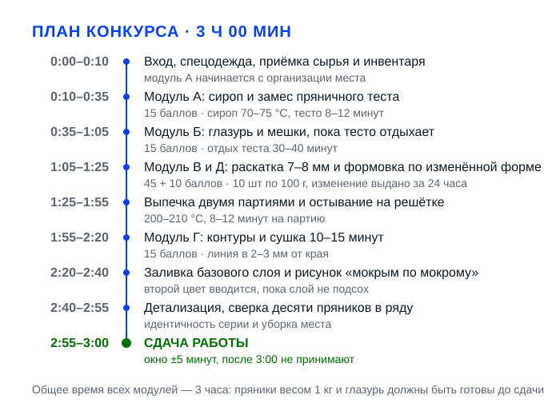
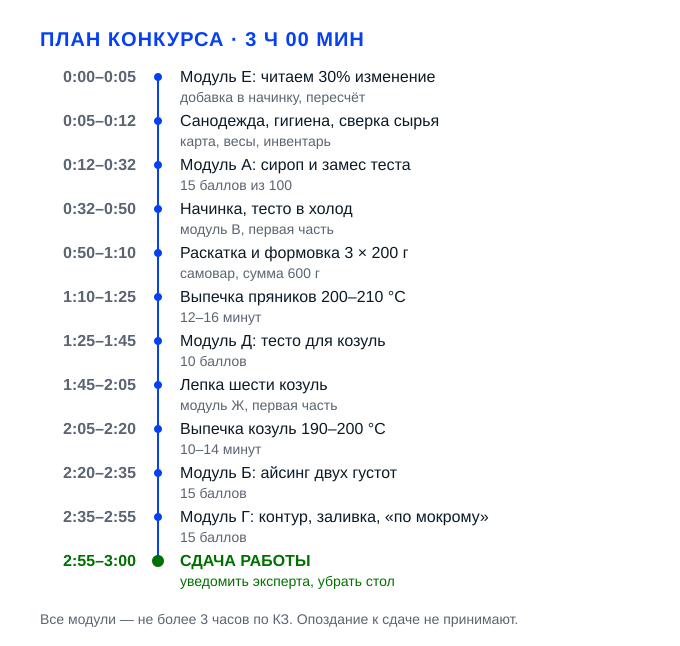
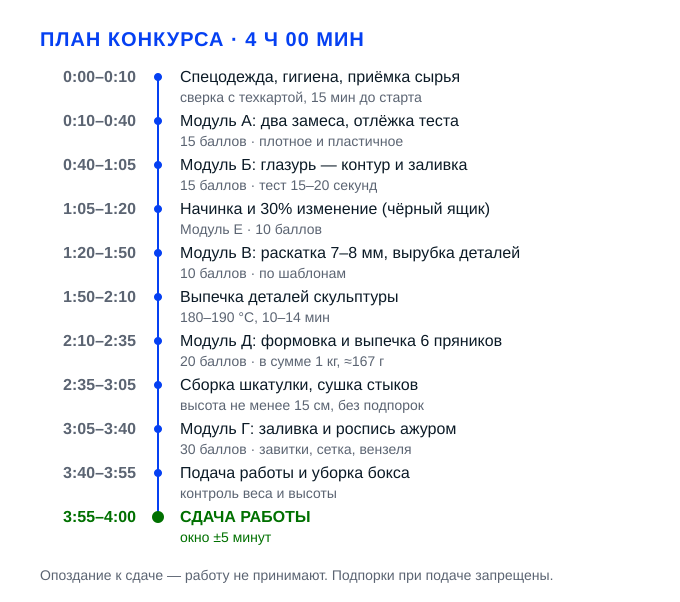

Пряничное дело (Р)
Задания ниже — официальные файлы «Абилимпикс» (источник: abilympics-russia.ru), разложенные по категориям. Решения написаны по тексту задания, регламенту и критериям оценки; в них указано, что именно проверяет эксперт.
Школьник
14–16 лет, базовый уровень заданияВыдержка из официального конкурсного задания: страницы, относящиеся к категории «Школьник» (стр. 6–7, 10–11 источника).
Пошаговое решение
Задание категории «Школьники» укладывается в три часа и состоит из пяти модулей: замесить пряничное тесто (модуль А, 15 баллов), приготовить глазурь (модуль Б, 15), сформовать и выпечь десять пряников общей массой один килограмм заданной формы (модуль В, 45), расписать их идентично заданной теме (модуль Г, 15) и отработать тридцатипроцентное изменение, которое приходит в модуле Д (10). Сумма — сто баллов, и почти половина из них приходится на формовку и выпечку, поэтому тесто и печь надо считать заранее: если первые пряники поедут в печь на сороковой минуте, к росписи вы подойдёте с запасом, а если на семидесятой — глазурь ляжет на тёплые пряники и поплывёт. Ниже вся работа разложена по действиям и шагам, с цифрами, температурой и признаками, по которым видно, что этап закрыт.

Задача 1. Замесить пряничное тесто (модуль А)Модуль А · 15 баллов
Модуль А — это не только замес, но и всё, что ему предшествует: спецодежда, приёмка сырья, подбор инвентаря. Пятнадцать баллов складываются из наблюдаемой организации и измеримого результата — теста, которое держит форму, не липнет к скалке и через полчаса отдыха раскатывается в пласт без разрывов. Пряничное тесто прощает почти всё, кроме спешки: не растворённый сахар хрустит на зубах, перегретый сироп заваривает муку, а недомешанное тесто рвётся под вырубкой. Поэтому первые двадцать минут работы — самые дорогие.
Действие 1.1. Войти на площадку и подготовить рабочее место
Шаг 1.1.1
Надеваем полный комплект: белый китель с рукавом три четверти, поварские брюки на резинке, белый фартук, поварской колпак и закрытую обувь с зафиксированной пяткой. Волосы убираем под колпак целиком — и спереди, и на затылке, потому что именно затылок чаще всего остаётся открытым. Рукава не спускаем ниже локтя: длинный рукав касается теста, цепляется за бортик миски и тянет за собой муку. Ногти коротко подстрижены, без лака, кольца и браслеты сняты до входа на площадку.
Спецодежда — прямое требование конкурсного задания: в разделе 3.1 перечислены китель, брюки, колпак, закрытая обувь и фартук, и всё это участник привозит с собой. Модуль А целиком стоит 15 баллов, критерий измеримый, и эксперт проверяет комплект до старта, а потом следит, остаётся ли он чистым. Мука и глазурь пачкают мгновенно, поэтому белый китель к концу третьего часа — это ещё и индикатор аккуратной работы.
Проверьте себя по трём признакам: волос не видно ни спереди, ни сзади; китель застёгнут и не топорщится на плечах; обувь закрытая и сухая. Попросите волонтёра или соседа посмотреть со спины — самому затылок не виден.
Классическая ошибка — надеть колпак на макушку, оставив затылок открытым: спереди всё аккуратно, а сзади выбиваются волосы, и это фиксируется как нарушение санитарных требований. Вторая — прийти в открытой обуви или в футболке, рассчитывая переодеться потом: время уйдёт из модуля А, а балл за спецодежду уже снят.
Эксперт осматривает участника до старта, стоя в двух шагах, и отмечает комплектность и чистоту. Дальше он смотрит на руки и китель в те моменты, когда вы подходите к общему столу или к печи.
Шаг 1.1.2
Моем руки с мылом до запястий, вытираем одноразовым полотенцем и подходим к рабочему месту. Берём технологическую карту и проходим по ней сверху вниз: мука пшеничная высшего сорта, сахар, мёд, маргарин или сливочное масло, яйца, сода, какао, пряности — корица, гвоздика, имбирь, кардамон. Каждую позицию сверяем по весу на весах и по внешнему виду, а не «на глаз»: две ложки мёда вместо ста двадцати граммов меняют и влажность теста, и его поведение под вырубкой.
Приёмка — единственный момент, когда недостающее ещё можно получить: после старта замена идёт только через главного эксперта. Пряничное тесто сбалансировано по сахару и жиру, и произвольная замена одного компонента ломает весь расчёт: тесто либо не держит форму, либо расползается на противне. Сверка с картой занимает пять минут и сохраняет пятнадцать баллов модуля А.
Все строки карты отмечены карандашом, расхождения записаны: чего нет, сколько нет, в каком виде. Мёд жидкий и без кристаллов, сода без комков, мука не слёживалась, яйца целые, маргарин холодный. Сомнительный продукт откладываем в сторону, а не пускаем в замес.
Начать с замеса, не сверив карту, — потом в середине работы выясняется, что нет корицы или мёда, и пересчитывать рецептуру поздно. Вторая ошибка — промолчать о недостаче, рассчитывая «обойтись»: недоложенный жир даёт жёсткий пряник, который крошится при росписи.
Эксперт подходит к столу в первые минуты и смотрит, разложено ли сырьё по порядку и работает ли участник по карте. Отдельно отмечается, взвешивает ли он продукты или сыплет на глаз.
Шаг 1.1.3
Раскладываем инвентарь по зонам, а не в одну кучу: слева — сырьё и весы, в центре — широкая миска для замеса, сито, венчик, лопатка; справа — стол для раскатки со скалкой и вырубкой «матрёшка», рядом противень с пергаментом и решётка для остывания; отдельно — миски под глазурь, кондитерские мешки с насадками и зубочистки. Ножи, скребок и полотенца держим под рукой, но вне зоны, где рассыпана мука.
Пряники делаются в шесть переходов, и каждый переход с переставлением посуды съедает минуты, которых в трёх часах нет. Зонирование — это ещё и гигиена: сырое яйцо не должно оказаться рядом с готовым изделием, а мука на полу — это риск поскользнуться с горячим противнем. Модуль А оценивается измеримо, в том числе по организации рабочего места.
Проверьте: миска для замеса сухая и достаточно широкая, чтобы тесто свободно мешалось; весы включены и показывают ноль с тарой; противень застелен пергаментом; вырубка сухая; кондитерские мешки и насадки на месте до того, как понадобится глазурь.
Свалить всё в центр стола: в муке оказываются мокрые руки, полотенце, крышка от кастрюли, и на поиск нужного уходит время. Вторая ошибка — начать замес, не застелив противень и не приготовив решётку, из-за чего первая партия остывает прямо на горячем листе и отсыревает снизу.
Эксперт оценивает рабочее место один раз в начале и второй раз в конце, сравнивая состояние. Порядок на столе он читает как профессиональную привычку, а не как украшение.
Действие 1.2. Сварить сироп и замесить тесто
Шаг 1.2.1
В кастрюлю с толстым дном кладём сахар, добавляем воду из расчёта примерно сто миллилитров на двести пятьдесят граммов сахара и мёд, ставим на средний огонь. Помешиваем, пока крупинки не растворятся полностью, и доводим до семидесяти — семидесяти пяти градусов: на поверхности появляется первая мелкая рябь, но бурного кипения нет. Снимаем с огня и остужаем до сорока — сорока пяти градусов, проверяя тыльной стороной ладони над кастрюлей.
Сахар должен раствориться до состояния сиропа, иначе в готовом прянике остаются кристаллы, которые скрипят на зубах и видны на изломе. Кипятить сироп нельзя: часть воды выпаривается, концентрация растёт, и тесто получается крутым, а при раскатке рвётся по краям. Тёплый, а не горячий сироп нужен, чтобы не заварить муку и не убить действие соды.
Проведите ложкой по дну — крупинок не чувствуется, сироп прозрачный, с легким медовым запахом. Капля на холодной тарелке растекается медленно, но не застывает в карамель. Температура на термометре не выше сорока пяти градусов — тёплое, не обжигающее.
Довести сироп до бурного кипения «чтобы точно растворился»: вода выкипает, сироп густеет, и тесто приходится разбавлять — пропорции уехали. Вторая ошибка — влить горячий сироп в муку: мука заваривается комками, которые потом не разбить, и на срезе пряника видна полоса.
Эксперт смотрит на сироп в момент варки: помешивает ли участник, не кипит ли масса, остужает ли он её перед вводом в муку. Эти три признака он отмечает сразу, не дожидаясь выпечки.
Шаг 1.2.2
Пока сироп остывает, готовим сухую часть. Просеиваем муку через сито с ячейкой около миллиметра в широкую миску — не меньше двух раз, чтобы она насытилась воздухом. Добавляем соду, какао и молотые пряности, перемешиваем венчиком две-три минуты до ровного цвета: в готовой смеси не должно быть тёмных и светлых пятен. Работаем в сухой миске, чтобы мука не набрала лишнюю влагу.
Двойное просеивание даёт подъём: пряник поднимается на соде, и чем равномернее она распределена, тем ровнее подъём. Комки какао или корицы после замеса остаются тёмными точками на светлом срезе — это видно и на изломе, и под глазурью. Ровный цвет сухой смеси — гарантия, что пряник получится одинаковым во всей партии из десяти штук.
Смесь однородная по цвету, без комков, при сжатии в кулаке не слипается в плотный комок. Проведите пальцем по дну миски — сухих слоёв соды или какао не остаётся. Проверка занимает полминуты, но именно она показывает, что сухая часть готова к вводу сиропа.
Просыпать муку один раз и сразу добавить соду сверху: сода ложится пятнами, и в одном прянике тесто поднимется, а в другом останется плотным. Вторая ошибка — сыпать пряности «по вкусу»: сильная корица перебивает мёд, и эксперт на дегустации отметит грубый аромат.
Эксперт обращает внимание, просеяна ли мука и перемешана ли сухая часть: он может провести пальцем по поверхности смеси. Неоднородность видна сразу, и это отражается в оценке технологии.
Шаг 1.2.3
В тёплый сироп вводим размягчённый маргарин или масло, размешиваем до однородности, затем добавляем яйца по одному, каждый раз вымешивая до полного соединения. Полученную жидкую часть вливаем в сухую смесь и замешиваем рукой или лопаткой восемь — двенадцать минут: тесто собирается в шар, перестаёт липнуть к ладони и к стенкам миски, поверхность становится гладкой, слегка матовой.
Порядок ввода неслучаен: жир и яйца в сиропе образуют эмульсию, и если сначала смешать яйца с мукой, а потом добавить жир, эмульсия не получится и тесто будет слоиться. Восемь — двенадцать минут — время, за которое клейковина развивается достаточно, чтобы пласт держал форму матрёшки и не садился при выпечке. Недомес виден по рваным краям вырубки, перемес — по тугому, пружинящему тесту.
Скатайте небольшой шар: он гладкий, не блестит от жира, не липнет к сухой ладони. При вдавливании пальцем ямка восстанавливается медленно, за две-три секунды. Тесто тёплое, около двадцати трёх — двадцати пяти градусов, и пахнет мёдом и пряностями.
Месить три минуты и успокоиться: пласт при раскатке рвётся, вырубка оставляет рваные края, а пряник после печи садится в середину. Вторая ошибка — влить яйца все сразу: эмульсия расслаивается, тесто выходит крупитчатым и требует лишней муки.
Эксперт подходит в конце замеса и смотрит на тесто в миске: однородное ли, не липнет ли к рукам. Часто он просит показать шар и слегка нажимает на него пальцем.
Шаг 1.2.4
Собираем тесто в шар, заворачиваем в пищевую плёнку или накрываем миску полотенцем и оставляем на тридцать — сорок минут при комнатной температуре. За это время готовим противень, решётку и начинаем глазурь, чтобы не простаивать. Тесто не убираем в холодильник: холодное оно крошится под скалкой и требует долгого согревания. Миску ставим в место без сквозняка, подальше от открытой форточки.
Отдых нужен, чтобы мука набрала влагу из сиропа, а клейковина расслабилась после замеса. Без отдыха пласт сжимается обратно после раскатки, матрёшка получается с перекошенной головой, а на поверхности остаются мелкие трещины. Тридцать — сорок минут — то время, которое окупается ровной формой и одинаковым весом всех десяти заготовок.
Через полчаса тесто на ощупь стало мягче и податливее, при нажатии остаётся аккуратная вмятина, поверхность не заветрилась. Плёнка изнутри влажная — значит, тесто не сохнет. Если плёнка снаружи сухая, а изнутри влажная, режим отдыха выдержан верно.
Начать раскатку сразу после замеса: пласт стягивается, и вырубленная матрёшка уменьшается на глазах. Вторая ошибка — оставить тесто открытым на час: сверху образуется сухая корка, которая потом идёт в пряники светлыми полосами.
Эксперт проверяет, накрыто ли тесто и сколько времени оно отдыхает. Иногда он задаёт вопрос, зачем нужен отдых, — ответ про влагу и клейковину показывает понимание процесса.
Действие 1.3. Проверить тесто и разделить его на порции
Шаг 1.3.1
Отрезаем от шара небольшой кусок и раскатываем пробный пласт толщиной около семи миллиметров. Смотрим на кромку: она должна быть гладкой, без рваных зубцов, а тесто — не прилипать к скалке без подпыла. Если пласт крошится по краям, добавляем одну-две ложки воды и вымешиваем ещё минуту; если расползается и липнет — ложку муки, но не больше. Пробный кусок потом идёт в общий комок, выбрасывать его не нужно.
Пробная раскатка — самая дешёвая проверка: она занимает минуту и спасает всю партию. Влажность пряничного теста держится около восемнадцати — двадцати процентов, и на глаз это видно именно по кромке пласта. Пятнадцать баллов модуля А ставятся в том числе за готовность теста к формовке, а не за факт замеса.
Кромка ровная, пласт не рвётся при подъёме на скалке, след пальца на поверхности медленно выравнивается. Пробный пряник, вырезанный и запечённый отдельно, не расплывается и сохраняет контур. Если пробный пряник расплылся, тесто тёплое или жидкое — дайте ему остыть.
Раскатать весь шар и только тогда заметить, что тесто рвётся: обрезки придётся соединять, и они дают грубую, заметную на готовом изделии текстуру. Вторая ошибка — сыпать муку горстями: тесто становится сухим, пряник после печи трескается по всей поверхности.
Эксперт может попросить показать пробный пласт. Он смотрит на кромку и на то, посыпает ли участник стол мукой или работает с минимальным подпылом. Ему важно убедиться, что участник проверяет тесто до формовки, а не после.
Шаг 1.3.2
Делим тесто на куски под будущие пряники: на десять штук по сто граммов каждый, то есть ровно килограмм на всю партию. Каждый кусок взвешиваем на весах с точностью до грамма и подкатываем в шарик, накрывая плёнкой по мере готовности. Крупные куски оставляем на потом, мелкие пускаем в работу первыми. Шарики кладём на доску, подпылённую мукой, на расстоянии ладони друг от друга.
Вес — измеримый критерий задания: десять пряников общей массой один килограмм, значит сто граммов на изделие до выпечки. Если куски на глаз, разброс доходит до двадцати граммов, и пряники получаются разного размера — а расписать их нужно идентично, что на разных по площади заготовках невозможно.
Десять шариков лежат под плёнкой, каждый взвешен и записан. Сумма на весах — около тысячи граммов, отклонение не больше двадцати граммов на всю партию. Шарики одинакового диаметра, поверхность гладкая.
Делить тесто «на десять частей» без весов: два пряника уходят в крупные, восемь в мелкие, и на росписи рисунок не совпадает по масштабу. Вторая ошибка — оставить нарезанные куски открытыми: они заветриваются за десять минут и потом дают трещины.
Эксперт смотрит на весы и на то, взвешивает ли участник каждый кусок. При финальной оценке он перевесит готовые пряники и сравнит с килограммом из задания.
Задача 2. Приготовить глазурь и разложить её по мешкам (модуль Б)Модуль Б · 15 баллов
Модуль Б — это пятнадцать баллов за продукт, который определит внешний вид всей партии. Глазурь должна быть одинаковой во всех десяти пряниках, поэтому её готовят одной порцией и делят на цвета заранее, а не подкрашивают по ходу росписи. Главный навык здесь — чувствовать консистенцию пальцем и ложкой: слишком густая не зальёт плоскость и ляжет полосами, слишком жидкая стечёт за контур и оставит на подложке лужи. Времени на модуль уходит около пятнадцати минут, и их лучше взять в начале, пока тесто отдыхает.
Действие 2.1. Приготовить базовую глазурь
Шаг 2.1.1
Подбираем оборудование под объём: миксер с венчиком или ручной венчик, две сухие миски, сито с мелкой ячейкой, весы, лопатка, стаканы под цвета. Сахарную пудру просеиваем заранее — комки в пудре не разбиваются и остаются белыми точками на цветной заливке. Белки отделяем от желтков в отдельную сухую посуду, следя, чтобы в белок не попало ни капли желтка и ни капли воды.
Глазурь на белке не любит ни жира, ни воды: желток или капля с мокрой миски не дают ей взбиться до нужной плотности, и она остаётся жидкой, сколько её ни взбивай. Просеянная пудра и сухая посуда — это те две мелочи, из-за которых пятнадцать баллов модуля Б либо набираются, либо теряются на первом же шаге.
Миски сухие и обезжирены, пудра просеяна, белок в отдельной посуде и без следов желтка. Венчик чистый и сухой, весы включены и обнулены с тарой. Перед отделением белков протрите миску половинкой лимона: следы жира снимаются.
Взбивать в миске, в которой до этого была вода или жир: глазурь не густеет, и участник начинает добавлять пудру горстями, пока не получит плотную массу, которая потом не растекается. Вторая ошибка — просеять пудру «потом», уже в процессе: комки остаются.
Эксперт смотрит на подготовку посуды и на то, просеяна ли пудра. Он также отмечает, отделён ли белок аккуратно или в него попал желток. Отдельно он отмечает, аккуратно ли отделён белок: желток в белке — частая причина неудачи.
Шаг 2.1.2
Соединяем один белок примерно с двумястами граммами просеянной пудры и перемешиваем лопаткой до увлажнения, а затем включаем миксер на минимальных оборотах и работаем три — пять минут. Смесь светлеет, густеет и начинает держать след от венчика. Максимальные обороты не включаем: они загоняют воздух, и на заливке потом видны пузыри. Пудру вводим в два-три приёма, а не одной горкой.
Пропорция белка и пудры задаёт плотность: примерно один белок на двести граммов пудры даёт основу, из которой можно сделать и контур, и заливку. Низкие обороты нужны потому, что пузырьки воздуха в глазури при сушке лопаются и оставляют кратеры — на белом фоне они выглядят как грязь. Модуль Б оценивается измеримо: эксперт смотрит на однородность и на поведение глазури при заливке.
Масса однородная, глянцевая, без комков, след от венчика держится две-три секунды и медленно заплывает. На поверхности нет крупных пузырей, цвет ровный белый, без серого оттенка. Если масса тянется нитями, пудры мало — добавьте ложку и взбейте ещё минуту.
Взбивать на полной мощности: глазурь насыщается воздухом, при заливке пузыри выходят на поверхность, и пряник получается рябым. Вторая ошибка — сыпать пудру в белок сразу всю: масса идёт комками, и разбить их венчиком уже не получается.
Эксперт подходит в момент взбивания и слушает, не воет ли миксер на высоких оборотах. Он может зачерпнуть глазурь ложкой и посмотреть, как она стекает обратно.
Шаг 2.1.3
Доводим консистенцию до рабочей: поднимаем ложку и смотрим, как стекает струйка — она должна смыкаться с поверхностью примерно за десять — пятнадцать секунд и разравниваться сама. Если струйка стоит горкой, добавляем воду буквально по капле, размешивая после каждой; если растекается мгновенно и просвечивает — подсыпаем пудру через сито. Всё делаем в одной миске, не переливая массу из посуды в посуду.
Правило десяти — пятнадцати секунд — самый быстрый способ поймать нужную плотность без приборов. Именно такая глазурь заливает плоскость ровным слоем, не образуя валиков у контура и не стекая за него. От консистенции зависит и техника «мокрым по мокрому»: на слишком густой глазури второй цвет не растекается, а ложится бугром.
Борозда, проведённая зубочисткой по поверхности в стакане, смыкается за десять — пятнадцать секунд. Ложка, вынутая из глазури, покрыта ровным слоем, без комков и без просветов. Проверку повторяем после каждого добавления воды или пудры.
Добавить воду ложкой: глазурь мгновенно становится жидкой, и вернуть её обратно пудрой уже не выйдет — пропорция сбита, заливка потечёт. Вторая ошибка — работать с заведомо густой глазурью: она ложится полосами, и на просвет видно каждое движение мешка.
Эксперт проверяет консистенцию пальцем или ложкой и смотрит, добавляет ли участник воду по капле. Именно этот момент чаще всего показывает уровень владения техникой.
Шаг 2.1.4
Снимаем пену ложкой, даём глазури постоять пять минут и ещё раз аккуратно перемешиваем лопаткой, а не венчиком. Накрываем миску влажной тканью или плёнкой в контакт и убираем в прохладное место до начала росписи. Перед использованием снова проверяем консистенцию, потому что за полтора часа глазурь слегка загустеет. Перед росписью глазурь перемешиваем лопаткой, а не венчиком, чтобы снова не загнать воздух.
Пузыри, поднявшиеся к поверхности, нужно снять до заливки: в готовом изделии они превращаются в мелкие кратеры, которые уже не исправить. Плёнка в контакт не даёт глазури заветриться — сухая корочка сверху потом попадает в мешок и забивает насадку. Пятнадцать баллов модуля Б ставятся за готовый продукт, и он должен быть одинаковым у всех десяти пряников.
Поверхность глазури гладкая, без пены и без корочки. Через полтора часа она по-прежнему стекает за десять — пятнадцать секунд, не расслоилась и не пахнет белком. Если сверху видна тонкая плёнка, её снимаем ложкой, а массу перемешиваем.
Оставить глазурь открытой на два часа: сверху образуется плёнка, её размешивают вместе с массой, и в заливке появляются белые хлопья. Вторая ошибка — убрать глазурь в холодильник: холодная она густеет и ложится неровно.
Эксперт смотрит, накрыта ли посуда с глазурью и в каком она состоянии к моменту росписи. Расслоившуюся или заветренную глазурь он отмечает как потерю качества.
Действие 2.2. Окрасить глазурь и разложить по кондитерским мешкам
Шаг 2.2.1
Делим базовую глазурь на порции по цветам: отдельно белая на контур и фон, отдельно два-три цвета для рисунка. Краситель берём гелиевый и вводим зубочисткой — кончик на сто граммов массы, перемешиваем и смотрим цвет, а не льём на глаз. Те же цвета, что нужны для десяти пряников, готовим сразу на всю партию, чтобы не подкрашивать в процессе. Каждую порцию сразу накрываем, чтобы не образовалась корочка.
Одинаковый оттенок на всех десяти изделиях — это и есть требование расписать идентично. Подкрашивая по ходу, участник почти всегда получает разные тона: на глаз добавить столько же красителя второй раз невозможно. Гелиевый краситель не разжижает глазурь, в отличие от жидкого, который меняет консистенцию и заставляет снова добавлять пудру.
Каждый цвет размешан до однородности, на стенке стакана нет тёмных разводов, оттенки отличаются друг от друга заметно. Порций хватает на десять пряников с запасом примерно четверть. Цвет проверяем на пергаменте: на прянике он выглядит иначе из-за фона.
Капнуть жидкий краситель: глазурь становится жиже, заливка течёт за контур, и приходится гасить её пудрой, теряя цвет. Вторая ошибка — сделать цвет «на один пряник» и потом повторять: оттенки не совпадут, и идентичность партии пропадёт.
Эксперт смотрит на палитру: сколько цветов, насколько они чистые и одинаковые по насыщенности. Пестрота без логики читается как отсутствие замысла. Иногда он просит назвать, какой цвет за каким идёт в композиции.
Шаг 2.2.2
Готовим две консистенции из одной массы: контурную — чуть плотнее, чтобы линия держала форму и не растекалась, и заливочную — по правилу десяти — пятнадцати секунд. Контурную перекладываем в мешок с насадкой номер один или два, заливочную — в мешок с насадкой пошире либо в обычный корнет с отрезанным кончиком в два миллиметра. Готовые мешки ставим в стаканы насадкой вверх.
Контур — это граница, по которой потом разливается заливка. Если контур жидкий, он расползётся, и заливка уйдёт за край матрёшки. Если заливочная глазурь слишком густая, она не растекается до контура и оставляет пустые островки у линии. Две консистенции из одной массы — стандартный приём, который экономит время и даёт ровный результат.
Проведите пробную линию контуром на пергаменте: она держит высоту, не растекается в лужу и не рвётся. Капля заливочной глазури на пергаменте разравнивается в кружок за десять — пятнадцать секунд. Линия не должна просвечивать на пергаменте.
Работать одной консистенцией на всё: контур плывёт, заливка не доходит до края. Вторая ошибка — набить мешок с горкой: глазурь выдавливается из верхнего края, руки в ней, и пряники пачкаются при переносе.
Эксперт проверяет пробную линию и каплю, а также то, подписаны ли мешки. Ему важно видеть, что участник понимает разницу между контуром и заливкой, а не просто выдавливает массу.
Шаг 2.2.3
Наполняем мешки на две трети, выпускаем воздух, собирая массу к центру, и закручиваем верх. Кончик мешка держим закрытым пальцем, пока не начали работу. Каждый мешок подписываем маркером или ставим на стакан с соответствующей надписью, чтобы в разгар росписи не путать цвета. Наполняем мешок над миской, чтобы капли не пачкали стол и пряники. Плёнку закручиваем плотно, выдавливая воздух к кончику.
Воздух в мешке — главная причина «плевков»: при нажатии он выходит вперёд и выбрасывает глазурь неровной каплей, портя линию. Наполнение на две трети даёт контроль над давлением: полный мешок давит сам, и рука не чувствует толщину линии. Подписи экономят секунды, которых в конце третьего часа особенно мало.
Мешок плотный, без воздушных карманов, при нажатии идёт ровная струйка без рывков. Верх закручен и не протекает, кончик не забит. Проверку делаем на пергаменте, а не на прянике: брак потом не убрать. Мешок должен лежать в руке уверенно, без скольжения.
Набить мешок до края: при закручивании глазурь выдавливается наружу, мешок скользит в руке. Вторая ошибка — не выпустить воздух: первая линия выходит с пузырём и кляксой, а на десяти пряниках это уже заметный брак.
Эксперт смотрит, как участник держит мешок и как выдавливает первую линию. Ровный старт без кляксы он отмечает сразу — это признак наработанной техники.
Шаг 2.2.4
Накрываем насадки влажной тканью, а мешки кладём горизонтально на поднос так, чтобы глазурь не вытекала. Держим их при комнатной температуре не дольше двух часов и перед каждой сменой цвета протираем кончик насадки влажной салфеткой. Если глазурь в мешке загустела, разминаем мешок руками, а не разбавляем водой. Если работаете с перерывом, мешки лучше убрать в прохладное место на десять минут.
Глазурь на белке сохнет с поверхности за пятнадцать — двадцать минут, и забитая насадка — это потеря темпа в самый неподходящий момент. Влажная ткань держит кончик открытым, а протирание убирает налипшую массу, из-за которой линия идёт с утолщением. Вода в мешок не годится: она расслаивает массу и делает цвет бледнее.
Насадки не забиты, при пробном нажатии линия идёт ровно и одинаково по толщине. На мешках нет потёков, глазурь однородная, без крупинок по краю. Забитая насадка проверяется пробным нажатием на пергамент, а не на весу.
Оставить мешки открытыми на столе на полчаса: кончик забивается, и при первом нажатии мешок лопается по шву. Вторая ошибка — разбавить загустевшую глазурь водой прямо в мешке: цвет и плотность уже не восстановить.
Эксперт может пройти вдоль стола и посмотреть на мешки. Забитые насадки и потёки на мешках он читает как небрежность в работе с инструментом. Он же смотрит, не лежит ли мешок насадкой вниз прямо на столе.
Задача 3. Сформовать и выпечь десять пряников формы «матрёшка» (модуль В)Модуль В · 45 баллов
Самый дорогой модуль: сорок пять баллов из ста. Здесь проверяется всё сразу — толщина пласта, чистота вырубки, вес каждого пряника, ровность противня, режим печи и состояние готового изделия. Задание требует десять штук общей массой один килограмм и форму «матрёшка», причём расписывать их нужно идентично, а значит и заготовки должны быть одинаковыми: одна толщина, один контур, один размер. Ошибка на этом модуле не компенсируется росписью — кривой пряник под глазурью остаётся кривым, а потерянный вес уже не вернуть.
Действие 3.1. Раскатать полуфабрикат
Шаг 3.1.1
Стол протираем насухо и подпыляем мукой тонким слоем — буквально щепоткой, размазанной ладонью, а не горстью. Кладём кусок теста, слегка приплющиваем ладонью и ставим по краям две рейки-ограничителя толщиной семь — восемь миллиметров, если они есть в наборе. Скалку держим за ручки, а не за середину: так давление распределяется равномерно по всей длине.
Толщина пласта — это толщина готового пряника, и она напрямую влияет на вес: из пласта семь миллиметров матрёшка выходит около ста граммов, из пласта десять миллиметров — уже сто тридцать. Ограничители убирают разброс по площади, а тонкий подпыл нужен, чтобы тесто не прилипало, но и не набирало лишнюю муку, от которой пласт начинает трескаться.
Пласт ровный, одинаковый по толщине в центре и у краёв, не прилипает к скалке при подъёме. Проверьте линейкой в трёх точках: разница не больше одного миллиметра. Толщину проверяем не на глаз, а линейкой, поставленной вертикально.
Посыпать стол мукой щедро: нижний слой пласта пересушен, при выпечке он отделяется и пряник получает «подошву». Вторая ошибка — раскатывать без ограничителей и давить на середину скалки: пласт выходит линзой, толстый в центре и тонкий по краям.
Эксперт смотрит на пласт и может измерить толщину линейкой. Он также отмечает, сколько муки на столе: избыток подпыла виден по белёсой поверхности теста.
Шаг 3.1.2
Раскатываем от центра к краям короткими движениями, каждые три-четыре прохода поворачивая пласт на девяносто градусов и подпыляя стол по необходимости. Давим корпусом, а не только кистями, чтобы усилие было одинаковым. Доводим пласт до нужной толщины за один подход, не собирая его в комок и не раскатывая заново. Если пласт прилипает, подпыляем стол, а не сам пласт.
Поворот на девяносто градусов не даёт тесту стягиваться в одном направлении: клейковина тянется, и без поворота пласт после вырубки сжимается, а матрёшка теряет форму. Раскатка за один подход важна потому, что повторная сборка пласта даёт слоистость и грубую текстуру на изломе — а модуль В оценивается измеримо, в том числе по качеству поверхности.
Пласт не стягивается, если отпустить его на десять секунд: края остаются на месте. Поверхность гладкая, без трещин и без выраженных полос от скалки. Пласт свободно снимается с подпыленного стола. Проверку делаем сразу после раскатки, пока тесто не успело стянуться.
Раскатывать в одном направлении: пласт вытягивается овалом, и круглая часть матрёшки деформируется. Вторая ошибка — собирать пласт в комок после первой неудачной раскатки: тесто уплотняется, и пряник получается жёстким, как сухарь.
Эксперт наблюдает за движениями скалки. Ровная, ритмичная раскатка с поворотами читается как профессиональный навык, рывками — как спешка. Ровный ритм он отличает от рывков безошибочно.
Шаг 3.1.3
Проверяем толщину по всей площади: линейкой или штангенциркулем в пяти точках — центр и четыре края. Если где-то толще, аккуратно проходим скалкой только по этому участку, не трогая остальное. Готовый пласт накрываем плёнкой и оставляем на две-три минуты, чтобы поверхность подсохла и не липла к вырубке. Линейку ставим вертикально, а не под углом: под наклоном замер завышается.
Разная толщина даёт разный вес и разное время пропекания: тонкий край подгорит, пока середина дойдёт до готовности. Пять контрольных точек — это тот минимум, который показывает реальный разброс. Две-три минуты под плёнкой нужны, чтобы тесто не прилипало к стенкам формы и контур вырубки оставался чистым.
Разница между измерениями не больше одного миллиметра, поверхность матово-влажная, но не липкая. При прикосновении пальцем тесто не тянется за рукой. Если разброс больше двух миллиметров, пласт лучше раскатать заново.
Пропустить проверку: на выпечке выясняется, что крайние матрёшки толще, и они не пропеклись в середине. Вторая ошибка — передержать пласт открытым: он заветривается, и при вырубке края крошатся. Проверка занимает полминуты.
Эксперт может попросить линейку и проверить пласт сам. Единая толщина — один из признаков, по которым он отличает уверенную работу от случайной. Он смотрит и на то, как участник держит линейку.
Шаг 3.1.4
Разрезаем пласт на удобные куски шириной с будущую матрёшку, чтобы каждый можно было вырубить без переноса. Обрезки складываем отдельно, не смешивая с основным тестом, и накрываем плёнкой. Работаем быстро: пласт на столе живёт десять — пятнадцать минут, потом начинает подсыхать по кромке. Обрезки не сминаем в плотный шар сразу, а складываем свободно, слоем.
Вырубать из большого пласта удобно, но при переносе он растягивается и рвётся. Разрезанные куски дают возможность работать по одной заготовке, не тревожа остальное тесто. Обрезки нужны отдельно потому, что их свойства отличаются: они плотнее и требуют отдыха перед повторной раскаткой.
Куски накрыты, кромки не подсохли, обрезки лежат отдельной кучкой под плёнкой. На столе нет рассыпанной муки, которая попадёт на лицевую сторону пряника. Проверяем кромку пальцем: она должна быть мягкой, как и середина пласта.
Оставить пласт открытым на двадцать минут: кромка твердеет, вырубка идёт с усилием, и на матрёшке остаются надрывы. Вторая ошибка — смешать обрезки с основным тестом сразу: они плотнее, и партия выходит неоднородной.
Эксперт смотрит, накрыто ли тесто и как участник обращается с обрезками. Аккуратная работа с остатками для него — признак экономии и понимания технологии.
Действие 3.2. Сформовать десять пряников формы «матрёшка»
Шаг 3.2.1
Окунаем вырубку в муку, стряхиваем излишек и ставим её на пласт строго вертикально, не наклоняя. Нажимаем равномерно всей ладонью до упора, затем, не сдвигая форму, покачиваем её из стороны в сторону на пару градусов и только после этого поднимаем. Готовую матрёшку снимаем с пласта, поддевая скребком или широким ножом. Форму вытираем насухо между нажатиями.
Наклон вырубки даёт косой срез: одна сторона пряника выше другой, и при росписи глазурь уходит в сторону. Покачивание перед подъёмом освобождает тесто от стенок, и контур остаётся чистым, без рваных заусенцев. Скребок нужен, чтобы не растянуть силуэт пальцами — матрёшка должна остаться симметричной.
Контур чистый, без заусенцев и надрывов, силуэт симметричный, толщина одинаковая по всему периметру. На поверхности нет складок и вмятин от пальцев. Проверьте заготовку на просвет: толщина должна быть одинаковой по всему контуру.
Давить на форму с наклоном: пряник получается с косой кромкой, и на выпечке эта кромка подгорает первой. Вторая ошибка — вытряхивать заготовку из формы, стуча ею по столу: край мнётся, а на тесте остаются вмятины.
Эксперт берёт в руки одну-две заготовки и смотрит на кромку и на симметричность. Косые срезы и рваные края он отмечает как потерю качества формовки. Он ставит заготовку на стол и смотрит, не качается ли она.
Шаг 3.2.2
Каждую вырубленную матрёшку сразу взвешиваем: сто граммов плюс-минус пять, то есть от девяноста пяти до ста пяти. Если заготовка тяжелее, снимаем излишек тонким срезом с обратной стороны или раскатываем пласт тоньше; если легче — добавляем кусочек теста и подкатываем край. Результат записываем, чтобы видеть разброс по партии. Весы ставим рядом, чтобы не носить заготовки через стол.
Килограмм на десять штук — жёсткое условие задания, и складывается он именно здесь, до выпечки. Пять граммов допуска дают разброс в пятьдесят граммов на партию, что уже заметно на весах эксперта. Взвешивание каждой заготовки, а не одной выборочно, — единственный способ удержать партию в норме, потому что пласт по площади не идеально равномерен.
Все десять заготовок взвешены, весы показывают от девяноста пяти до ста пяти граммов. Сумма — около тысячи граммов, отклонение не больше тридцати. Заготовки одинакового размера на глаз. Записанные веса нужны для второй партии.
Взвесить одну заготовку и остальные резать «по ней»: разброс доходит до пятнадцати граммов, и общий вес уходит за килограмм. Вторая ошибка — срезать излишек с лицевой стороны: на поверхности остаётся плоское пятно, которое после выпечки темнеет.
Эксперт почти наверняка перевесит готовые пряники и сравнит с килограммом из задания. Он же смотрит, есть ли на столе весы и пользуется ли ими участник.
Шаг 3.2.3
Выкладываем заготовки на противень с пергаментом, оставляя между ними два сантиметра: пряники почти не расплываются, но поднимаются, и тесная посадка даёт слипшиеся бока. Ставим их одинаково — головой вверх, ровными рядами по пять штук, чтобы на выпечке все получили одинаковое тепло. Противень держим ровно, не наклоняя при переносе. Противень берём за углы, а не за борта.
Ровная посадка — это одинаковый результат: у края противня жар сильнее, и если одна матрёшка легла ближе к бортику, она зарумянится быстрее остальных. Два сантиметра зазора дают возможность снять пряник, не задев соседний. Одинаковая ориентация важна для росписи: рисунок на всех десяти должен лечь в одном направлении.
Десять заготовок лежат в два ряда по пять, расстояние между ними не меньше двух сантиметров, до бортика — не меньше трёх. Все ориентированы одинаково, пергамент не подвёрнут. Ряды должны быть параллельны краю противня.
Посадить пряники вплотную: после выпечки они слипаются боками, и разделить их можно только с боем, теряя форму. Вторая ошибка — класть заготовки как попало: часть ложится головой вниз, и роспись приходится подгонять под каждую.
Эксперт смотрит на противень до отправки в печь: ровность рядов, зазоры, ориентация. Ровная посадка читается как понимание того, что партия должна быть одинаковой.
Шаг 3.2.4
Обрезки собираем в комок, даём отдохнуть пятнадцать минут под плёнкой и раскатываем заново, но используем не больше двух раз. Если обрезков много, из них формуют дополнительные заготовки про запас — на случай, если один пряник треснет или подгорит. Запасные держим на отдельном пергаменте и в партию на сдачу не ставим. Обрезки смачиваем каплей воды, если они подсохли.
Обрезки уже набрали муку и уплотнились, поэтому после двух раскаток они дают заметно более грубую текстуру — на изломе видно разницу. Отдых возвращает им пластичность, без него пласт рвётся. Запасные заготовки страхуют сорок пять баллов модуля В: заменить подгоревший пряник своей же заготовкой можно, а добрать недостающий вес — нет.
Обрезки мягкие, не крошатся, при раскатке дают ровный пласт. Запасные заготовки лежат отдельно и подписаны, чтобы случайно не попасть в сдачу. Проверьте, нет ли в комке сухих корок от предыдущей раскатки: их нужно удалить.
Раскатывать обрезки пятый раз: пряники из них темнее, грубее и с трещинами, а в партии из десяти это сразу бросается в глаза. Вторая ошибка — выбросить обрезки: на десяти пряниках по сто граммов потери доходят до полутора сотен граммов теста.
Эксперт смотрит, есть ли на противне запасные заготовки и как участник обращается с остатками. Бережливость без потери качества он отмечает положительно.
Действие 3.3. Выпечь пряники
Шаг 3.3.1
Ставим печь на разогрев заранее, минут за пятнадцать до посадки: температура двести — двести десять градусов, нагрев верх и низ, без конвекции на первом противне. Противень ставим на средний уровень, чтобы жар шёл сверху и снизу одинаково. Если печь с конвекцией, убавляем до ста восьмидесяти — ста девяноста и работаем с ней на второй партии. Дверцу держим закрытой до посадки.
Холодная печь — самая частая причина бледных пряников: пока она набирает температуру, тесто уже отдало часть влаги и схватилось, подъёма нет. Средний уровень даёт равномерный прогрев, а конвекция на первом противне сушит поверхность и раньше времени образует корочку, из-за которой пряник трескается.
Индикатор показывает рабочую температуру, печь прогрета не меньше десяти минут. Пробный кусочек теста на противне за минуту начинает румяниться снизу. Термометр печи точнее индикатора: если он есть, ориентируемся на него.
Ставить противень в непрогретую печь: пряники поднимаются неравномерно, края бледные, середина горкой. Вторая ошибка — включить конвекцию на полную: поверхность схватывается, а внутри тесто остаётся сырым.
Эксперт проверяет температуру печи и уровень противня. Он также отмечает, ставит ли участник пробную заготовку, чтобы поймать режим своей печи. Он смотрит, прогрета ли печь до посадки.
Шаг 3.3.2
Ставим противень и выпекаем восемь — двенадцать минут, не открывая дверцу первые семь минут. На восьмой минуте смотрим через стекло: если края матрёшки начали румяниться, а середина ещё светлая, противень разворачиваем на сто восемьдесят градусов и даём ещё две-три минуты. Время фиксируем, чтобы вторая партия шла по тому же режиму. Свет в печи включаем заранее, чтобы не открывать дверцу.
Раннее открывание дверцы выпускает жар, и пряник оседает — на поверхности появляются складки, которые глазурью уже не скрыть. Разворот противня выравнивает румянец: у задней стенки печи жар всегда сильнее. Записанное время — единственный способ получить вторую партию такой же, как первая, а партия должна быть одинаковой.
Края зарумянились ровно, без тёмных пятен, середина по цвету не отличается от краёв больше чем на полтона. Пряник держит форму, не осел и не пошёл волной. Цвет проверяем при выключенном верхнем гриле, иначе он искажается.
Открывать печь каждые две минуты «посмотреть»: пряники оседают, и на лицевой стороне появляются вмятины. Вторая ошибка — держать до тёмно-коричневого цвета: такой пряник горчит, и расписывать его нельзя, тёмный фон съедает цвет глазури.
Эксперт подходит к печи в момент выпечки и смотрит на цвет через стекло. Румянец и ровность поверхности он оценивает ещё до того, как пряники остынут.
Шаг 3.3.3
Проверяем готовность: приподнимаем один пряник лопаткой и смотрим на низ — он должен быть ровного золотистого цвета, без прилипшего теста. Нажимаем пальцем в центре: поверхность пружинит и возвращается обратно, а не продавливается. Если низ бледный — возвращаем противень на две минуты, если тёмный — снимаем немедленно. Лопатку подводим под весь пряник, а не под край.
Пряник готов, когда низ пропёкся, а не когда верх зарумянился: верх темнеет быстрее, и по нему легко передержать. Пружинистость показывает, что середина не сырая — сырая заготовка при нажатии продавливается и не восстанавливается. Недопечённый пряник через час просядет в середине, и роспись ляжет на вогнутую поверхность.
Низ золотистый, без прилипшего теста, при постукивании по низу звук глухой и сухой. Нажатие пальцем оставляет вмятину, которая выравнивается за секунду. Запах — пряный, без горечи. Проверяем два пряника из разных рядов.
Ориентироваться только на верхний цвет: снизу пряник остаётся сырым, и через полчаса середина проваливается. Вторая ошибка — вынуть противень, не проверив низ, и обнаружить прилипший пергамент, который снимается вместе с корочкой.
Эксперт проверяет готовность проколом или нажатием и смотрит на низ изделия. Он же оценивает равномерность пропекания по всей партии, а не по одному прянику.
Шаг 3.3.4
Снимаем противень и перекладываем пряники на решётку лопаткой, не переворачивая: лицевая сторона остаётся сверху. Даём остыть десять — пятнадцать минут при комнатной температуре, накрыв чистым полотенцем от пыли. Тёплыми их не расписываем и не складываем стопкой — только по одному на решётке. Решётку ставим так, чтобы под ней проходил воздух. Полотенце не должно касаться глазури.
На горячем противне пряник продолжает печься снизу и пересыхает, поэтому перекладка на решётку обязательна: воздух проходит под изделием, и низ остаётся сухим. Глазурь на тёплом прянике растекается и теряет контур, поэтому роспись начинается только после полного остывания. Стопка даёт вмятины и слипание.
Пряники остыли до комнатной температуры на ощупь, низ сухой, лицевая сторона не имеет следов пергамента. Десять штук лежат отдельно, ни один не деформирован. Тёплый пряник легко отличить по конденсату под полотенцем.
Оставить пряники на противне: низ отсыревает от пара и становится мягким, а при росписи изделие прогибается под пальцами. Вторая ошибка — складывать тёплые пряники стопкой: они слипаются и деформируются, и десять штук превращаются в восемь.
Эксперт осматривает остывшие пряники перед росписью: форму, цвет, ровность. На этом этапе уже видно, наберёт ли модуль В свои сорок пять баллов. Он проверяет, нет ли следов пергамента на лицевой стороне.
Задача 4. Расписать пряники идентично заданной теме (модуль Г)Модуль Г · 15 баллов
Модуль Г требует не просто красивой росписи, а идентичности: десять пряников должны читаться как одна серия, где рисунок повторяется от изделия к изделию. В задании прямо названы две техники — заливка по заранее нарисованным и подсохшим контурам и «мокрым по мокрому», когда второй цвет вводится в невысохший базовый слой. Пятнадцать баллов здесь дают за композицию, аккуратность линии, попадание в тему и повторяемость, а не за сложность узора: простая, но ровно повторённая десять раз матрёшка ценится выше, чем затейливый рисунок, который на пятом прянике сбился.
Действие 4.1. Подготовить поверхность и нанести контуры
Шаг 4.1.1
Раскладываем остывшие пряники в один ряд лицевой стороной вверх и смахиваем с них кистью или сухой салфеткой крошки и пыль. Выбираем лицевую сторону по ровности: выпуклую кладём вверх, с трещинкой — откладываем в запас. Рядом ставим эскиз на бумаге в натуральную величину и сверяемся с ним перед каждой линией. Пряники не перекладываем с места на место: каждое касание оставляет след.
Крошка под глазурью остаётся бугорком, а на белом фоне видна как тёмная точка — это прямой минус за аккуратность. Ровная сторона нужна для равномерной заливки: на вогнутой глазурь собирается по краям лужицей. Эскиз в натуральную величину — единственный способ удержать идентичность, потому что рисовать «из головы» десять раз одинаково невозможно.
Все десять пряников чистые, лицевой стороной вверх, лежат на расстоянии ладони друг от друга. Эскиз закреплён рядом, масштаб совпадает с пряником. Проверьте, что ни один пряник не лежит на крошках от соседнего.
Начать роспись, не убрав крошки: они всплывают в заливке и остаются на поверхности после сушки. Вторая ошибка — рисовать без эскиза: к пятому прянику пропорции уходят, и серия распадается. Крошки убираем мягкой кистью, а не ладонью.
Эксперт смотрит на организацию зоны росписи и на наличие эскиза. Наличие продуманного образца он оценивает как часть композиционного решения. Он смотрит также, нет ли на столе лишних предметов.
Шаг 4.1.2
Наносим контур контурной глазурью из мешка с насадкой номер один: линию ведём на два-три миллиметра внутрь от края пряника, мешок держим под углом сорок пять градусов, кончик почти касается поверхности. Ведём от себя, не отрывая руки, скорость ровная — линия получается одинаковой толщины. Начинаем с силуэта матрёшки, затем добавляем внутренние линии: платок, лицо, фартук.
Отступ от края нужен, чтобы заливка не перелилась через кромку и не потекла по боку — это самая частая потеря баллов на росписи. Угол сорок пять градусов и почти касающийся поверхности кончик дают контроль над толщиной: на весу струйка рвётся. Внутренние линии делят плоскость на зоны, и заливка потом не смешивается там, где не должна.
Линия непрерывная, одинаковой толщины, без утолщений и разрывов, замкнутая по всему силуэту. Отступ от края выдержан одинаково на всех десяти пряниках. Проверьте линию на просвет: утолщения видны как тёмные участки.
Вести контур по самому краю: заливка переливается через кромку, и пряник с лицевой стороны выглядит облитым. Вторая ошибка — рвать линию и начинать заново: в месте стыка остаётся утолщение, которое на белом фоне видно как узел.
Эксперт рассматривает контур на просвет и сбоку. Толщина линии, её непрерывность и отступ от края — первые признаки, по которым он судит о технике. Он смотрит на линию сбоку, против света.
Шаг 4.1.3
Оставляем контуры сушиться десять — пятнадцать минут при комнатной температуре, не ускоряя процесс феном и не ставя на батарею. Проверяем готовность касанием тыльной стороны пальца у края: линия не должна липнуть и не должна продавливаться. Пока сохнет, готовим заливочные мешки и раскладываем цвета в нужном порядке. Мешки с заливкой держим под рукой, чтобы не искать их потом.
Заливка по сырому контуру смешивается с ним, и граница пропадает — именно поэтому в задании сказано «по заранее нарисованным и немного или полностью высохшим контурам». Фен сушит поверхность неравномерно: сверху образуется плёнка, внутри глазурь остаётся жидкой, и при заливке она проваливается. Десять — пятнадцать минут — время, за которое линия схватывается по всей толщине.
Контур не липнет к пальцу, при лёгком нажатии не продавливается, цвет не стирается. На линии нет трещин, поверхность матовая. Если палец прилипает, дайте ещё пять минут: спешка здесь дороже времени. Контур должен быть матовым, без глянца.
Начать заливку сразу после контура: границы размываются, рисунок расплывается, и матрёшка превращается в цветное пятно. Вторая ошибка — сушить феном: контур покрывается коркой, под которой глазурь остаётся жидкой.
Эксперт проверяет, дал ли участник контуру подсохнуть. Он может провести пальцем по линии — липкий контур сразу виден. Он может провести пальцем по линии: липкий контур сразу виден.
Шаг 4.1.4
Размечаем внутренние зоны простым карандашом по контуру едва заметно или работаем по трафарету из пергамента с прорезями. Порядок заливки планируем заранее: сначала самый светлый цвет, потом тёмные, потому что тёмный, попавший в светлый, уже не исправить. Одинаковые зоны на всех десяти пряниках заливаем подряд, не переходя к следующему прянику. Разметку ведём тонко, чтобы она не проступила через глазурь.
Порядок от светлого к тёмному — правило, которое спасает композицию: капля тёмного на белом читается как грязь, а капля белого на тёмном почти незаметна. Заливка одной зоны на всех десяти подряд даёт одинаковую толщину слоя и одинаковый цвет, потому что глазурь в мешке ведёт себя одинаково. Трафарет убирает дрожание руки и ускоряет работу.
Разметка видна только вам и не проступает через глазурь. Порядок цветов записан или разложен на столе так, что его не нужно вспоминать. Трафарет должен лежать ровно, без сдвига при обводке. Разметку проверяем до первой капли глазури.
Начать с тёмного: одна капля в белой зоне, и пряник приходится переделывать, а времени на переделку в конце третьего часа нет. Вторая ошибка — расписывать пряники по одному целиком: на десятом цвет уже отличается от первого.
Эксперт смотрит на последовательность работы: подряд по зонам или хаотично по пряникам. Второй вариант почти всегда даёт разнобой в оттенках, и это видно на общей выкладке.
Действие 4.2. Залить базовый слой и выполнить рисунок «мокрым по мокрому»
Шаг 4.2.1
Заливаем зону заливочной глазурью: мешок держим почти вертикально, кончик в двух-трёх миллиметрах от поверхности, ведём змейкой от одного края зоны к другому с шагом в пять-шесть миллиметров. Наполнив зону, не останавливаемся у линии, а доводим глазурь до контура и даём ей растечься самой в течение пяти секунд. Мешок при заливке держим двумя руками: одной давим, второй направляем.
Змейка с шагом в пять-шести миллиметров даёт ровный слой без пропусков: глазурь растекается и заполняет промежутки сама. Если вести линию по краю с нажимом, у контура образуется валик, а середина остаётся тоньше — после сушки это видно как неровность. Пять секунд на растекание нужны, чтобы не «дошлифовывать» поверхность инструментом и не оставлять полос.
Слой ровный, без просветов и без валика у контура, толщина одинаковая по всей зоне. Граница с контуром чёткая, глазурь не перелилась за линию. Посмотрите зону под углом к свету: полосы и просветы видны сразу.
Заливать редкими полосами: между ними остаются просветы, и после сушки видны полосы другого тона. Вторая ошибка — размазывать глазурь зубочисткой по всей площади: в массе появляются пузыри и мутные разводы.
Эксперт смотрит на заливку с наклоном, чтобы увидеть толщину слоя. Ровная плоскость без валиков — признак правильной консистенции и уверенной руки. Он смотрит на заливку сбоку, почти на уровне стола.
Шаг 4.2.2
Если глазурь легла неравномерно, разравниваем её зубочисткой короткими движениями по поверхности, а не по краю. Пузыри, поднявшиеся к поверхности, снимаем кончиком зубочистки или лопаем и разглаживаем. Пряник при этом не трясём и не поднимаем: всё, что нужно, делается на месте. Инструмент держим почти плашмя, чтобы не прорезать слой до пряника. Движения короткие, по два-три сантиметра.
Пузырь на поверхности лопается при сушке и оставляет кратер с рваными краями — на белой заливке это самое заметное повреждение. Движения по краю разрушают только что сформированную границу, поэтому работаем в середине зоны. Пряник на столе, а не в руке: любой наклон меняет толщину слоя, и он уходит к одной стороне.
Поверхность гладкая, без пузырей и без полос от инструмента. Граница с контуром целая, толщина слоя визуально одинаковая по всей зоне. Проверяем при боковом свете: он выявляет и пузыри, и полосы. Поверхность должна блестеть ровно.
Разравнивать мокрую глазурь пальцем: остаётся отпечаток, а вместе с ним и след жира, на котором глазурь потом расходится пятном. Вторая ошибка — поднимать пряник, чтобы посмотреть под углом: слой стекает к краю.
Эксперт оценивает чистоту поверхности: пузыри, кратеры и полосы он видит без увеличительного стекла. Это одна из самых частых потерь на модуле Г. Он смотрит на глазурь под наклоном, ловя блик.
Шаг 4.2.3
Пока базовый слой не высох, вводим второй цвет техникой «мокрым по мокрому»: ставим точки или ведём тонкую линию контрастным цветом и сразу протягиваем зубочисткой через точки, получая капли, волны или лепестки. Работаем быстро — на всё отводится примерно минута, пока глазурь не начала схватываться. Приём повторяем на всех десяти пряниках в одном направлении.
Техника «мокрым по мокрому» прямо названа в задании, и её ценят за живой, слитный рисунок: цвета соединяются, а не лежат друг на друге. Окно в минуту — реальное ограничение: как только на поверхности появилась плёнка, протяжка рвёт её и оставляет царапины. Одно направление протяжки на всех пряниках сохраняет идентичность серии.
Второй цвет вошёл в базовый слой и образовал плавный переход без резкой границы. Рисунок повторяется на всех десяти пряниках с одинаковым шагом и в одном направлении. Проверяем на просвет: граница цветов должна быть мягкой, без ступеньки.
Начать протяжку, когда базовый слой уже подсох: зубочистка прорезает плёнку, и остаются рваные борозды с валиками по краям. Вторая ошибка — тянуть в разные стороны: рисунок получается разным, и серия распадается.
Эксперт смотрит именно на этот приём: вошёл ли цвет в слой или лёг сверху. Слияние цветов он оценивает как владение заявленной техникой. Он может попросить показать, как выполняется протяжка.
Шаг 4.2.4
Оставляем залитые пряники сохнуть на двадцать — тридцать минут при комнатной температуре, в один ряд, без сквозняка. Плёнкой не накрываем и феном не сушим. В это время готовим детализацию: проверяем консистенцию контурной глазури и подбираем насадку для мелких элементов. Пряники расставляем так, чтобы никто не задел стол. Следим за временем: сушка не должна съесть минуты, отведённые на детализацию.
Полное высыхание заливки — условие для второго слоя: на сыром слое контурная линия утопает и расплывается. Сквозняк сушит поверхность неравномерно, из-за чего появляются матовые пятна и трещины. Двадцать — тридцать минут — время, за которое заливка перестаёт быть липкой и держит следующий слой.
Поверхность не липнет к тыльной стороне пальца, при лёгком нажатии не остаётся вмятина, глянец ровный. Цвет не изменился и не потемнел по краям. Проверку делаем в углу зоны, где слой тоньше всего. Там он сохнет быстрее.
Начать детализацию через пять минут: контурная линия проваливается в заливку и растекается, рисунок теряет чёткость. Вторая ошибка — сушить под лампой или на солнце: поверхность схватывается, внутри остаётся мягкий слой, и при упаковке всё сминается.
Эксперт может проверить сухость касанием. Он также смотрит, не поставил ли участник пряники под источник тепла — это заметно по неравномерному глянцу.
Действие 4.3. Детализировать, проверить идентичность и выложить на подачу
Шаг 4.3.1
Наносим детализацию контурной глазурью: обводим платок, прорисовываем лицо, ставки-точки по фартуку, «бисер» по краю. Точки ставим, едва касаясь поверхности и отпуская давление в момент отрыва, чтобы не вытянуть «хвост». Мелкие элементы делаем на всех десяти пряниках подряд, по одному и тому же порядку. Мешок держим вертикально, кончик смотрит строго вниз.
Детализация — то, что отличает аккуратную роспись от заливки цветом: тонкая линия и ровные точки показывают контроль руки. Хвост у точки появляется, если оторвать кончик с нажимом, и на десяти пряниках это выглядит как небрежность. Одинаковый порядок элементов обеспечивает повторяемость, за которую дают баллы в этом модуле.
Точки одинакового размера, круглые, без хвостов. Линии тонкие, ровные, не заплывают в заливку. При взгляде на ряд из десяти пряников рисунок читается как повторяющийся. Сравните точки на первом и последнем прянике: разницы быть не должно.
Ставить точки с сильным нажимом: глазурь ложится бугром, и точка выглядит как клякса. Вторая ошибка — детализировать по одному прянику от начала до конца: на последнем рисунок заметно отличается от первого.
Эксперт рассматривает роспись вблизи, иногда с лупой. Ровные точки и чистые линии он отмечает как высокую технику исполнения. Он смотрит на детализацию вблизи и оценивает плотность линии.
Шаг 4.3.2
Выстраиваем все десять пряников в ряд и смотрим на них с расстояния вытянутой руки, а затем через отражение в экране телефона — так разнобой виден лучше. Сравниваем по трём признакам: размер элементов, оттенок, положение рисунка относительно края. Явно выбивающийся пряник откладываем в запас и не ставим в сдачу. Ряд выстраиваем на чистой подложке, а не на столе с крошками.
Идентичность — прямое требование задания: расписать нужно идентично на всех десяти изделиях. В ряду глаз замечает отклонение, которое по одному прянику не видно. Отражение переворачивает картинку и обнажает асимметрию, которую в прямом виде мозг достраивает и не замечает.
В ряду нет пряника, который отличается размером рисунка или оттенком больше чем на полтона. Положение композиции относительно края одинаковое у всех. Если один пряник выбивается, отложите его в запас, а не правьте на ходу.
Сдать все десять, не сравнив их в ряду: один выбивающийся пряник тянет вниз оценку всей серии, потому что критерий касается партии, а не отдельных изделий. Вторая ошибка — переделывать выбивающийся пряник в спешке, портя соседние.
Эксперт выкладывает пряники в ряд и смотрит именно на повторяемость. Он может перевернуть один пряник, чтобы проверить, не спрятан ли брак снизу. Он сравнивает крайние пряники в ряду.
Шаг 4.3.3
Даём финальной росписи высохнуть не меньше двадцати минут, затем перекладываем пряники на подложку или тарелку лицевой стороной вверх, не касаясь рисунка пальцами — берём за боковые грани. Раскладываем в один слой, одинаково ориентированными, и уведомляем экспертов о завершении работы. Подложку берём чистую и сухую, без следов глазури. Пряники не сдвигаем после выкладки.
Поддерживающие элементы при подаче запрещены заданием, поэтому пряники должны стоять сами и держать композицию без подпорок. Свежая глазурь при нажатии остаётся в отпечатке пальца, а это повреждение, которое уже не исправить. Уведомление экспертов — обязательный пункт алгоритма модуля Г: без него работа считается незавершённой.
Роспись сухая, отпечатков нет, все десять пряников на подложке, ориентированы одинаково. Эксперт уведомлён, время сдачи зафиксировано. Осмотрите каждый пряник на отпечатки: они видны как матовые пятна на глянце.
Схватить пряник за лицевую сторону: на заливке остаётся палец, и пряник идёт в брак. Вторая ошибка — выложить работу и молча сесть: без уведомления эксперта модуль может быть оценён по тому, что он увидел до этого момента.
Эксперт подходит после уведомления и оценивает всю выкладку целиком: композицию, чистоту, попадание в тему. Это финальная точка модуля Г. Он обходит выкладку по кругу, а не с одной стороны.
Задача 5. Отработать тридцатипроцентное изменение и сдать работу (модуль Д)Модуль Д · 10 баллов
Модуль Д — региональный компонент: тридцать процентов задания меняется, и для категории «Школьники» это изменение формы выпечки в модуле В. По условиям задания изменение вносят за двадцать четыре часа до старта, то есть вы узнаёте о нём заранее и приходите с готовым решением, а не импровизируете у печи. Десять баллов дают за то, насколько спокойно и точно участник перестроил работу: сохранил десять штук и килограмм, удержал качество формы и не потерял время на роспись. Здесь же закрывается алгоритм целиком — уборка места и уведомление экспертов.
Действие 5.1. Понять изменение и перестроить расчёт
Шаг 5.1.1
Читаем выданный текст изменения целиком, дважды, и выписываем на лист только то, что действительно поменялось: форма вместо матрёшки, размер вырубки, при необходимости — дополнительный ингредиент. Всё остальное из задания остаётся в силе: десять штук, один килограмм, роспись по заданной теме. Лист кладём на стол рядом с технологической картой. Лист крепим скотчем к столу, чтобы он не сдвинулся в спешке.
Изменение меняет один параметр, но участники часто перестраивают всю работу заново и теряют время. Формулировка «изменение формы выпечки» означает, что тесто, вес и количество остаются прежними, а меняется только контур и, возможно, время выпечки. Точная запись на листе — это защита от путаницы в середине конкурса, когда голова занята печью.
На листе три-четыре пункта, каждый — конкретное изменение. Вы можете вслух объяснить, что осталось прежним: количество, общий вес, тема росписи. Если в записи появилось «наверное» или «кажется», текст надо перечитать ещё раз.
Принять изменение как «всё поменялось» и начать пересчитывать рецептуру: времени на это нет, а рецептура не менялась. Вторая ошибка — прочитать текст один раз по диагонали и перепутать новую форму со старой.
Эксперт объявляет изменение и наблюдает, как участник его воспринимает. Уточняющие вопросы по делу он считает признаком зрелой работы, панику — нет. Он отмечает, задаёт ли участник уточняющие вопросы.
Шаг 5.1.2
Пересчитываем то, что зависит от формы: площадь нового контура и, значит, толщину пласта. Если новая форма крупнее матрёшки, раскатываем пласт на миллиметр тоньше, чтобы сохранить сто граммов; если мельче и с тонкими деталями — на миллиметр толще, иначе пряник пересохнет. Количество и общий вес не трогаем: десять штук и килограмм остаются. Расчёт делаем на бумаге, а не в голове.
Вес изделия — это площадь контура, умноженная на толщину, поэтому при смене формы сохранить сто граммов можно только через толщину пласта. Форма с тонкими выступающими деталями требует более толстого пласта: тонкий выступ на семь миллиметров выгорает до угля, пока тело пряника ещё светлое. Один миллиметр разницы — как раз тот запас, который удерживает и вес, и пропекание.
Расчёт записан: площадь, толщина, ожидаемый вес одной штуки. Пробная заготовка новой формы, взвешенная до выпечки, показывает от девяноста пяти до ста пяти граммов. Пробную заготовку печём отдельно и смотрим, сохранила ли она контур.
Оставить прежнюю толщину при крупной форме: каждая заготовка выходит на пятнадцать — двадцать граммов тяжелее, и партия уходит за килограмм. Вторая ошибка — уменьшить количество «чтобы вписаться в вес»: количество задано, и его нарушение снимает баллы сразу.
Эксперт смотрит на расчёт и на пробную заготовку. Умение пересчитать вес под новую форму он оценивает выше, чем механическое повторение прежних действий.
Шаг 5.1.3
Готовим новую вырубку или шаблон: если нужной формы нет в наборе, вырезаем контур из плотного картона или пергамента по выданному образцу и обводим его ножом с тонким лезвием, держа нож вертикально. Шаблон примеряем к прянику и проверяем симметрию, сложив пополам. Если форма согласована с экспертом — показываем ему пробную заготовку до начала серийной формовки.
Изменение вносится за двадцать четыре часа, поэтому шаблон можно и нужно сделать заранее и принести с собой в тулбоксе — инвентарь проносится после согласования с организаторами. Вертикальный нож даёт чистый срез без скоса, а проверка симметрии на сгибе ловит перекос, который на глаз не виден. Согласование до серии экономит переделку десяти заготовок.
Шаблон симметричный, контур совпадает с образцом, срез чистый. Пробная заготовка по весу и форме устраивает, эксперт её видел и не возразил. Шаблон прикладываем к образцу и проверяем совпадение по трём точкам.
Резать шаблон ножом под наклоном: срез получается косым, и все десять пряников наследуют этот перекос. Вторая ошибка — начать серию, не показав пробную заготовку: если форма не соответствует образцу, переделывать придётся всю партию.
Эксперт сверяет шаблон с образцом изменения. Именно на этом шаге видно, готовился ли участник к региональному модулю или решает всё на месте. Ему важно видеть, что шаблон сделан до старта.
Действие 5.2. Внести изменение в работу, убрать место и сдать изделия
Шаг 5.2.1
Формуем десять пряников новой формы по той же схеме: пласт нужной толщины, вырубка строго вертикально, взвешивание каждой заготовки, посадка с зазором два сантиметра и одинаковой ориентацией. Первую заготовку выпекаем отдельно как пробную и смотрим, как ведёт себя новая форма в печи. Шаблон обводим ножом дважды по одному контуру, чтобы срез был чистым. Пробную заготовку помечаем зубочисткой.
Серийная формовка по отработанной схеме сохраняет то, что уже получалось: вес, чистоту контура, ровную посадку. Пробная заготовка особенно важна для незнакомого контура: тонкие детали могут подгореть, а крупные — не пропечься, и лучше узнать это на одной штуке, чем на десяти. Модуль Д стоит десять баллов, но качество формы влияет и на оценку модуля В.
Десять заготовок новой формы, каждая взвешена, сумма около килограмма. Пробная заготовка после выпечки сохранила контур, не потекла и пропеклась. Проверьте, что пробная заготовка не потеряла после выпечки больше десяти процентов веса.
Вырубать новую форму на глаз, без шаблона: контуры у десяти пряников разные, и роспись «идентично» становится невозможной. Вторая ошибка — пустить в печь сразу всю партию, не проверив пробную: брак тиражируется на десять штук.
Эксперт сравнивает заготовки между собой и с образцом. Он также смотрит, есть ли пробная заготовка — это признак осознанной работы с изменением. Он сравнивает все десять заготовок между собой.
Шаг 5.2.2
Корректируем режим выпечки под новую форму: если в контуре появились тонкие детали, снижаем температуру на десять градусов и добавляем две-три минуты; если форма стала крупнее и толще — оставляем температуру и увеличиваем время на две минуты. Противень разворачиваем на середине, как и в основной партии, и фиксируем фактическое время. Режим записываем на листке рядом с печью.
Тонкий выступ при двухстах десяти градусах схватывается и темнеет раньше тела пряника, поэтому температуру снижают, а время увеличивают — так прогрев идёт мягче и равномернее. Для крупной формы наоборот: массе нужно больше времени, чтобы дойти до центра. Записанное время нужно, чтобы вторая часть партии не разошлась с первой по цвету.
Все пряники одинакового цвета, тонкие детали не темнее основного тела, низ пропечён. Разброс по цвету внутри партии не больше полтона. Проверяем два пряника из разных концов противня. Низ должен быть сухим, без прилипшего пергамента.
Печь новую форму в прежнем режиме: тонкие детали подгорают, и пряник приходится откладывать в брак. Вторая ошибка — снизить температуру, но не добавить время: середина остаётся сырой. Тонкие детали темнеют первыми.
Эксперт смотрит на цвет и на тонкие элементы контура. Умение подстроить режим под новую форму он оценивает как понимание процесса выпечки. Он смотрит на самые тонкие элементы контура.
Шаг 5.2.3
Убираем рабочее место по алгоритму задания: грязную посуду в мойку, стол протёрт насухо, инвентарь на местах, мука с пола убрана, мешки с остатками глазури закрыты. Затем выкладываем десять расписанных пряников на подложку и уведомляем экспертов о завершении работы, называя, что именно сдаётся. Мусор разделяем по контейнерам, как принято на площадке.
Уборка и уведомление прописаны в алгоритме модуля Г и входят в оценку организации: эксперт проходит по площадке после сдачи, и мокрый стол или гора посуды читаются как незавершённая работа. Уведомление фиксирует время сдачи — без него работа может быть оценена по тому состоянию, которое эксперт увидел раньше. Десять баллов модуля Д закрываются спокойным, полным финалом.
Стол чистый и сухой, посуда вымыта, инвентарь на местах, пол без муки. Десять пряников на подложке, эксперт уведомлён, время сдачи записано. Пройдите по площадке глазами эксперта: что бы вы отметили сами.
Оставить уборку «на потом» и уйти с площадки: баллы за организацию снимаются, а впечатление от работы портится окончательно. Вторая ошибка — сдать работу молча, рассчитывая, что эксперт заметит сам. Уведомление занимает полминуты, а его отсутствие стоит баллов.
Эксперт оценивает финальное состояние места и саму выкладку. Именно в этот момент складывается общее впечатление от всех пяти модулей. Он обходит бокс после того, как участник отошёл от стола.
Студент
учащиеся колледжей и техникумовВыдержка из официального конкурсного задания: страницы, относящиеся к категории «Студент» (стр. 6–7, 10–11 источника).
Пошаговое решение
Студенческая категория «Пряничного дела» — это три идентичных печатных пряника с начинкой общим весом 600 граммов, формой самовар, и шесть лепных козуль, которые нужно слепить и выпечь по той же теме. Плюс глазурь, которой расписывают готовые пряники в технике заливки по контуру и «мокрым по мокрому», и обязательное 30-процентное изменение начинки, о котором объявляют за сутки до старта. Работа разбита на семь модулей — А, Б, В, Г, Д, Ж и Е — и укладывается в три часа: пятнадцать баллов за тесто, пятнадцать за глазурь, двадцать за формование и выпечку, пятнадцать за роспись, десять за козульное тесто, пятнадцать за козули и десять за вариативную часть, всего сто. Главные риски здесь не вкусовые, а организационные: время, идентичность трёх пряников, точный вес и начинка, которая не должна вытечь на противень. Поэтому план строится так, чтобы печь и холодильник работали параллельно с руками, а роспись начиналась на уже остывшем прянике.

Задача 1. Организовать рабочее место и замесить тесто для печатных пряниковМодуль А · 15 баллов
Первый модуль — это фундамент всей работы: чистая спецодежда, проверенное по технологической карте сырьё, собранный инвентарь и правильно замешанное пряничное тесто. Ошибки здесь не видны сразу, но именно они решают, получится ли потом вырубить ровный контур самовара и удержать рельеф. На весь модуль уходит около тридцати минут из ста восьмидесяти, и тратить больше нельзя: впереди начинка, выпечка, козули и роспись, а печь работает по своему расписанию, не подстраиваясь под вас.
Действие 1.1. Принять бокс, сырьё и инвентарь
Шаг 1.1.1
Надеваем полный комплект: китель с рукавом три четверти, брюки, колпак, фартук и закрытую обувь с зафиксированной пяткой. Волосы убираем под колпак полностью, украшения снимаем, ногти коротко подстрижены и без покрытия. Руки моем с мылом до запястий не меньше двадцати секунд, вытираем одноразовым полотенцем и только после этого подходим к столу; тесёмки фартука завязываем так, чтобы они не свисали в муку и не попадали в тесто.
Спецодежда и гигиена — первое, что эксперт фиксирует ещё до старта, и это же входит в оценку модуля А, где весь замес стоит 15 баллов из 100. Потерять два-три балла на входе особенно обидно: тесто можно замесить идеально, но балл уже снят. Китель с коротким рукавом нужен не для красоты — длинный рукав касается стола, тянется к муке и цепляется за ручку духовки, а неаккуратность в работе эксперт отмечает отдельно.
Проверьте себя по трём признакам: волос не видно ни спереди, ни сзади; китель застёгнут и чистый; обувь закрытая и сухая. Попросите волонтёра или соседа по боксу посмотреть со спины — затылок остаётся открытым чаще всего именно потому, что спереди всё выглядит нормально.
Самая частая ошибка — колпак «на макушку» и кольцо на пальце: снаружи всё аккуратно, а на первом замесе перстень оказывается в тесте. Вторая — прийти в открытой обуви и футболке, рассчитывая надеть китель позже: время уходит из модуля, а балл за санитарию уже не вернуть.
Эксперт смотрит на участника при входе в бокс и потом между модулями, отдельно отмечая, остаётся ли китель чистым к моменту выпечки. Вопрос о смене фартука после выпечки он задаёт прямо в боксе, и ответ «не успел» фиксируется как нарушение.
Шаг 1.1.2
Раскладываем сырьё на столе в том порядке, в котором оно пойдёт в тесто, и сверяем с технологической картой по позициям: мука, сахар, мёд, масло, яйца, разрыхлитель, соль, специи, ягодная основа для начинки. Каждую позицию взвешиваем на весах с точностью до грамма и отставляем в отдельную мисочку, подписывая вес маркером на кусочке пергамента. Специи — корицу, гвоздику, имбирь, кардамон — отвешиваем в граммах, а не щепотками, потому что именно они задают вкус и цвет теста.
Модуль А оценивает работу с рецептурой, и весь он стоит 15 баллов, поэтому отклонение по весу здесь не мелочь: разрыхлитель и сода меняют поведение теста сильнее, чем кажется. Пряничное тесто прощает многое, но не лишние два грамма соды — оно поднимается в печи так, что печатный рельеф расплывается и самовар теряет форму уже на противне.
На столе должно стоять ровно столько мисочек, сколько строк в карте, и на каждой — свой вес. Сверьте сумму: если по карте муки 500 граммов, а на весах 480, тесто выйдет мягче и начнёт липнуть к скалке при раскатке.
Типичная ошибка — начать замес, не сверив карту, и обнаружить нехватку мёда, когда сироп уже сварен. Второй провал — сыпать специи ложкой: разница в щепотке между партиями убивает идентичность трёх пряников, а она оценивается в модуле В отдельно.
Эксперт подходит к столу в первые минуты и смотрит, взвешено ли сырьё и лежит ли карта на виду. Сверку он делает по своей копии карты, поэтому расхождение в двадцать граммов муки не останется незамеченным.
Шаг 1.1.3
Собираем рабочий треугольник: слева сырьё, по центру доска и весы, справа противень и печь. Готовим скалку с кольцами-ограничителями, две доски — под раскатку и под вырубку, нож с тонким лезвием, шаблон контура самовара из плотного картона, пергамент, решётку для остывания, кондитерские мешки с насадками, миски под глазурь. Печь включаем сразу на 200 градусов: полный разогрев занимает пятнадцать-двадцать минут, и это время работает на вас, пока вы месите тесто.
Расстановка по треугольнику экономит шаги, а на трёхчасовом задании каждый лишний переход через бокс — это секунды, которых потом не хватит на роспись. Разогретая печь к моменту формовки критична: в холодной печи пряник поднимается медленно, рельеф плывёт, а время выпечки уезжает вперёд по всему плану и сжимает модуль Г.
Проверьте три вещи: скалка с кольцами лежит под рукой, шаблон самовара вырезан и лежит на доске, индикатор печи вышел на режим. Противень должен быть сухим, без следов старого жира и без капель воды. Засеките время выхода печи на режим: если индикатор погас раньше двенадцати минут, сверьтесь с термометром — датчик на площадке может врать.
Ошибка — искать вырубку в середине работы: инвентарь в боксе один, и пока вы ходите, тесто греется и теряет пластичность. Вторая — включить печь после формовки и держать готовые пряники на столе, где они подсыхают коркой и трескаются при выпечке.
Эксперт оценивает готовность места до старта, а потом смотрит, не бегает ли участник по боксу в поисках инвентаря. Отметку о готовности печи он ставит по факту первого противня: пряники из холодной печи видно по цвету.
Действие 1.2. Подготовить сырьё: муку, сироп и жировую часть
Шаг 1.2.1
Муку просеиваем через сито с ячейкой полтора-два миллиметра на лист пергамента или в широкую миску — не сразу в тесто, чтобы видеть объём и убрать комки. Специи перетираем в ступке или берём молотые, но обязательно смешиваем их с мукой венчиком, а не вводим в готовое тесто. Соду, соль и разрыхлитель отвешиваем отдельно и держим рядом: они пойдут в последнюю треть муки, когда станет ясно, сколько теста реально требует влаги.
Просеивание — не ритуал: оно рыхлит муку, убирает случайный мусор и комки, и тесто потом поднимается ровнее, а отпечаток печати читается чётче. Специи, вмешанные в сухую муку, расходятся по всему объёму; комочек гвоздики, попавший в один пряник из трёх, — это провал по идентичности, за который снимают баллы в модуле В, где 20 баллов из 100.
Проведите пальцем по просеянной муке: комков нет, специи видны равномерными тёмными точками по всей поверхности. Если на дне сита остались осколки или комочки — выбросьте их, а не возвращайте в тесто. Взвесьте просеянную муку: после сита вес почти не меняется, а объём растёт — если потеря больше десяти граммов, часть муки ушла на пол.
Сыпать специи в готовое тесто в конце: они не разойдутся, и вкус получится «пятнами». Вторая ошибка — просеять всю муку в чашу и потерять контроль объёма: по карте мука идёт последней, и её количество решает консистенцию теста.
Эксперт смотрит на аккуратность работы с сухими компонентами и на отсутствие комков в тесте при первом вмешивании. Просеянную муку он может попросить показать на листе: комков не должно быть видно даже на краю.
Шаг 1.2.2
В сотейник с толстым дном кладём сахар, мёд и воду по карте, ставим на средний огонь и греем, помешивая, до полного растворения крупинок — примерно до 70–75 градусов. Бурного кипения не допускаем: как только пошли первые пузыри по краю, снимаем и проверяем каплей на холодной тарелке. Мёд вводим ближе к концу прогрева, чтобы сохранить аромат и не выварить его в карамель.
Сироп определяет, будет тесто пластичным или рассыпчатым, и это ядро модуля А на 15 баллов. Недогретый сироп оставляет крупинки сахара, и они видны на срезе пряника белыми точками. Перегретый уходит в карамель: тесто темнеет, становится стеклянистым и рвётся по кромке при вырубке, а исправить это уже нельзя — партию сырья не меняют.
Капля сиропа на холодной тарелке держит форму полусферы и за десять секунд не расползается. На вкус — мягкая сладость с медовым запахом, без горечи. Проверьте ложкой со дна: крупинок не осталось. Проверьте, не кипел ли сироп: бурные пузыри по всей поверхности и потемнение края сотейника означают, что карамелизация уже пошла.
Кипятить сироп «чтобы точно растворился» и получать карамельный привкус: пряник темнеет и крошится при вырубке. Вторая ошибка — всыпать сахар в мёд без воды и сжечь его на дне сотейника, а потом вылить в тесто вместе с горьким осадком.
Эксперт пробует сироп и смотрит на цвет: тёмный оттенок сразу говорит, что режим не выдержан. Пробу он берёт до ввода муки, поэтому исправить сироп позже уже не получится.
Шаг 1.2.3
Масло достаём заранее, чтобы оно было комнатной температуры, и разминаем лопаткой до состояния мягкого крема. Яйца разбиваем в отдельную миску, проверяем на свежесть и только потом вводим в общую массу — так скорлупа и посторонние включения не попадут в тесто. Разрыхлитель смешиваем с ложкой муки, чтобы он не сработал залпом при контакте с тёплым сиропом.
Тёплое масло эмульгируется с сиропом в однородную массу, а холодное ложится хлопьями, и тесто потом слоится при раскатке. Разрыхлитель, смешанный с мукой, начинает работать в печи, а не в миске: сработавший раньше времени он делает тесто пористым, и рельеф самовара смазывается — потеря в модуле В, где за формование и выпечку 20 баллов.
Масло продавливается пальцем без усилия, яйца однородны по цвету и консистенции, разрыхлитель равномерно распределён в ложке муки. Масса масла с сиропом блестит и не расслаивается по краю. Проверьте температуру масла пальцем: если оно холодит, а не просто мягкое, — отложите замес на пять минут.
Растопить масло на огне: горячее масло даёт тесту плотность и сальный привкус, а при выпечке — жёсткую кромку. Вторая ошибка — всыпать разрыхлитель прямо в сироп: он зашипит, и половина силы уйдёт в воздух.
Эксперт отмечает, работает ли участник с температурой продуктов или берёт всё из холодильника подряд. Температуру масла он проверяет пальцем на ваших глазах, и холодный кусок сразу снимает балл.
Действие 1.3. Замесить тесто и дать ему отдохнуть
Шаг 1.3.1
В сироп, остывший до 40–45 градусов, вводим мягкое масло и перемешиваем лопаткой до однородности, затем по одному добавляем яйца, каждый раз вмешивая до полного включения. Масса должна стать гладкой, блестящей и слегка тягучей. Если она расслоилась, подогрейте миску на водяной бане до 35 градусов и пробейте венчиком — эмульсия соберётся обратно за минуту.
Это самая неустойчивая стадия замеса: сироп и масло соединяются в узком диапазоне температур, и от того, собралась ли эмульсия сейчас, зависит однородность теста после ввода муки. Расслоившаяся масса даёт тесто с масляными прожилками, которые при выпечке превращаются в пятна и разрывы на лицевой стороне — прямо по той поверхности, которую потом видят эксперты.
Поднимите лопатку: масса стекает ровной лентой, без масляных капель по краю. Проведите пальцем по поверхности — след не заплывает мгновенно и не остаётся рваным. Если масса всё же расслоилась, проверьте её после водяной бани: однородность должна восстанавливаться полностью, а не частично.
Влить холодные яйца в тёплый сироп: масса свернётся хлопьями, и вы потратите десять минут на спасение вместо замеса. Вторая ошибка — взбивать миксером на высокой скорости: в массу затягивается воздух, тесто пузырится, и рельеф выходит неровным.
Эксперт смотрит на консистенцию массы до ввода муки: однородность здесь — прямой признак культуры замеса. В оценочном листе это идёт строкой «однородность эмульсии», и восстанавливать её на его глазах бесполезно.
Шаг 1.3.2
Муку с просеянными специями добавляем в три-четыре приёма, вмешивая лопаткой, а на последнем — руками. Как только тесто собралось в шар и перестало липнуть к пальцам, останавливаемся. Последние 30–50 граммов муки сыплем по ложке, следя за состоянием теста, а не за цифрой в карте: влажность муки разная, и сегодня её может понадобиться меньше. Проверьте, не тянется ли тесто за рукой: тянущаяся «резинка» — признак лишнего перемеса.
Пряничное тесто должно быть мягким и пластичным, как размятый пластилин: из него вырубается контур, и оно держит отпечаток рельефа. Лишняя мука — тесто крошится по краю самовара и рвётся на сгибе, недостаток — липнет к скалке и тянется при переносе на противень, а это прямые потери в модуле В.
Шар держит форму, при нажатии пальцем ямка медленно выравнивается, к ладони ничего не липнет. Разрежьте шар ножом: на срезе не должно быть сухих мучных прожилок и масляных карманов. Скатайте из горсти теста шарик и прижмите ладонью: он должен расплющиваться без трещин по краю, а не крошиться.
Досыпать муку «до отлипания» и получить плотное тесто: при раскатке оно трескается, и на самоваре появляются разломы, которые потом приходится закрывать глазурью. Вторая ошибка — месить миксером с крюком на высокой скорости и загонять клейковину до резиновости. Третья ошибка — вымешивать тесто у открытой печи: жар сушит поверхность шара.
Эксперт щупает тесто руками: пластичность и отсутствие липкости проверяются именно так, без приборов. Плотность он сверяет с контрольным шариком, скатанным в начале: разница на ощупь чувствуется сразу.
Шаг 1.3.3
Домешиваем тесто на столе без подпыла две-три минуты: складываем, прижимаем ладонью, поворачиваем на четверть и повторяем. Затем делим на две части — под нижние и верхние коржи — и взвешиваем: на три пряника по 200 граммов нужно примерно 900–950 граммов теста с учётом начинки. Каждую часть заворачиваем в плёнку и подписываем. Следите, чтобы подпыл оставался на доске, а не уходил в тесто: лишняя мука делает шар плотнее.
Складывание выравнивает тесто по плотности: если оставить его как есть, при раскатке получится пласт с толстым центром и тонкими краями, и выпечка пойдёт неравномерно. Равные по весу части — залог идентичности трёх пряников, а идентичность и суммарный вес 600 граммов прямо названы в задании модуля В, который стоит 20 баллов.
Весы показывают равные части с разницей не больше десяти граммов, срез гладкий, пузырей воздуха внутри не видно. На ощупь тесто прохладное и податливое. Проверьте, нет ли внутри шара крупных воздушных полостей: разрежьте одну часть пополам и посмотрите на срез при боковом свете.
Делить тесто на глаз: одна часть уйдёт на толстый корж, другая не закроет начинку, и пряники выйдут разными по высоте. Вторая ошибка — оставить тесто открытым: за полчаса оно заветрится коркой, которая потом не вмешивается в общую массу. Третья ошибка — выбросить обрезки: из них раскатывается третья пара коржей.
Эксперт смотрит на весы и на то, лежит ли тесто под плёнкой: это признак профессиональной работы, а не домашней. Вопрос «сколько теста ушло на коржи» он задаёт именно здесь, и ответ по весу показывает, вёл ли участник расчёт.
Шаг 1.3.4
Обе части отправляем в холодильник на 30–40 минут при 4–8 градусах, плотно закрыв плёнкой, и прямо на плёнке пишем маркером время и назначение: «низ» и «верх». Пока тесто отдыхает, готовим начинку и ставим сироп для козуль, чтобы не простаивать. Достаём ровно столько, сколько нужно на раскатку, остальное сразу возвращаем в холод. Дверцу холодильника держите закрытой: от частого открывания температура внутри скачет.
За полчаса отдыха мука добирает влагу из сиропа, клейковина расслабляется, и тесто перестаёт садиться при раскатке. Тёплое тесто деформируется при переносе на противень, а на самоваре теряется симметрия — притом что задание требует три идентичных пряника и оценивает именно идентичность.
Тесто стало плотнее на ощупь, почти не липнет, пласт раскатывается без усилия и не сжимается обратно. Если оно всё ещё мягкое и «живое» — дайте ещё десять минут, но не больше. Заметьте время, когда тесто убрано: если вы не помните, через сколько его доставать, таймер на телефоне решает вопрос без риска передержать.
Раскатывать тёплое тесто сразу после замеса: пласт сжимается, толщина уходит, а контур самовара получается несимметричным. Вторая ошибка — держать тесто в холоде два часа: масло схватывается, раскатка идёт рывками, с разрывами по краю. Третья ошибка — убрать тесто в морозилку «для скорости»: края схватываются, и раскатка идёт кусками.
Эксперт проверяет температуру теста рукой и смотрит, не тянется ли участник раскатывать сразу после замеса. Время отдыха теста он засекает по своим часам, поэтому «полчаса» на словах и полчаса по факту должны совпасть.
Задача 2. Приготовить начинку, сформовать и выпечь три печатных пряникаМодуль В · 20 баллов
Здесь делается главный результат задания: три одинаковых пряника с начинкой и общим весом 600 граммов. Модуль В самый дорогой — 20 баллов из 100, и он оценивает сразу несколько вещей: ровный контур, читаемый рельеф, аккуратный шов, точный вес и то, что начинка осталась внутри, а не вытекла на пергамент. Работа идёт в два такта: пока тесто отдыхает, варится начинка, а затем следует быстрая сборка, потому что тёплое тесто и тёплая начинка портят шов.
Действие 2.1. Сварить и стабилизировать начинку
Шаг 2.1.1
По карте отвешиваем основу начинки — повидло, джем или ягодное пюре — и добавки: крахмал, молотые сухари, сахар, лимонный сок. Если повидло жидкое, ставим его в сотейник на слабый огонь и увариваем, помешивая, до состояния густого варенья. Крахмал разводим в ложке холодной воды отдельно, чтобы при вводе не пошли комки, а соль и кислоту держим под рукой для финальной пробы.
Начинка — самая частая причина брака в пряниках с наполнением: жидкая вытекает на противень, подгорает, и изделие получает горелую кромку, которую уже не закрыть глазурью. Модуль В стоит 20 баллов, и потери идут сразу по двум статьям — внешний вид и вес, потому что часть начинки остаётся на пергаменте, а суммарные 600 граммов уже не наберутся.
Ложка, перевёрнутая над сотейником, держит начинку и не роняет её сразу. Капля на холодной тарелке сохраняет форму в течение минуты. Вкус насыщенный, с лёгкой кислинкой, не приторный. Проверьте цвет начинки: если он потемнел до коричневого, значит масса уже карамелизуется и вкус уйдёт в жжёный сахар.
Взять повидло прямо из банки, не глядя на консистенцию: через пятнадцать минут в печи оно закипит и выйдет через шов. Вторая ошибка — сыпать крахмал сухим: комки останутся внутри и дадут клейкие включения на разрезе.
Эксперт проверяет начинку на густоту и вкус, а также смотрит, не осталось ли сухого крахмала на стенках посуды. Пробу начинки он берёт до сборки, отдельной ложкой, и отмечает, не осталось ли на ней крупинок загустителя.
Шаг 2.1.2
Начинку прогреваем на слабом огне пять-семь минут, постоянно мешая лопаткой по дну, затем вводим разведённый крахмал тонкой струйкой и прогреваем ещё две минуты до первого пузыря. Снимаем, добавляем лимонный сок и щепотку соли — они вытягивают вкус ягоды. Горячую массу перекладываем в плоскую миску, а не в глубокую кастрюлю: так она остывает втрое быстрее и не собирает конденсат под крышкой.
Крахмал раскрывает вязкость только при прогреве до 80–85 градусов; введённый в тёплую массу и сразу снятый с огня, он потом отдаст воду, и начинка поплывёт в печи. Плоская посуда нужна из-за времени: начинка должна остыть до 20–25 градусов, иначе размягчит тесто по шву и коржи разойдутся прямо на противне.
Начинка держит бороздку от лопатки и не заплывает обратно. При растирании между пальцами не чувствуется крупинок. Цвет стал глубже, поверхность матовая, а не глянцевая от сиропа. Снимите пробу ложкой с самого дна: если там собирается жидкость, крахмал не раскрылся и прогрева не хватило.
Кипятить долго и получить резиновую массу с привкусом варёного крахмала: вкус теряется, и это чувствуется на дегустации. Вторая — остудить в глубокой кастрюле и начать формовать тёплой начинкой: шов расходится уже в первые минуты выпечки.
Эксперт смотрит на консистенцию и на то, остужает ли участник начинку перед формовкой, — это видно по посуде и по времени. Начинку он проверяет сразу после остывания, поэтому «остужу потом» здесь не проходит.
Шаг 2.1.3
Остывшую начинку пробуем и корректируем: слишком кислую уравновешиваем сахарной пудрой, слишком сладкую — лимонным соком, слишком густую разводим ложкой воды. Перекладываем в кондитерский мешок без насадки или в шприц, чтобы дозировать точно и ровно, без размазывания ложкой по коржу. Мешок держим в холоде до момента сборки и подписываем, если рядом стоит второй с глазурью.
Ровная дозировка даёт одинаковую толщину всех трёх пряников: если на один положить пятьдесят граммов, а на другой восемьдесят, изделия выйдут разной высоты, и требование идентичности рассыплется. Кроме того, мешок не пачкает край коржа, а значит шов склеится и начинка не выйдет наружу — это прямые баллы модуля В.
Отвесьте одну порцию на весах: при начинке в треть массы на пряник выходит примерно 55–65 граммов. Проверьте, что мешок не течёт и начинка выходит ровной колбаской без пузырей воздуха. Посмотрите шов мешка на просвет: тонкие места начинают течь первыми, и влажное пятно на ткани видно сразу.
Класть начинку ложкой и размазывать по краю: кромка становится жирной, тесто не склеивается, и при выпечке шов расходится. Вторая ошибка — переложить больше трети: корж проседает, и рельеф самовара теряется.
Эксперт обращает внимание на дозировку: ровные по весу пряники видны сразу, без всякого взвешивания. Порцию он может попросить выдавить на весы: расхождение в десять граммов между пряниками уже видно в оценочном листе.
Действие 2.2. Раскатать пласт и вырубить контур самовара
Шаг 2.2.1
Достаём часть теста, помеченную «низ», и раскатываем на подпыленной мукой доске скалкой с кольцами толщиной восемь-девять миллиметров: кольца не дают уйти в пять миллиметров на краях и в двенадцать в центре. Раскатываем от центра к краям, поворачивая пласт на четверть после каждого прохода, — так он остаётся круглым и одинаковым по толщине. Готовый пласт приподнимаем вместе с доской и даём минуту отлежаться.
Толщина восемь-девять миллиметров — рабочий диапазон для печатного пряника с начинкой: тоньше — корж ломается при переносе и не держит рельеф, толще — середина не пропекается, пока края уже горят. Ровная толщина напрямую влияет на равномерность выпечки и на то, что три пряника получатся одинаковыми, а это ядро оценки модуля В.
Проверьте линейкой в трёх точках — центр и два края: разница не больше миллиметра. Пласт не липнет к скалке, не рвётся при подъёме и не сжимается обратно после раскатки. Проверьте пласт на просвет у окна или лампы: тёмные пятна означают утоньшение, и именно там пойдёт разрыв при переносе.
Раскатать тонко «чтобы быстрее пропеклось»: корж рвётся при переносе, и вы тратите время на склейку, которая всё равно видна. Вторая ошибка — раскатывать на сухом столе без подпыла: тесто прилипает, и пласт снимается с разрывами.
Эксперт смотрит на пласт и на линейку: ровная толщина — признак того, что участник контролирует процесс, а не надеется на глаз. Толщину он проверяет своей линейкой в двух точках, и разница в миллиметр трактуется как неровная раскатка.
Шаг 2.2.2
Накладываем на пласт картонный шаблон контура самовара и обводим ножом с тонким лезвием, держа нож вертикально, а не под наклоном: наклон даёт скошенную кромку, и при выпечке она заваливается. На три пряника нужно шесть заготовок — три нижних и три верхних. Обрезки собираем в шар и оставляем под плёнкой: из них раскатаем запасную пару, если первой не хватит по размеру.
Вертикальный рез даёт ровную стенку, и после выпечки край остаётся прямым, а не округлым. Шаблон, а не свободная рука, нужен потому, что задание называет форму — самовар, и три изделия должны быть идентичны: люфт в сантиметр уже читается как разные пряники и снимает баллы по идентичности.
Все шесть заготовок совпадают по контуру: сложите их стопкой и посмотрите на просвет. Кромка вертикальная, без ступеньки. Обрезки собраны, а не разбросаны по столу. Проверьте кромку ногтем: вертикальный рез оставляет ровную стенку, наклонный — скошенную полочку, которую видно на просвете.
Резать ножом под углом и получить конусную кромку: при выпечке она загибается внутрь, и самовар выглядит оплывшим. Вторая ошибка — вырубать сразу все шесть из одного пласта и обнаружить, что пласта не хватило на третью пару.
Эксперт сравнивает контуры трёх пряников между собой: идентичность формы входит в оценку модуля В. Шаблон он может попросить показать: самодельный контур из картона считается нормой, работа «на глаз» — нет.
Шаг 2.2.3
На верхних коржах наводим рельеф. Если на площадке есть пряничная доска или штамп с рисунком, кладём заготовку на доску, накрываем пергаментом и прокатываем скалкой с ровным нажимом один раз, без повторных проходов. Если штампа нет, рельеф ведём стеком или маленькой накаткой: тулово самовара — вертикальные каннелюры, кран — две параллельные линии, крышку — насечка по дуге. Глубина отпечатка около двух миллиметров.
Рельеф — единственное, что делает пряник печатным, и одновременно самая хрупкая часть работы: слишком глубокий отпечаток рвёт тесто, слишком слабый исчезает при выпечке и под глазурью. Повторные прокатки смазывают рисунок, поэтому печать делается одним уверенным движением, а не серией попыток.
Посмотрите на заготовку сбоку, под углом к свету: рисунок читается тенями, глубина около двух миллиметров, разрывов нет. Все три верхних коржа несут одинаковый рисунок. Сфотографируйте одну заготовку сверху при боковом свете: на снимке видно, где линии провалились, а где прошли слишком мелко.
Пройтись скалкой два-три раза «для чёткости»: линии сливаются в кашу, и вместо самовара получается мятая поверхность. Вторая ошибка — давить так, что тесто прорывается до начинки: в печи в этом месте пойдёт пузырь.
Эксперт рассматривает рельеф боковым светом и сравнивает три пряника: одинаковость рисунка — часть оценки идентичности. Рельеф он оценивает до глазури, на чистом корже: под заливкой любые огрехи уже не различить.
Действие 2.3. Собрать пряники с начинкой
Шаг 2.3.1
Нижний корж укладываем на пергамент, подрезанный по размеру, и по контуру проводим влажной кистью на ширину пять-семь миллиметров — тонкая водяная дорожка работает как клей. Отсаживаем начинку из мешка, отступив от края сантиметр, и разравниваем лопаткой, чтобы слой был ровным по всей площади, без бугра в центре. Начинки берём примерно треть от общего веса пряника.
Влажный край даёт тесту схватиться в печи в единый шов, а отступ в сантиметр нужен, чтобы начинка не вышла наружу при прижиме. Бугор в центре — причина того, что верхний корж вспучивается, и печатный рельеф ломается ровно посередине, где он лучше всего виден и где его оценивают внимательнее всего.
Слой начинки ровный, до края остаётся ровная полоса теста, кисть не намочила поверхность начинки. Пергамент под коржом лежит без складок, иначе дно пряника выйдет волнистым. Пройдитесь пальцем по влажной дорожке: она должна быть прохладной и влажной, но не мокрой — лужицы воды размывают кромку.
Намазать начинку до самого края: при прижиме она выходит на кромку, шов не склеивается, и в печи начинка вытекает. Вторая ошибка — мочить кистью слишком щедро: тесто размокает и рвётся под пальцем. Третья ошибка — наносить начинку на влажный край: жир и вода не склеиваются, и шов остаётся открытым.
Эксперт смотрит на шов после выпечки: ровный, без потёков, — значит, сборка была правильной. Отступ он измеряет линейкой на одном прянике, и сантиметр ровной полосы теста — его ориентир.
Шаг 2.3.2
Накрываем верхним коржом, совмещая контуры по краю крана и крышки, и прижимаем по периметру подушечками пальцев, а не ладонью: пальцем чувствуешь, где тесто не сошлось. Затем проходим по шву тупой стороной ножа, подворачивая кромку внутрь на три-четыре миллиметра, — получается аккуратный валик. Сразу взвешиваем каждый пряник: цель — 200 граммов при разбросе 190–210 и сумме 600.
Прижим пальцами даёт контроль шва по всей длине, а подвёрнутая кромка делает край толще и защищает его от разрыва при подъёме теста. Вес — прямое требование задания: три пряника в сумме 600 граммов, и расхождение в двадцать-тридцать граммов снимает баллы в модуле В, даже если внешне всё выглядит идеально.
Весы показывают 190–210 граммов на каждом, сумма трёх — 600 плюс-минус пятнадцать. Шов ровный по всему периметру, валик одинаковой толщины, на лицевой стороне нет вмятин от нажима. Проведите по шву ногтем с лёгким нажимом: если валик пружинит как единое целое, тесто схватилось по всей длине.
Прижимать ладонью «чтобы наверняка»: начинка выдавливается к краю, а на корже остаются широкие вмятины, которые потом не закрыть глазурью. Вторая ошибка — не взвешивать и получить на выходе 540 или 680 граммов.
Эксперт взвешивает изделия после выпечки и отдельно смотрит на шов: небрежный прижим виден без измерений. Вес он проверяет на своих весах, а не на ваших, поэтому сумма 600 граммов должна сходиться у него.
Шаг 2.3.3
Выстраиваем три пряника в ряд на противне лицевой стороной вверх и смотрим на них с одной точки, присев так, чтобы глаз был на уровне стола: сравниваем высоту, наклон крана, положение крышки, толщину валика по шву. Если один выше остальных, его можно слегка приплюснуть ладонью через пергамент, пока тесто тёплое. Разницу в весе выравниваем до выпечки, а не после.
Идентичность трёх пряников — отдельное требование задания и одна из главных статей оценки в модуле В на 20 баллов. После выпечки исправить разницу уже нельзя: тесто схватилось, и любое вмешательство оставит след. Проверка «с уровня стола» нужна потому, что сверху разница в высоте не читается.
Три пряника совпадают по высоте с точностью до двух-трёх миллиметров, контуры совмещаются при наложении, рисунок на всех трёх одинаков. Вес каждого в пределах 190–210 граммов. Приложите к пряникам линейку в вертикальном положении и сравните три высоты: разброс больше трёх миллиметров уже виден на подносе.
Смотреть на изделия сверху и не замечать разницу в высоте: именно она выдаёт неодинаковую раскатку. Вторая ошибка — поправить вес, отрезав кусок уже сформованного пряника: шов нарушается, и начинка выходит при выпечке.
Эксперт выставляет три пряника рядом и сравнивает их как группу, а не по одному. Сравнение он делает до выпечки, пока изделия можно поправить: после печи разница только фиксируется.
Действие 2.4. Выпечь пряники и дать им остыть
Шаг 2.4.1
Противень застилаем пергаментом и раскладываем пряники с промежутком четыре-пять сантиметров: в печи тесто чуть расходится, и соседи не должны касаться друг друга. Противень не смазываем маслом — на жирной поверхности низ жарится и темнеет раньше верха. Печь к этому моменту уже разогрета до 200–210 градусов, режим проверяем по индикатору, а не по часам.
Промежутки нужны не только для красоты: соприкоснувшиеся пряники срастаются, и при разделении рвётся кромка. Сухой пергамент даёт ровный низ без пригорелых пятен, а стабильные 200–210 градусов — то условие, при котором рельеф фиксируется до того, как разойдётся разрыхлитель. Всё это прямо влияет на оценку модуля В.
Противень сухой, пергамент лежит без складок, между пряниками виден просвет, индикатор печи на режиме. Если печь не вышла на температуру — подождите, а не ставьте раньше времени. Проверьте пергамент на просвет: складки и заломы отпечатаются на дне пряника волнистым следом.
Ставить в непрогретую печь: тесто поднимается медленно, рельеф расплывается, и самовар превращается в лепёшку. Вторая ошибка — смазать противень маслом «чтобы не прилипло»: низ пряника жарится в жире и становится тёмным. Третья ошибка — ставить противень на самый верхний уровень: верх схватится коркой, а середина останется сырой.
Эксперт проверяет температуру печи и раскладку: равные промежутки — признак расчётливой работы. Температуру он снимает термометром у противня, и расхождение с заявленными 200 градусами идёт в замечания.
Шаг 2.4.2
Ставим противень на средний уровень и выпекаем 12–16 минут. Через восемь минут, если печь греет неравномерно, поворачиваем противень на 180 градусов одним движением, не вынимая его полностью. Дверцу до этого момента не открываем: каждый заглядывание сбрасывает температуру на 30–40 градусов. Готовность определяем по цвету кромки и по сухому шву. Противень не встряхивайте и не переносите по боксу: от толчков оседает середина.
200–210 градусов и 12–16 минут — режим, при котором корж пропекается, а начинка прогревается до горячего состояния, но не закипает и не рвёт шов. Недодержанный пряник оседает при остывании, передержанный горчит от жжёного сахара, и ни то ни другое не исправить глазурью — а модуль В оценивает именно выпеченное изделие.
Кромка золотистая, середина упругая при нажатии пальцем и пружинит обратно, шов сухой. На разрезе контрольного пряника начинка горячая, но не кипит и не вытекает. Низ не подгорел. Постучите по дну первого пряника: глухой звук означает готовность, звонкий — что середина ещё влажная.
Открывать печь в первые десять минут «посмотреть»: тесто оседает, и рельеф теряется безвозвратно. Вторая ошибка — передержать до тёмного цвета: горечь от карамелизованного сахара не замаскировать никакой глазурью. Третья ошибка — вынимать противень рывком: тёплый пряник при резком движении съезжает и деформируется.
Эксперт оценивает цвет и равномерность пропекания, а один пряник разрезает, чтобы увидеть соотношение коржа и начинки. Готовность он проверяет на своём контрольном прянике, разрезая его пополам, а не на словах участника.
Шаг 2.4.3
Снимаем пряники с противня на решётку сразу, как только они перестали быть мягкими, и оставляем остывать 20–30 минут при комнатной температуре, не накрывая. Переворачиваем их лицевой стороной вверх: на решётке низ не отсыревает, и корж остаётся сухим. До росписи пряник должен быть полностью холодным, иначе глазурь пойдёт пузырями и потрескается. Решётку ставьте на ровную поверхность, чтобы пряники не съехали и не прилипли друг к другу.
На горячем противне пряник отсыревает снизу от собственного пара, и низ становится мягким и липким. Глазурь на тёплой поверхности схватывается неравномерно: заливка получается пятнами, а контур расплывается — это уже потери в модуле Г, где за роспись 15 баллов.
Пряник холодный на ощупь, низ сухой и не липнет к пальцу, при постукивании звук глухой, а не влажный. Решётка под изделиями сухая, без капель. Переверните один пряник и приложите ладонь: низ должен быть прохладным и сухим, без влажного следа на коже.
Оставить остывать на противне: низ отсыревает и при росписи проминается. Вторая ошибка — начать расписывать тёплый пряник: глазурь стекает по краю и не держит границу рисунка. Третья ошибка — накрыть остывающие пряники полотенцем: конденсат размягчает глазурь и корж одновременно.
Эксперт проверяет пряники перед росписью на ощупь и на влажность низа. Время остывания он отслеживает по началу росписи: тёплый пряник под глазурью виден по потёкам.
Задача 3. Сварить глазурь и расписать три пряника по темеМодули Б и Г · 30 баллов
Два модуля, которые идут подряд и делят тридцать баллов из ста: пятнадцать за глазурь и пятнадцать за роспись. Здесь важно не количество украшения, а техника, которую называет конкурсное задание: заливка по заранее нарисованным и подсохшим контурам плюс приём «мокрым по мокрому», когда рисунок наносится на невысохший базовый слой. Три пряника расписываются идентично, поэтому рисунок сначала продумывается на бумаге и только потом повторяется на изделиях.
Действие 3.1. Приготовить айсинг двух консистенций
Шаг 3.1.1
Сахарную пудру просеиваем через мелкое сито — она должна быть без крупинок, иначе насадка будет забиваться, а поверхность заливки выйдет шершавой. В чистую сухую миску отвешиваем пудру по карте и вводим белок (или его разрешённый заменитель по инфраструктурному листу), затем перемешиваем лопаткой, а не венчиком, чтобы не затянуть воздух. Взбиваем миксером на самой низкой скорости до однородной массы без комков.
Глазурь — модуль Б на 15 баллов, и оценивают там именно приготовление: пропорции, консистенцию и то, разложена ли она по мешкам. Пузыри, затянутые при взбивании, выходят на поверхность заливки и лопаются, оставляя кратеры, — а это уже минус в модуле Г за качество росписи.
Масса стекает с лопатки непрерывной лентой, комков нет, на поверхности видно мало пузырей. Пудра полностью разошлась: при растирании между пальцами не чувствуется крупинок. Проведите ложкой по дну миски: если слышен скрип, значит крупинки пудры ещё остались и масса не готова.
Взбивать на высокой скорости «чтобы быстрее»: айсинг насыщается воздухом, и заливка получается в дырочку. Вторая ошибка — сыпать пудру в белок сразу всю: масса встаёт комками, и процеживать её потом некогда.
Эксперт смотрит на гладкость массы и на инструмент: венчик вместо лопатки он замечает сразу. Пропорции он сверяет с картой по весу пудры и белка, а не по объёму чашки.
Шаг 3.1.2
Доводим айсинг до двух рабочих консистенций. Для контура разводим массу до состояния, когда бороздка от ножа на поверхности заплывает за 15–20 секунд, — такая глазурь держится линией и не растекается. Для заливки разводим водой по капле до заплывания бороздки за 8–10 секунд: она должна растекаться по поверхности и сама выравниваться. Каждую порцию подписываем, чтобы не перепутать.
Контур и заливка — разные инструменты с разными задачами, и одна консистенция на оба этапа не работает: густая не зальёт площадь, жидкая не удержит границу рисунка и вытечет за край. Модуль Г оценивает технику заливки по контуру, поэтому разница между двумя порциями должна быть осознанной, а не случайной.
Проверьте пробой на бороздку: проведите ножом по поверхности в чашке и считайте секунды до смыкания. Для контура — 15–20, для заливки — 8–10. Капля на пергаменте должна растекаться в круг, а не в лужу с водой по краю. Проверьте обе порции на одном пергаменте: контурная должна стоять бугорком, а заливка — расплыться в ровный круг.
Сделать одну глазурь «средней» густоты: контур плывёт, заливка не выравнивается, и рисунок получается грязным. Вторая ошибка — доливать воду «на глаз»: разница в одну чайную ложку уже меняет поведение на поверхности.
Эксперт проверяет консистенцию пробой на бороздку и смотрит, разделены ли порции. Две порции он проверяет по очереди, и если разницы в поведении нет, консистенция считается неотработанной.
Шаг 3.1.3
Красители вводим в отдельные маленькие миски, откладывая от базовой белой массы по две-три ложки: гелиевые — зубочисткой, сухие — на кончике ножа, и каждый раз перемешиваем до полного растворения. Больше трёх цветов на три пряника брать не стоит: времени на сушку между слоями мало. Готовые порции накрываем плёнкой в контакт, чтобы не образовалась корка.
Плёнка в контакт — единственный способ сохранить глазурь рабочей: открытая масса заветривается за десять минут, и корка потом идёт комками в насадку. Ограничение по цветам связано со временем: каждый слой требует подсушки, а до сдачи остаётся меньше часа, и роспись в пять цветов физически не уложится в модуль Г.
Цвета ровные, без полос и крупинок, при перемешивании ложкой масса однородна. Каждая миска накрыта плёнкой, на плёнке маркером подписан цвет. Капните каждый цвет на белый пергамент и подпишите рядом: так видно, не ушёл ли оттенок в грязный при смешивании.
Капнуть сухой краситель и не размешать: в заливке останутся тёмные точки, которые уже не убрать. Вторая ошибка — держать глазурь открытой: корка забивает насадку в самый неподходящий момент. Третья ошибка — размешивать краситель в белой массе, а потом удивляться, почему все оттенки бледные.
Эксперт смотрит на палитру: чистые цвета и аккуратные миски — часть оценки модуля Б. Количество цветов он сверяет с темой: три оттенка на самовар читаются, пять размывают силуэт.
Шаг 3.1.4
Набиваем кондитерские мешки: для контура — мешок с насадкой №1 или №1,5, для заливки — с насадкой №2–3 либо мешок без насадки с маленьким срезом. Мешок заполняем не больше чем на две трети, выдавливаем воздух, закручиваем верх и закрепляем резинкой. На каждом мешке пишем маркером цвет и назначение и ставим их в стакан носиком вверх. Проверьте насадку на просвет: сухая крошка внутри — частая причина рывков при работе.
Две трети — предел, после которого мешок начинает протекать сверху и пачкать руки: а испачканными руками невозможно ни держать насадку, ни поправлять рисунок. Надпись на мешке экономит те секунды, когда вы ищете белый контур, а держите в руках голубую заливку.
Мешок не течёт по шву, при пробном нажатии выходит ровная линия без разрывов, воздух не сипит. Носик не забит: линия на пергаменте получается одинаковой толщины по всей длине. Проведите пробную линию на пергаменте и измерьте её ширину: для контура это полтора-два миллиметра, для заливки — три-четыре.
Набить мешок до самого верха: при нажатии глазурь идёт через край, и руки становятся липкими. Вторая ошибка — не выпустить воздух: при первом нажатии выходит плевок и портит изделие. Третья ошибка — набивать мешок ложкой до самого верха и потом бороться с ним, как с бутылкой кетчупа.
Эксперт проверяет готовность мешков до начала росписи: ровная пробная линия — признак, что участник умеет работать с корнетом. Наполнение мешка он оценивает по весу: больше двух третей — риск протечки, и это отмечается.
Действие 3.2. Расписать пряники по теме в две техники
Шаг 3.2.1
До начала росписи рисуем эскиз самовара на листе бумаги в натуральную величину и размечаем, где пройдёт контур, где будет заливка, а где точки «мокрым по мокрому». Эскиз кладём рядом с рабочим местом и повторяем рисунок на трёх пряниках строго по нему: сначала контур на первом, затем на втором и третьем, чтобы линии совпадали. Композицию строим от центра: тулово самовара — главный элемент, кран и крышка — подчинённые.
Идентичность росписи — прямое требование задания, и достигается она только одним способом: единым эскизом и повторением по нему, а не импровизацией на каждом прянике. Модуль Г стоит 15 баллов, и разный рисунок на трёх изделиях читается как неумение держать композицию, даже если каждый по отдельности красив.
На эскизе видны все элементы и их расположение, линии не пересекаются хаотично. На трёх пряниках контур начинается и заканчивается в одних и тех же точках — проверьте, приложив изделия друг к другу. Приложите эскиз к готовому прянику на просвет: расхождение в композиции должно быть меньше пяти миллиметров.
Рисовать сразу на прянике, без эскиза: к третьему изделию рисунок уходит в сторону, и композиция распадается. Вторая ошибка — начинать с мелких деталей: на них уходит время, а главный элемент остаётся незакрытым.
Эксперт сравнивает три пряника между собой и с темой задания: читается ли самовар с первого взгляда. Эскиз он может попросить показать, и лист с разметкой снимает вопрос о случайности рисунка.
Шаг 3.2.2
Наносим контур глазурью для контура: носик держим под углом 45 градусов к поверхности, на высоте двух-трёх миллиметров, ведём линию на себя, а не от себя, — так рука не закрывает рисунок. Мешок сжимаем тремя пальцами у основания, а не всей ладонью, и ведём непрерывно, не отрываясь на каждом сантиметре. Контур самовара замыкаем полностью, без разрывов, и оставляем сохнуть 10–15 минут.
Замкнутый контур — это стенка, которая держит заливку: любой разрыв станет тем местом, где глазурь вытечет за границу и рисунок поплывёт. Угол 45 градусов и ведение «на себя» дают одинаковую толщину линии и не заслоняют рабочую зону — это базовая техника, которую в модуле Г оценивают в первую очередь.
Линия одинаковой толщины по всей длине, без капель и утолщений, контур замкнут. Через десять минут глазурь не липнет к пальцу, если коснуться её сбоку. Разрывов нет — проверьте, ведя пальцем рядом, а не по линии. Прогоните палец вдоль линии, не касаясь её: ровность видна на расстоянии, а под пальцем уже не оценивается.
Вести линию от себя и загораживать ею рисунок: рука дрожит, линия получается рваной. Вторая ошибка — оставить разрыв в контуре на 2–3 миллиметра: заливка обязательно найдёт это место. Третья ошибка — вести линию слишком быстро: глазурь не успевает выходить, и контур получается рваным.
Эксперт смотрит на линию контура: ровная, замкнутая, одинаковой толщины — значит, участник владеет корнетом. Толщину линии он измеряет на пробном пергаменте: разброс больше половины миллиметра считается неровным контуром.
Шаг 3.2.3
Заливаем площади глазурью для заливки: набираем глазурь на кончик носика и ведём зигзагом по площади, не касаясь контура, а затем разравниваем зубочисткой или сухой кистью, подталкивая глазурь к границе. Заливку ведём по секциям: сначала тулово самовара, потом крышку и кран, каждую секцию отдельно, чтобы разные цвета не смешались. Слой должен быть ровным, без пропусков у контура.
Заливка, подведённая зубочисткой к контуру, примыкает к нему без щели; если лить прямо на контур, глазурь его размоет. Разделение на секции нужно потому, что незастывшая заливка двух цветов на границе даёт грязный оттенок, а модуль Г оценивает чистоту цвета и аккуратность границ.
Поверхность заливки гладкая, без пузырей и наплывов, граница с контуром ровная, цвет не вышел за линию. При наклоне пряника глазурь не течёт. Толщина слоя одинаковая по всей площади. Посмотрите на заливку под углом к свету: ровная поверхность даёт одинаковый блик, а наплывы — тёмные полосы.
Лить заливку толстым слоем «чтобы точно закрылось»: масса не успевает схватиться и стекает по краю, образуя наплыв. Вторая ошибка — разравнивать кистью с ворсом: на поверхности остаются полосы. Третья ошибка — заливать две соседние секции одним цветом без просушки: граница между ними исчезает.
Эксперт осматривает заливку на просвет и сбоку: наплывы и пузыри видны сразу. Наплыв у края он проверяет на просвет: тёмная полоса по границе означает перелив глазури.
Шаг 3.2.4
Пока базовая заливка не высохла, наносим рисунок «мокрым по мокрому»: контрастным цветом ставим точки, ведём тонкие линии или завитки прямо по сырому слою — они расходятся в мягкое пятно с чётким центром. Работаем быстро, в течение двух-трёх минут после заливки, и на всех трёх пряниках повторяем один и тот же набор элементов в одном порядке. Готовые изделия сушим 30–40 минут при комнатной температуре, не на сквозняке.
Приём «мокрым по мокрому» назван в задании отдельно, и его ценят именно за мягкий переход: точка, поставленная на сырой слой, даёт ореол, а на сухой — остаётся выпуклой каплей. Порядок элементов важен для идентичности: если на первом прянике точки идут по часовой стрелке, на двух других должно быть так же.
Точки одинакового размера, ореол вокруг каждой ровный, линии не разорваны. Через тридцать минут глазурь не липнет и не продавливается пальцем. Края заливки не поплыли. Проверьте ореол вокруг точки через пять минут: он должен быть симметричным, без «хвоста» в одну сторону.
Ждать полного высыхания заливки и только потом ставить точки: приём «мокрым по мокрому» не получится, ореола не будет. Вторая ошибка — сушить на сквозняке или у открытого окна: поверхность схватывается коркой и трескается.
Эксперт смотрит именно на переход цвета: ровный ореол — признак, что приём выполнен вовремя, а не «после». Время нанесения он отмечает по часам: точка, поставленная позже трёх минут, ореола уже не даёт.
Задача 4. Замесить тесто на козули, слепить и выпечь шесть фигурМодули Д и Ж · 25 баллов
Козули — вторая линия работы и целых двадцать пять баллов: десять за тесто и пятнадцать за формование и выпечку. Это не печатные пряники, а лепные фигуры, поэтому здесь оценивают скульптурность: читается ли силуэт, держат ли форму детали, одинаковы ли шесть штук по размеру и проработке. Козульное тесто требует более тёмного сиропа и ржаной муки, а лепка идёт быстро, пока тесто не остыло окончательно и не начало крошиться на сгибах.
Действие 4.1. Замесить козульное тесто
Шаг 4.1.1
Отдельно от печатного теста готовим сироп для козуль: сахар и воду увариваем до светло-коричневого оттенка и лёгкого карамельного запаха, затем снимаем и добавляем мёд и масло. Сироп должен остыть до 40–45 градусов, прежде чем в него пойдёт мука: в кипящий сироп мука запаривается и тесто получается клеклым. Посуду берём отдельную и подписываем, чтобы не смешать с печатным тестом.
Модуль Д — это десять баллов, и они даются за самостоятельный замес по карте, а не за «второе тесто по остаточному принципу». Карамельная нота отличает козули от печатного пряника, и без уваренного сиропа вкус будет плоским; кроме того, раздельная посуда нужна из-за гигиены — сырое тесто с начинкой и козульное тесто не должны встречаться.
Сироп прозрачный, с янтарным оттенком, без горелого запаха, капля на холодной тарелке держит форму. Остыл до тёплого состояния: палец терпит, но чувствует тепло. Проверьте сироп на вкус после остывания: карамельная горечь проявляется именно на холодном сиропе, а не на горячем.
Уварить сироп до тёмной карамели: тесто получает горьковатый привкус, и это чувствуется на дегустации. Вторая ошибка — сыпать муку в горячий сироп и получить заварное, тяжёлое тесто, которое рвётся при лепке.
Эксперт оценивает цвет и запах сиропа: тёмный оттенок с горечью — типичная потеря баллов в модуле Д. Пропорцию сахара и воды он сверяет по карте: густой сироп даёт тёмное тесто и плотную структуру.
Шаг 4.1.2
Смешиваем ржаную и пшеничную муку по карте, добавляем соль и специи, просеиваем всё вместе на стол горкой. В центре делаем воронку, вливаем тёплый сироп с маслом и вмешиваем муку от краёв к центру, подгребая лопаткой, пока масса не станет слипаться. Затем вымешиваем руками три-четыре минуты до гладкости: козульное тесто должно быть плотнее печатного и почти не липнуть.
Ржаная мука даёт козулям характерный тёмный цвет и плотную структуру, но требует смеси с пшеничной: на одной ржаной тесто не держит форму деталей и расползается при выпечке. Плотность важна и для лепки — из мягкого теста фигура оседает под собственным весом, и силуэт теряется, а модуль Ж оценивает именно силуэт.
Тесто однородное, без сухих участков, при растяжении не рвётся сразу, а тянется. Скатанный шарик держит форму и не растекается на доске за пять минут. Разомните щепотку теста между пальцами: оно должно быть мелкозернистым, без сухих крупинок муки.
Сделать тесто на одной пшеничной муке: козули выходят светлыми и не держат форму. Вторая ошибка — вымешивать слишком долго: тесто становится резиновым и при лепке «пружинит», детали не склеиваются. Третья ошибка — досыпать пшеничную муку «до плотности»: тесто светлеет, и козули теряют характерный вид.
Эксперт щупает тесто и смотрит на цвет: тёмный, ровный, без светлых разводов. Он пробует тесто на вкус и отмечает, слышна ли карамельная нота, а не только сладость.
Шаг 4.1.3
Заворачиваем тесто в плёнку и убираем в холод на 20–25 минут, чтобы оно стабилизировалось и перестало липнуть к рукам. Пока оно отдыхает, готовим доску, стеки, нож для насечек и противень, а также подбираем элементы декора: жгуты, шарики, защипы. Из холода достаём по куску: большой шар на тёплом столе размягчается быстрее, чем вы успеваете слепить шесть фигур.
Отдых в холоде уплотняет тесто и делает его «послушным»: именно охлаждённое тесто держит тонкие детали — ручки, носик, подставку. Работа с куском, а не с целым шаром, нужна из-за времени и температуры: пока лепите первую фигуру, остальное тесто должно оставаться холодным, иначе к шестой оно поплывёт под пальцами.
Тесто стало плотнее, к пальцам не липнет, при нажатии почти не деформируется. Инструменты разложены, противень застелен пергаментом. Проверьте тесто на сгибе: жгут толщиной в палец должен гнуться дугой, а не ломаться с трещиной.
Держать тесто на тёплом столе всё время лепки: к четвёртой фигуре оно течёт, и детали оседают. Вторая ошибка — лепить сразу после замеса, не дав тесту отдохнуть: оно рвётся по краю элементов. Третья ошибка — держать тесто в холоде сорок минут: поверхность подсыхает и покрывается корочкой.
Эксперт смотрит, лежит ли тесто под плёнкой и в холоде, — это видно в процессе лепки. Он смотрит, сколько теста участник достал из холода: целый шар на столе — признак, что лепка пойдёт в тепле.
Действие 4.2. Слепить шесть фигур по теме
Шаг 4.2.1
Отрезаем от теста кусок и раскатываем жгут толщиной около полутора сантиметров, разрезая его на отрезки нужной длины. Из жгутов и шариков собираем основу фигуры: для чайной темы это чашка с блюдцем, самоварчик, чайник, баранка. Каждую заготовку прижимаем к доске, чтобы низ стал плоским, — фигура должна стоять, а не заваливаться на бок. На шесть штук уходит примерно 350–400 граммов теста.
Жгут — базовый элемент лепки: из него собирается любой силуэт, и он же даёт одинаковую толщину деталей на всех шести фигурах. Плоский низ нужен не только для устойчивости на противне: он обеспечивает равномерный прогрев и не даёт фигуре завалиться в печи, а модуль Ж оценивает и форму, и выпечку.
Фигура стоит на доске без поддержки, силуэт читается сразу, детали прижаты без щелей. Жгуты одинаковой толщины — проверьте, приложив два рядом. Измерьте два жгута линейкой: разница в толщине больше двух миллиметров уже разводит фигуры по размеру.
Лепить из тёплого теста и получать «оплывшие» силуэты: детали сливаются, и фигура превращается в комок. Вторая ошибка — делать жгуты разной толщины: шесть фигур выходят разного размера, а идентичность в этом модуле оценивается.
Эксперт смотрит на первые фигуры: если силуэт не читается сразу, дальше не исправить. Толщину жгута он проверяет на двух фигурах: разница видна на подносе без линейки.
Шаг 4.2.2
Собираем фигуру по теме задания: сначала основной объём, затем характерные детали — носик, ручку, крышку, подставку. Места соединения смачиваем водой кистью и прижимаем, а не просто накладываем: без влаги деталь отваливается при выпечке или, что хуже, остаётся висеть на честном слове и падает при переносе. Толщина всех элементов — не тоньше пяти миллиметров, иначе они сгорают раньше основы.
Соединение на воде — это тот же принцип, что и шов на печатном прянике: тесто склеивается влагой, а не давлением. Тонкие детали горят первыми, потому что прогреваются быстрее массива, и на фигуре появляются тёмные обугленные края — прямая потеря в модуле Ж, где за формование и выпечку 15 баллов.
Детали держатся при лёгком подъёме фигуры за основание, швы не расходятся. Толщина элементов проверяется на сгибе: не просвечивает и не ломается. Поднимите фигуру за основание на десять сантиметров и потрясите: детали должны держаться без покачивания.
Приклеивать детали без воды: при выпечке они отходят, и на фигуре остаются пустые места. Вторая ошибка — лепить тонкие ручки «для изящества»: они сгорают в первые минуты. Третья ошибка — лепить детали из переохлаждённого теста: жгут ломается на сгибе, и ручка трескается ещё до печи.
Эксперт проверяет прочность соединений и толщину деталей до выпечки. Он поднимает фигуру за основание и слегка встряхивает: отвалившаяся деталь — прямое замечание.
Шаг 4.2.3
Прорабатываем поверхность: стеком наносим насечки — полоски на тулове, точки по краю крышки, штрихи на ручке. Декор должен быть одинаковым на всех шести фигурах, поэтому насечки наносим в одном порядке и одним инструментом. Глубина насечки — около миллиметра: глубже — тесто рвётся, мельче — рисунок исчезает при выпечке. Стек держите как карандаш, а не как нож: так насечка идёт ровнее и не рвёт тесто.
Поверхностная проработка отличает ремесленную козулю от простой лепёшки, и в модуле Ж её видно на фотографии оценки. Одинаковый декор на шести фигурах — это требование серийности: конкурсное задание называет количество, и разнобой читается как небрежность, а не как авторский подход.
Насечки читаются под углом к свету, глубина одинаковая, рисунок повторяется на всех шести фигурах. Поверхность не разорвана, тесто не липнет к стеку. Посмотрите на фигуру с расстояния вытянутой руки: насечки должны читаться, а не сливаться в общий тёмный фон.
Давить стеком слишком сильно и рвать тесто: при выпечке по разрыву идёт трещина. Вторая ошибка — украшать фигуры по-разному, «чтобы было интереснее»: серия рассыпается. Третья ошибка — наносить декор после выпечки: тесто уже твёрдое, и стек оставляет белые сколы.
Эксперт рассматривает декор и сравнивает фигуры между собой. Глубину насечки он проверяет ногтем: слишком мелкая не читается после выпечки, слишком глубокая даёт трещину.
Шаг 4.2.4
Выкладываем шесть фигур на противень с промежутком три-четыре сантиметра и выстраиваем их в ряд по размеру: самая крупная — слева, дальше по убыванию. Проверяем калибровку линейкой: разброс по высоте не больше пяти миллиметров, по ширине — не больше семи. Фигуры, которые выбились из ряда, подправляем пальцем, смоченным водой, пока тесто не схватилось.
Калибровка — то, что отличает серию от набора случайных поделок: эксперт видит разброс сразу, без линейки. Ряд по размеру нужен и практически — при выпечке крупные фигуры пропекаются дольше, и их логично ставить в одну зону противня, чтобы контролировать готовность группы, а не каждой по отдельности.
Шесть фигур сопоставимы по высоте и ширине, стоят ровно, не касаются друг друга. Промежутки одинаковые, ряд читается как серия. Замерьте высоту всех шести фигур линейкой и запишите цифры на листе: так разброс видно без повторных прикидок.
Выложить фигуры вплотную: в печи они слипаются, и разделить их без повреждения уже невозможно. Вторая ошибка — не проверять калибровку и получить разброс в полтора сантиметра. Третья ошибка — подправлять фигуры после выпечки: тесто схватилось, и любое движение оставляет вмятину.
Эксперт оценивает серию целиком: ровный ряд производит совсем другое впечатление, чем шесть разных фигур. Он выравнивает фигуры по одной линии и смотрит на верхушки: лесенка в пять миллиметров уже заметна.
Действие 4.3. Выпечь козули и подготовить их к сдаче
Шаг 4.3.1
Выпекаем при 190–200 градусах 10–14 минут, в зависимости от размера фигур: мелкие готовы раньше, и их удобно снимать первыми. Противень ставим в середину печи, чтобы жар шёл равномерно сверху и снизу. За две минуты до конца проверяем самую маленькую фигуру: низ должен быть сухим, а насечки — сохранить рельеф. Противень с фигурами ставьте на средний уровень, а не над противнем с пряниками.
Козульное тесто темнее пряничного и на тёмном фоне легко не заметить переход в горелое: ориентироваться только по цвету нельзя, поэтому проверяем низ и звук. 190–200 градусов — режим, при котором фигура пропекается до центра, не теряя проработки; при более высокой температуре насечки заплывают, и декор исчезает.
Низ сухой, при постукивании по фигуре звук глухой и сухой, а не влажный. Насечки читаются, цвет ровный, без чёрных пятен. Фигура не гнётся при лёгком нажатии. Разломите самую маленькую фигуру: на изломе не должно быть влажного тёмного следа и залипшего теста.
Выпекать при 220 градусах «чтобы не было сырым»: верх темнеет, а внутри остаётся влажное тесто, и фигура при остывании оседает. Вторая ошибка — вынуть все фигуры одновременно, хотя мелкие уже готовы. Третья ошибка — держать все фигуры до одного времени: мелкие пересыхают, пока крупные доходят.
Эксперт проверяет готовность по низу и на изломе, а не только по цвету. Излом он делает на своей фигуре, и влажный след внутри — основание снизить балл за выпечку.
Шаг 4.3.2
Готовые козули снимаем на решётку и даём полностью остыть — 15–20 минут. Остывшие фигуры при необходимости покрываем кистью тонким слоем глазури или смазываем для блеска, не заливая насечки: глазурь должна подчёркивать рельеф, а не прятать его. Если по теме нужен цветной акцент, добавляем его точечно зубочисткой, а не заливкой целиком. Кисть держите мягкую, чтобы не сдвинуть хрупкие детали при покрытии.
Глазурь на козулях — необязательное украшение, и в этом модуле она не должна закрывать то, за что ставят баллы: силуэт и проработку. Тонкий слой подчёркивает насечки, толстый — превращает фигуру в гладкую заготовку, и работа над декором пропадает. Точечный акцент экономит время, которого до сдачи остаётся мало.
Глазурь легла ровно, насечки видны, потёков по краю нет. Фигура не липнет к рукам, при переносе не деформируется. Проведите пальцем по глазури после остывания: она не должна липнуть и оставлять след, а насечки должны прощупываться.
Залить фигуру глазурью полностью: рельеф исчезает, и оценка за проработку снимается. Вторая ошибка — глазировать горячие фигуры: глазурь стекает и собирается у основания лужицей. Третья ошибка — смазывать фигуру сиропом «для блеска»: поверхность становится липкой и собирает крошки.
Эксперт смотрит, читается ли рельеф под глазурью: это признак понимания, что в козулях главное. Он проверяет, не закрыла ли глазурь насечки: если рельеф пропал, работа по декору считается потерянной.
Шаг 4.3.3
Перекладываем козули на поднос или доску для подачи, ставим рядом с пряниками и накрываем лёгким полотенцем до момента сдачи, чтобы они не заветрились. Следим, чтобы фигуры не касались друг друга и не опирались на посторонние предметы: поддерживающие элементы при подаче запрещены. Записываем для себя, сколько и чего сделано, чтобы коротко и точно ответить эксперту.
Поддерживающие элементы при подаче прямо запрещены условиями задания, поэтому фигура должна стоять сама — это проверяется на сдаче. Полотенце защищает от заветривания и от пыли, но не должно лежать на глазури, иначе останутся отпечатки ткани. Точный ответ эксперту экономит время и оставляет впечатление собранной работы.
Фигуры стоят без опор, не касаются друг друга, поверхность не повреждена. Полотенце лежит свободно, не прижимая изделия. Проверьте устойчивость: толкните поднос ладонью — фигуры должны остаться на месте, а не закачаться.
Поставить фигуры с опорой на борт подноса или на зубочистки: это нарушение условий, и работу могут не принять. Вторая ошибка — накрыть горячие изделия плотной тканью: конденсат размягчает глазурь. Третья ошибка — составлять фигуры в один ярус на борт: при переносе верхние давят нижние.
Эксперт проверяет, стоит ли изделие самостоятельно: поддерживающие элементы — основание для замечания. Устойчивость он проверяет на подносе, легко толкнув его: закачавшаяся фигура фиксируется как нарушение подачи.
Задача 5. Отработать 30-процентное изменение и сдать работуМодуль Е · 10 баллов
Вариативная часть в студенческой категории касается начинки: за сутки до старта объявляют дополнительный ингредиент, который нужно ввести, не разрушив рецептуру. Десять баллов даются за то, насколько осознанно участник пересчитал состав, удержал влажность и не потерял вкус. Завершает работу сдача: изделия выкладываются без поддержек, эксперты уведомляются, место приводится в порядок — за это тоже начисляются баллы, и терять их на финале обидно.
Действие 5.1. Ввести дополнительный ингредиент в начинку
Шаг 5.1.1
Читаем задание вариативного модуля и выписываем на лист три вещи: что именно добавили, в каком количестве и на каком этапе это вводится. Сверяем с технологической картой и считаем новую рецептуру на свой объём начинки — не на весь замес, а на те 180–200 граммов, которые реально пойдут в три пряника. Записанный пересчёт держим на столе: по нему потом объясняем решение эксперту.
Модуль Е стоит десять баллов и оценивает именно реакцию на изменение, а не удачу. Пересчёт на реальный объём, а не на весь замес, — самая частая точка ошибки: участник считает добавку на килограмм начинки, вводит её в двести граммов и получает пересоленный или переслащённый вкус.
На листе есть три пункта — ингредиент, количество, этап ввода, — и цифры сходятся при проверке на калькуляторе. Количество добавки не превышает оговорённой доли от массы начинки. Проверьте расчёт обратным счётом: умножьте количество добавки на три пряника и сравните с отвешенным весом.
Ввести добавку «на глаз» и потом пытаться спасти вкус сахаром: соотношение уходит, и начинка становится приторной. Вторая ошибка — не записать пересчёт и не суметь объяснить, что сделано. Третья ошибка — вводить добавку во всю начинку, хотя часть её пойдёт на пробный образец.
Эксперт подходит и спрашивает, как участник пересчитал рецептуру: ответ по записи выглядит убедительно, ответ «примерно» — нет. Ответ он сверяет с записью: цифры по памяти часто расходятся с фактическим весом добавки.
Шаг 5.1.2
Вводим добавку так, чтобы не нарушить влажность начинки: сухие компоненты — сушёную ягоду, орех, цукаты — предварительно замачиваем или измельчаем и добавляем вместе с ложкой крахмала, а сочные — увариваем вместе с основной массой, чтобы лишняя влага ушла. Перемешиваем и прогреваем две минуты, затем пробуем на вкус и оцениваем густоту той же пробой на тарелке.
Влажность — главный риск начинки с добавкой: сочная ягода отдаёт сок в печи, и начинка вытекает через шов, а сухой орех, наоборот, забирает влагу и делает массу плотной и крошливой. Краховый или мучный стабилизатор нужен именно для того, чтобы удержать свободную воду, и без него модуль В теряет баллы за потёки.
Начинка держит форму капли на тарелке, не расслаивается, добавка распределена равномерно, а не собралась в одном месте. Вкус добавки слышен, но не перебивает основную ягоду. Проверьте начинку через десять минут после прогрева: если на поверхности выступила жидкость, стабилизатора мало.
Ввести сочную добавку без уваривания: в печи начинка закипает и выходит через шов, оставляя на пергаменте тёмное пятно. Вторая ошибка — не промешать и получить пряник с «сюрпризом» только в одном месте.
Эксперт пробует начинку и смотрит, равномерно ли распределена добавка. Он пробует начинку с добавкой и без, чтобы услышать разницу: если вкус не изменился, добавка введена формально.
Шаг 5.1.3
Перед сборкой проводим контрольную сборку одного пряника: формуем, защипываем и выпекаем пробный образец, если позволяет время, либо проверяем на маленьком кусочке теста с начинкой. Смотрим, не вытекает ли начинка, не поднимается ли корж слишком сильно и держится ли шов. Если пробный образец дал потёк, добавляем в начинку ещё немного крахмала и прогреваем.
Пробная сборка — это способ поймать ошибку до того, как она повторится трижды. На трёх пряниках цена ошибки тройная: один потёк читается как небрежность, три — как системная проблема, и модуль В на 20 баллов проседает целиком. Времени на пробу уходит пять-семь минут, и они окупаются.
На пробном образце шов целый, начинка внутри, кромка золотистая. Если потёк есть — видно, в каком месте, и понятно, что править. Сравните пробный образец с контрольным, если он есть: разница в поведении начинки должна быть объяснимой.
Пропустить пробу и собрать сразу три пряника: если начинка повела себя плохо, переделывать уже нечем — тесто и начинка израсходованы. Вторая ошибка — считать, что «в прошлом году так работало»: добавка меняет поведение массы.
Эксперт обращает внимание на то, проверял ли участник новую начинку до серии. Наличие пробного образца он отмечает отдельно: это признак того, что участник проверяет гипотезу, а не гадает.
Действие 5.2. Сдать работу и убрать место
Шаг 5.2.1
Выкладываем изделия на поднос для подачи: три пряника в ряд лицевой стороной вверх, рядом шесть козуль, между группами небольшой интервал. Ничего не подпираем, не ставим на борта и не украшаем посторонними предметами: поддерживающие элементы при подаче запрещены. Поднос протираем по краю сухой салфеткой, чтобы не осталось отпечатков пальцев и крошек.
Подача — последнее, что видит эксперт, и она влияет на общее впечатление от работы: аккуратный поднос читается как законченное изделие, случайная куча — как недоделка. Запрет на поддерживающие элементы указан в условиях задания отдельной строкой, и его нарушение может стоить больше, чем любая композиционная находка.
Пряники стоят ровно, глазурь не потревожена, козули не касаются друг друга, край подноса чистый. Ничего не опирается на посторонние предметы. Пройдитесь по подносу салфеткой в последний момент: крошки и отпечатки на краю видны на фото оценки.
Поставить козули вплотную или с опорой на борт: при переносе фигуры падают, и работа приходит на оценку битой. Вторая ошибка — выкладывать изделия, пока глазурь липнет: остаются отпечатки. Третья ошибка — ставить поднос на край стола: при первом же движении изделия съезжают.
Эксперт осматривает поднос целиком, прежде чем перейти к дегустации. Композицию он оценивает с расстояния: группы должны читаться как два блока, а не как россыпь.
Шаг 5.2.2
Уведомляем экспертов о завершении работы: поднимаем руку, называем своё имя и номер рабочего места и коротко перечисляем, что сдаём — три печатных пряника с начинкой общим весом 600 граммов, шесть козуль, роспись по теме. Говорим спокойно и по делу, без оправданий и лишних подробностей. Если эксперт задаёт вопрос по рецептуре или по вариативному модулю, отвечаем по своей записи.
Момент сдачи фиксируется, и дальше работу не принимают: опоздание к сдаче — основание не оценивать изделия. Короткий точный доклад экономит время экспертов и показывает, что участник владеет своей работой; развёрнутые объяснения «почему не получилось» воспринимаются как неуверенность.
Эксперт подошёл, зафиксировал время, изделия приняты на оценку. Ваш доклад содержит количество и вес — то, что проверяется в первую очередь. Сверьте свои цифры с тем, что лежит на подносе: три пряника и шесть козуль — это первое, что проверяют.
Молча ждать, пока эксперт сам заметит, или продолжать «доделывать» после сигнала: сдача не фиксируется, и работа может уйти в оценку позже срока. Вторая ошибка — начать объяснять недочёты до вопроса. Третья ошибка — поднимать руку и продолжать работу: сигнал означает готовность, а не намерение.
Эксперт отмечает точность доклада: названные количество и вес должны совпадать с фактическими. Время он записывает по своим часам, и попытка донести последний пряник после сигнала считается опозданием.
Шаг 5.2.3
Убираем рабочее место: посуду — в мойку, инвентарь — на места, остатки сырья — в отведённую тару, пергамент и обрезки — в мусор раздельно. Стол протираем насухо, доски моем и ставим сушиться вертикально, мешки с остатками глазури выбрасываем, а не оставляем на столе. Пол под рабочим местом подтираем, если что-то упало: мокрый пол — это ещё и риск падения.
Уборка входит в оценку организации работы, и её видно без измерений: чистый стол после сдачи читается как профессиональная привычка. Вертикальная сушка досок — требование санитарии, на горизонтальной поверхности под доской остаётся вода и размножаются бактерии. Сухой пол — вопрос безопасности, который оценивают отдельно.
Стол пустой и сухой, посуда вымыта, инвентарь на местах, мусор разделён, доски сушатся вертикально, пол сухой. Пройдите по своему участку глазами эксперта. Проверьте углы стола и место под досками: там остаётся мука, которую не видно на общем плане.
Вымыть посуду и оставить её в раковине — это не «убрано». Вторая ошибка — сложить инвентарь в кучу «разберут потом»: за это снимают баллы за организацию. Третья ошибка — оставлять грязные полотенца на столе: их меняют на чистые, а не складывают в угол.
Эксперт проходит по боксу после сдачи и фиксирует состояние места: это последние баллы, которые можно потерять. Отметку о состоянии места он ставит после ухода участника, поэтому «убрал и вернулся» не работает.
Специалист
работающие профессионалыВыдержка из официального конкурсного задания: страницы, относящиеся к категории «Специалист» (стр. 6–15 источника).
Пошаговое решение
Конкурсное задание для специалистов — это четыре часа непрерывной работы, в которой две линии идут параллельно: пряничная скульптура-шкатулка высотой не менее пятнадцати сантиметров и шесть идентичных печатных пряников формы «балалайка» с начинкой общим весом ровно один килограмм. Сначала вы замешиваете тесто двух видов плотности и варите глазурь, которая будет и клеем, и краской, затем формуете и печёте детали, собираете конструкцию без единой подпорки и расписываете её в технике ажур — сложными завитками, сетками и вензелями одинаковой толщины. Модули идут по нарастающей стоимости: подготовка и тесто 15 баллов, глазурь 15, детали 10, сборка с росписью 30, пряники 20 и вариативный модуль 10. Главный риск здесь не в отдельном приёме, а в графике: шкатулка должна собраться и высохнуть до того, как вы возьмёте мешок с контуром, поэтому порядок действий продуман заранее, а не по ходу.

Задача 1. Подготовить бокс и замесить пряничное тестоМодуль А · 15 баллов
Первый модуль задаёт всё остальное: если тесто получилось не тем по влажности или плотности, дальше не спасут ни глазурь, ни роспись. Здесь вы входите в бокс по санитарным правилам, принимаете сырьё по технологической карте, разворачиваете зоны и замешиваете два вида теста — конструктивное для деталей скульптуры и более пластичное для печатных пряников. Модуль А стоит 15 баллов, и большая их часть набирается не в конце, а вот этими первыми сорока минутами.
Действие 1.1. Войти в бокс и подготовить себя к работе
Шаг 1.1.1
Надеваем полный комплект: белый китель с рукавом три четверти, поварские брюки, колпак, фартук и закрытую обувь с зафиксированной пяткой. Колпак сажаем так, чтобы волосы были убраны и спереди, и на затылке, рукав подворачиваем выше локтя, китель застёгиваем на все пуговицы. Обувь берём на нескользящей подошве, потому что пол у кондитерского стола посыпан мукой и всегда чуть влажный.
Спецодежда входит в критерий санитарии модуля А, а он весь стоит 15 баллов, и снимают их не одной строкой в конце, а за каждое нарушение по ходу работы. Волос и ворс — самый частый посторонний предмет в пряничном тесте: пласт раскатан, рисунок нанесён, и вытащить волос уже невозможно, изделие приходится переделывать целиком. Аккуратный вход в бокс заодно настраивает на темп: с первой минуты видно, что участник понимает, где он находится.
Проверьте у зеркала или попросите волонтёра посмотреть со спины три вещи: волос не видно ни спереди, ни сзади, китель застёгнут и не топорщится, обувь закрытая и сухая. Рукав заканчивается выше локтя — при раскатке он всё равно сползёт, но не ляжет в муку.
Колпак на макушку — самая частая ошибка: спереди всё аккуратно, сзади волосы выбиваются, и эксперт фиксирует это на первом же обходе. Вторая ошибка — прийти в открытой обуви или в футболке, рассчитывая надеть китель потом: время уйдёт из модуля А, а балл за спецодежду уже потерян.
Эксперт осматривает участника до старта, а затем ещё два-три раза по ходу работы. Появление муки на груди и следы глазури на фартуке к середине конкурса тоже считаются нарушением.
Шаг 1.1.2
Моем руки с мылом до запястий не меньше двадцати секунд, не забывая большие пальцы и промежутки между пальцами, вытираем одноразовым полотенцем и выбрасываем его сразу. Снимаем часы, кольца, браслеты и длинные серьги, ногти должны быть коротко подстрижены, без лака и покрытия. Повторяем мытьё после каждой операции с сырым яйцом, после работы с мешком глазури и после того, как поправили колпак.
Персональная гигиена — отдельный пункт санитарного блока модуля А, и логика здесь прямая: яичный белок в глазури и медовое тесто одинаково хорошо держат бактерии, а руками вы касаетесь и того, и другого. Кольцо или камень из браслета, попавший в начинку, означает посторонний предмет в изделии, которое пробуют эксперты, а это уже обнуление модуля и объяснение с главным экспертом. Мытьё рук оценивают как процесс, а не как стартовое состояние.
Руки сухие, украшений нет, полотенце использованное и выброшенное, а не брошенное на стол. Проверить себя просто: если вы только что разбивали яйцо и собираетесь брать муку или пудру — руки надо мыть, даже если внешне они чистые.
Протереть руки о фартук — визуально сухо, но фартук становится переносчиком, и это видно. Вторая ошибка — помыть руки один раз на входе и считать вопрос закрытым: после работы с яйцом руки моются обязательно, иначе следующий замес идёт с нарушением санитарии.
Эксперт смотрит на руки в течение всего конкурса и отдельно отмечает, моется ли инвентарь и меняются ли полотенца после работы с сырым яйцом и с начинкой.
Шаг 1.1.3
Разворачиваем рабочее место по зонам: слева сухое сырьё и весы, в центре стол для замеса и раскатки, справа противни и решётка для остывания, в глубине стола площадка под сборку и роспись, которую до времени накрываем чистым пергаментом. Раскладываем скалку, рейки-ограничители толщиной семь и восемь миллиметров, нож, выемки, печатную форму, сито, кондитерские мешки с насадками, таймер и термометр. Каждый инструмент проверяем на исправность и сухость: мокрая скалка прилипает к тесту, а погнутая рейка даёт разную толщину пласта.
Организация рабочего места оценивается в модуле А вместе с санитарией, и это те баллы, которые теряются не от неумения, а от суеты: пока ищешь нож, тесто греется в руках и теряет форму. Зонирование нужно ещё и потому, что в одном боксе идут четыре разных процесса — замес, выпечка, сборка и роспись, — и перенос муки в зону росписи означает пыль на мокрой глазури.
Пройдите по столу глазами: у каждой зоны есть свободное место, ничего не лежит на пути от стола к печи, рейки одинаковой толщины, нож острый, форма сухая и без трещин. Таймер выставлен и работает, термометр показывает комнатную температуру.
Свалить весь инвентарь в одну кучу в центре стола: через полчаса вы будете искать насадку в муке, а противень окажется под мокрой тряпкой. Вторая ошибка — взять для раскатки первую попавшуюся рейку: пласт выйдет клином, и детали шкатулки не сойдутся по стыку.
Эксперт обходит боксы в первые десять минут и смотрит именно на раскладку по зонам: видно, продумано ли место или участник начинает работать «как получится».
Действие 1.2. Принять сырьё по технологической карте
Шаг 1.2.1
Берём технологическую карту и построчно сверяем с ней набор на столе: мука, сахар, мёд, масло, яйца, сода, специи, какао, повидло для начинки, пудра для глазури. Каждую позицию взвешиваем на весах с точностью до грамма и откладываем в отдельную миску, отмечая строку карандашом прямо в карте. На приёмку до старта даётся около пятнадцати минут, и это время вне конкурса, тратить его на замес нельзя и не нужно.
Приёмка — единственный момент, когда недостающее ещё можно получить: после старта замена идёт только через главного эксперта и только при уважительной причине. Недовешенные сто граммов муки или сахара меняют влажность теста, а с ней и поведение пласта при раскатке, поэтому сверка по граммам — не формальность, а страховка всего модуля А. Работа по списку входит в критерий организации, который оценивают в те же 15 баллов.
Все строки карты отмечены, каждая позиция лежит в своей миске и подписана, расхождения записаны: чего нет, сколько нет, в каком виде. Если сомневаетесь в весе — взвесьте повторно, весы стоят рядом и это десять секунд.
Начать с замеса, не сверив список: нехватка обнаруживается на середине, когда тесто уже собрано, и менять рецептуру поздно. Вторая ошибка — увидеть, что мёда меньше, и промолчать «обойдусь»: тесто получится суше, пласт будет рваться по краю шаблона.
Эксперт видит, сверялся ли участник с картой и взвешивал ли сырьё, или брал «на глаз». Отсутствие брака и точность по рецептуре — отдельные пункты оценки.
Шаг 1.2.2
Проверяем каждую позицию на качество: мука сухая, без комков и запаха сырости, сода сыпучая, мёд тянется с ложки ровной нитью и не пахнет брожением, масло холодное и без прогорклого привкуса, яйца целые и чистые, специи свежие и с явным ароматом при растирании в пальцах. Повидло для начинки пробуем на вкус и смотрим на густоту: оно должно держать ложку, а не стекать с неё струёй. Пудру для глазури просеиваем через сито заранее — комки в ней не разобьются уже никогда.
Из забродившего мёда или лежалой муки безопасное изделие не получается, а на чемпионате оценивают ещё и соблюдение санитарных норм, а не только вкус. Плотность повидла напрямую влияет на модуль Д: жидкая начинка при выпечке вскипает и вырывается по шву, пряник теряет форму и вес, а вместе с ними и баллы за идентичность. Просеянная пудра — условие гладкой глазури, и в модуле Б за это тоже есть пункт.
По каждой скоропортящейся позиции проверяем три вещи: температура на ощупь, запах, внешний вид. Мёд капните на холодную тарелку — капля должна держать форму, а не расплываться; повидло положите ложкой на край тарелки и наклоните — оно должно сползать медленно.
Взять тёплое масло или яйца «на вид нормальные»: температура уже нарушена, а тесто с тёплым маслом идёт маслом по краю и не держит оттиск формы. Вторая ошибка — выбросить сомнительный продукт молча: замену не дадут, и вы останетесь без ингредиента на весь конкурс.
Эксперт может подойти и спросить, как участник проверял сырьё. Уверенный ответ с конкретными признаками идёт в плюс, «понюхал, вроде нормально» — нет.
Шаг 1.2.3
Если позиции не хватает, продукт испорчен или качество не то, сразу идём к главному эксперту или его заместителю, не позже чем за пятнадцать минут до старта. Говорим коротко и по существу: что именно, сколько, в чём проблема — «не хватает ста граммов мёда» или «повидло жидкое, не держит ложку». Дальше действуем по его решению и не начинаем работу до ответа, если речь идёт о ключевом ингредиенте.
После старта претензию не примут: считается, что участник согласился с набором и с его качеством. Кроме того, спокойное и точное обращение входит в оценку коммуникации и организации — эксперт видит, умеет ли участник формулировать проблему вместо паники. Пятнадцать минут до старта — это ещё и время, за которое реально можно что-то исправить, а за минуту до сигнала уже нет.
Факт обращения зафиксирован, ответ получен и понятен: замена, дополнение или объяснение, почему так и должно быть. Если вам сказали «работайте с этим» — решение принято, и дальше вы не тратите на него время.
Тянуть до последнего, а потом просить замену за минуту до старта. Обратная ошибка — начать спорить и требовать, вместо того чтобы назвать позицию и вес: время уходит, а результат не меняется. Время на разбор ситуации уходит из модуля А, а он и без того плотный.
Эксперт наблюдает за коммуникацией и за тем, насколько участник владеет ситуацией. Точно названная проблема воспринимается как профессиональный навык.
Действие 1.3. Замесить тесто и дать ему отлежаться
Шаг 1.3.1
В сотейник кладём сахар и мёд, вливаем воду из расчёта примерно сорок миллилитров на двести граммов сахара и нагреваем на среднем огне, помешивая, до полного растворения крупинок — это примерно семьдесят-восемьдесят градусов. Доводить до кипения и варить долго нельзя: мёд теряет аромат, а сироп темнеет и даёт горечь. Снимаем с огня и остужаем до тёплого, тридцати пяти-сорока градусов, проверяя тыльной стороной ладони над поверхностью.
Сироп нужен, чтобы мёд и сахар разошлись без крупинок: крупинка в тесте не растворится при выпечке и даст тёмное пятно на лицевой стороне пряника, а в модуле Г это сразу видно на росписи. Перегрев сиропа — вторая крайняя точка: карамелизованный сахар делает тесто хрупким, и стенки шкатулки ломаются уже при сборке, то есть вы теряете и модуль В, и модуль Г.
Сироп прозрачный, крупинок нет, ложка идёт по дну с лёгким сопротивлением. Капля на холодной тарелке остаётся мягкой и не застывает в леденец. Температура сиропа — тёплая, рука над сотейником чувствует тепло, но не жар.
Влить яйца в горячий сироп — белок свернётся хлопьями, и тесто придётся выбрасывать, а времени на второй замес в графике нет. Вторая ошибка — варить сироп до янтарного цвета: тесто получается тёмным и горчит, роспись на нём требует плотного фона.
Эксперт смотрит на температурный режим и на то, не кипит ли сироп. Тёмное тесто с горечью он отметит на дегустации в конце. Отдельно он смотрит, не осталось ли на стенках сотейника кристаллов сахара.
Шаг 1.3.2
В тёплый сироп вводим яйца, перемешиваем венчиком до однородности, затем добавляем мягкое масло и специи — корицу, гвоздику, имбирь, кардамон, душистый перец в пропорции по карте, для тёмного теста часть муки заменяем какао. Смесь вымешиваем две-три минуты, пока она не станет гладкой и блестящей, без следов масла на стенках. Соду вводим вместе с мукой, а не в жидкую часть, иначе она начнёт работать раньше времени.
Порядок ввода задаёт структуру: если масло и яйца не разошлись в сиропе, при добавлении муки часть жира останется свободной и тесто будет крошиться по краю шаблона. Специи — это вкус, за который в модуле А и Д есть отдельные баллы, и передозировка гвоздики перебивает мёд так же надёжно, как недосол перебивает вкус блюда. Сода в муке распределяется равномерно и даёт ровный подъём, а не крупные поры в одном месте.
Смесь однородная по цвету, блестящая, без комков масла и без хлопьев белка. Попробуйте на кончике ложки: специи чувствуются, но мёд остаётся главным, горечи нет. Аромат при этом ровный, без запаха жжёного сахара.
Положить специи «щепоткой на глаз»: гвоздика и перец в избытке дают горечь и жжение, а пряничное тесто должно пахнуть медом и корицей. Вторая ошибка — ввести соду в сироп заранее: она прореагирует до замеса, и изделие не поднимется.
На дегустации эксперт оценивает вкус и аромат отдельно. Именно здесь видно, работал участник по карте или сыпал специи наугад. Слишком яркая гвоздика на вкусе читается как ошибка дозировки.
Шаг 1.3.3
Вводим просеянную муку с содой в два-три приёма и вымешиваем тесто руками десять-двенадцать минут: сначала в миске, затем на подпылённом столе, складывая пласт к центру и поворачивая на четверть оборота. Тесто должно собраться в шар, перестать липнуть к ладоням и держать след от пальца, но оставаться мягким. Для конструктивных деталей вымешиваем чуть дольше и подсыпаем муки, чтобы тесто было плотнее и держало форму стенки, для печатных пряников оставляем более пластичное.
Вымес развивает клейковину: недомешанное тесто рвётся при раскатке и даёт рваный край на деталях, а перетёртое становится резиновым и садится при выпечке, из-за чего шкатулка теряет геометрию. Разная плотность двух замесов — не прихоть: стенка шкатулки высотой пятнадцать сантиметров должна стоять без подпорок, а пряник под оттиском печатной формы должен точно принять рисунок. За это отвечают модули В, Г и Д, а тесто закладывается здесь.
Тесто собралось в шар, поверхность гладкая, при нажатии пальцем ямка медленно выравнивается. Оторвите кусочек и растяните — он тянется коротко и рвётся ровно, а не рассыпается крошкой. На срезе нет крупных пор и непромешанных полос муки.
Домешивать муку до состояния «чтобы не липло совсем»: пересыпанное тесто при выпечке садится и трескается по краю, а деталь шкатулки ведёт винтом. Обратная ошибка — недомесить и начать раскатку: пласт липнет к скалке, шаблон сминает край, стыки потом не сходятся.
Эксперт проверяет тесто на ощупь, если подойдёт к столу, и оценивает результат по изделиям: рваный край и перекошенные детали читаются как ошибка замеса, а не как случайность.
Шаг 1.3.4
Делим тесто на две части: примерно две трети на детали скульптуры и треть на печатные пряники, каждую заворачиваем в плёнку и убираем в холод на тридцать-сорок минут. Пока тесто отдыхает, готовим глазурь и начинку, то есть не простаиваем. Перед раскаткой даём куску полежать на столе пять минут, чтобы он не был ледяным и не рвался под скалкой. Плёнку заворачиваем плотно, без доступа воздуха, иначе поверхность заветрится и покроется корочкой.
Отлёжка нужна для двух вещей: мука набухает, клейковина расслабляется, и пласт перестаёт сжиматься после раскатки. Без отдыха вырежете прямоугольник, а через минуту он стянется на несколько миллиметров, и стык стенок шкатулки разойдётся — а это прямой минус в модуле Г, где сборка стоит 30 баллов. Одновременная работа над глазурью в это окно экономит те самые минуты, которых в конце четырёх часов всегда не хватает.
Тесто в плёнке, подписано, где какая часть, лежит в холоде не дольше сорока минут. После отдыха пласт при раскатке не тянется обратно: раскатали — и он держит форму, край шаблона остаётся ровным. Проверьте на ощупь: тесто прохладное, но не твёрдое.
Раскатывать сразу после замеса: пласт сжимается, детали получаются разного размера, и дно шкатулки оказывается меньше стенок. Вторая ошибка — передержать тесто в холоде на два часа: оно крошится по краю и не принимает оттиск печатной формы.
Эксперт отмечает, уложился ли участник в график модуля А. Отдых теста, совмещённый с подготовкой глазури, — признак того, что участник планирует время, а не реагирует на обстоятельства.
Задача 2. Приготовить глазурь для сборки и росписиМодуль Б · 15 баллов
Глазурь в этом задании работает дважды: как клей при сборке шкатулки и как краска при росписи ажуром. Поэтому нужны две консистенции из одной основы — плотный контур, который держит линию и склеивает детали, и заливка, которая растекается ровно и застывает глянцевой. Модуль Б стоит 15 баллов, но его качество определяет, получите ли вы 30 баллов за сборку и роспись, поэтому глазурь готовится сразу после замеса, пока тесто отдыхает.
Действие 2.1. Подобрать инвентарь и приготовить основу
Шаг 2.1.1
Берём сухую обезжиренную миску, венчик или миксер с одной насадкой, сито, весы и шпатель. Пудру просеиваем дважды: первый раз в отдельную ёмкость, второй — прямо в миску при взбивании. Рядом ставим стакан с водой и лимонной кислотой на кончике ножа, кондитерские мешки, насадки первого и второго номера и высокие стаканы, в которые эти мешки вставляются.
Даже капля жира на стенке миски не даёт белку взбиться в устойчивую массу, а глазурь без структуры течёт с контура и не держит линию ажура — это минус в модуле Г, где роспись оценивают по технике. Двойное просеивание убирает комки, которые потом забивают насадку в самый неподходящий момент. Подготовленный инвентарь экономит время: взбитая глазурь схватывается на воздухе, и искать насадку, когда она уже готова, нельзя.
Миска сухая и без жирного блеска, пудра просеяна, насадки подобраны по номеру и не погнуты, мешки чистые и сухие. Всё лежит в пределах вытянутой руки от места взбивания. Пудра в сите не должна оставлять комков при просеивании.
Взбивать в миске, в которой до этого было масло для теста: белок не поднимется, и вы потратите пятнадцать минут и весь запас пудры. Вторая ошибка — взять насадку с засохшими остатками: она не взбивает, а разбрызгивает.
Эксперт смотрит на гигиену и на подбор инвентаря в модуле Б. Работа с грязной посудой фиксируется как нарушение санитарных требований. Чистую посуду и сухие мешки он отмечает отдельно, как и работу в перчатках при сборке.
Шаг 2.1.2
Отвешиваем пудру и белок по рецептуре: на один белок средней категории примерно двести-двести пятьдесят граммов пудры, лимонной кислоты — на кончике ножа или две-три капли сока. Белок выливаем в миску первым, слегка распускаем венчиком, не взбивая, и только потом вводим пудру частями. Соль и вода в основу не идут: вода добавляется позже, уже при доводке консистенции.
Пропорция задаёт прочность: при недостатке пудры глазурь не застынет и потечёт по вертикальной стенке шкатулки, при избытке станет матовой и начнёт трескаться при высыхании, а трещины на ажуре видны сразу. Кислота укрепляет структуру и не даёт глазури «сахариться» — белые разводы на росписи в модуле Г считаются дефектом. Введение пудры частями не даёт комков, которые потом невозможно разбить.
Белок без следов желтка, пудра отвешена на весах с точностью до грамма, кислота добавлена. Пропорция записана — при повторном замесе для другой партии вы её воспроизведёте точно. Запишите вес на стикере и приклейте его к миске.
Попадание желтка в белок: жир не даёт взбиться, и глазурь остаётся жидкой при любой пудре. Вторая ошибка — сыпать пудру всю сразу: получаются комки, а взбивание идёт в два раза дольше. Тогда глазурь придётся выбрасывать и начинать заново, а белка больше нет.
Эксперт проверяет, взвешивал ли участник или брал на глаз. Пропорция напрямую видна в результате: текучая глазурь или треснувший ажур. Вопрос «сколько пудры на белок» задают почти всегда, и ответ по граммам слышно сразу.
Шаг 2.1.3
Взбиваем миксером на малых оборотах восемь-десять минут, пока масса не побелеет, не заблестит и не начнёт держать форму: поднятый венчик оставляет пик, который не опадает. Стенки миски периодически подчищаем шпателем, чтобы не оставалось невзбитой массы. Готовую основу накрываем плёнкой в контакт, чтобы не образовалась корка. Готовность проверяем каждые две минуты после седьмой: перевзбитая масса становится матовой и тяжёлой.
Время и обороты — это структура: на больших оборотах масса насыщается воздухом и получается пористой, пузырьки лопаются на поверхности и оставляют кратеры на заливке, а в модуле Г ровность фона оценивают отдельно. Невзбитая глазурь расслаивается, и в мешке остаётся вода, а из насадки идёт густая пробка. Плёнка в контакт нужна потому, что корка, схватившаяся на поверхности, при размешивании даёт крупинки.
Венчик оставляет устойчивый пик, масса глянцевая и однородная, без пузырей на поверхности. Ложка, опущенная в глазурь, выходит покрытой ровным слоем. Если пик опадает, взбивайте ещё две минуты и проверяйте снова.
Взбивать на максимальных оборотах «чтобы быстрее»: глазурь получается пористой и при заливке даёт рябь. Вторая ошибка — оставить готовую основу открытой: за десять минут сверху образуется корка, и её придётся пробивать через сито.
Эксперт проверяет глазурь на консистенцию и однородность. Пористая масса и корка сверху — заметные признаки нарушения технологии. Он может попросить показать венчик: опадающий пик виден без слов.
Действие 2.2. Довести консистенцию под контур и заливку
Шаг 2.2.1
Делим основу на две части. Первую оставляем плотной, как зубная паста: она пойдёт на контур, склейку деталей и мелкие элементы ажура. Вторую разводим водой по половине чайной ложки, перемешивая шпателем, и проверяем тестом на растекание — бороздка, проведённая по поверхности, должна заплыть за пятнадцать-двадцать секунд. Именно этот интервал даёт ровную заливку без бугров и без вытекания за контур.
Плотность — единственная характеристика глазури, которую невозможно исправить потом: слишком густая не выйдет из насадки и ляжет полосами, слишком жидкая выйдет за контур и зальёт соседний цвет, а в модуле Г аккуратность росписи — основная часть из 30 баллов. Тест на растекание в секундах — стандартный приём кондитеров: он измеряет текучесть, а не «густоту на глаз».
Проведите шпателем бороздку по глазури и считайте: если след заплыл за пятнадцать-двадцать секунд — консистенция рабочая. Контур держит линию на пергаменте без растекания, не тянется за насадкой. На пергаменте контур не должен расплываться шире двух миллиметров.
Развести водой сразу много и всю партию: обратно пудрой не исправить, комки останутся. Вторая ошибка — оставить заливку плотной: она ляжет толстым слоем, пойдёт волной и потрескается при высыхании. Обратная ошибка — доливать воду «до нужной густоты» на глаз: счёт идёт на пол-ложки.
Эксперт смотрит на пробную линию и на ровность заливки в готовой работе. Разница в консистенциях читается по толщине линии ажура. Он смотрит и на толщину линии, и на то, не поплыл ли край заливки.
Шаг 2.2.2
Перемешиваем разведённую глазурь шпателем, а не венчиком: движения идут по кругу с подниманием массы со дна, чтобы вышли пузыри. Если пузырей много, даём постоять пять минут и снимаем пену ложкой. Проверяем массу на просвет — она должна быть однородной, без крупинок пудры и без сгустков. Если масса стоит дольше десяти минут, перемешиваем ещё раз перед набором в мешок: вода поднимается наверх.
Пузырь в мешке выходит на поверхность в самый момент заливки и оставляет кратер, который уже не заплывает — приходится перекрывать вторым слоем, а он даёт бугор. Мешать шпателем, а не венчиком, — простой способ не насыщать массу воздухом. Однородность нужна ещё и потому, что крупинка забивает носик насадки, и линия ажура обрывается посередине завитка.
На поверхности нет пены, масса стекает с шпателя ровной лентой и сама разглаживается в миске за несколько секунд. На просвет не видно крупинок. Проверьте край миски: на нём не должно оставаться сухих крупинок пудры.
Взбить разведённую глазурь венчиком «чтобы размешалось»: пена останется, и заливка выйдет в мелкую рябь. Вторая ошибка — не снять пену: часть кратеров попадёт именно на лицевую сторону. Пена остаётся в массе и выходит на изделие уже при отсадке контура.
Эксперт оценивает поверхность заливки на готовом изделии. Рябь и кратеры — прямые признаки работы с неподготовленной глазурью. Рябь на фоне он отличает от неровной раскатки по характеру пятен.
Шаг 2.2.3
Делаем пробу: на обрезке пергамента отсаживаем линию контуром, рядом каплю заливкой и смотрим, как она растекается. Через минуту проверяем край — он должен остаться ровным, без «языков» и без втягивания. Пробу сохраняем до конца работы: по ней видно, как глазурь ведёт себя при полном высыхании. Пробу подписываем цветом и временем, чтобы потом сравнить с готовой росписью.
Проба занимает минуту и спасает всю роспись: на пергаменте видно то, что на изделии будет уже поздно исправлять — растекание, втягивание, кратеры от пузырей. Заодно проверяется, держит ли контур вертикаль, а это критично для стенок шкатулки, где линии идут сверху вниз. Пробный обрезок — ещё и образец цвета, если краситель дан на глаз.
Линия контура держит форму и не расползается в ширину, капля заливки растекается в круг ровного диаметра, край круга гладкий. После высыхания проба не потрескалась и не побелела. Проверьте пробу и через десять минут: она не должна побелеть по краю.
Начать роспись без пробы: первая же заливка покажет, что глазурь жидкая, но исправлять придётся на изделии, снимая слой и теряя время. Вторая ошибка — проверять консистенцию «на глаз в миске», где текучесть не видна.
Наличие пробы эксперт замечает и оценивает как понимание технологии. Отсутствие пробы часто выдаёт себя первой же испорченной плоскостью. Пробный лист он иногда просит показать, и это самый быстрый способ объяснить свою консистенцию.
Действие 2.3. Окрасить глазурь и разложить по мешкам
Шаг 2.3.1
Красим гелевыми красителями, а не жидкими: гель берём на кончике зубочистки и вмешиваем в отдельную порцию, постепенно доводя до нужного тона. Для пряничной скульптуры хватает трёх-четырёх цветов: основной фон, акцент, белый для ажура и, при необходимости, тёмный для контура. Каждую порцию держим в отдельной миске и подписываем, чтобы не путать оттенки.
Жидкий краситель добавляет воду и рушит консистенцию, а гелевый держит плотность и даёт насыщенный цвет без лишних капель — это прямо влияет на модуль Г, где оценивают и технику, и цветовое решение. Ограниченная палитра работает на композицию: ажур читается за счёт контраста двух-трёх тонов, а пёстрая роспись выглядит дробно. Подписанные миски экономят время, когда руки в глазури и на глаз оттенки уже не различаются.
Цвет ровный, без полос и крупинок, при размешивании не светлеет. Капля красителя не оставляет тёмных точек: если остаются, гель не разошёлся и нужно мешать ещё. Тон сравнивайте на белом пергаменте, а не в миске: в глубокой посуде цвет кажется темнее.
Капнуть жидкий краситель: глазурь потечёт, и придётся снова вводить пудру, теряя однородность. Вторая ошибка — смешивать все цвета в одну миску «для экономии»: получится грязный тон, и ажур потеряет контраст.
Эксперт оценивает цветовое решение вместе с композицией. Грязные и неоднородные тона снижают оценку модуля Г независимо от техники линий. Он смотрит, читается ли рисунок издалека, а не только вблизи.
Шаг 2.3.2
Раскладываем глазурь по мешкам: контур — в мешок с насадкой первого номера, заливку — во второй или третий, отдельные цвета в отдельные мешки. Мешок заполняем не больше чем на две трети, выпускаем воздух, закручиваем верх и кладём носиком вниз в высокий стакан. Нерабочие мешки накрываем влажным полотенцем, чтобы носик не засох. Носик после набивки протираем влажной тряпкой и только потом начинаем отсадку.
Две трети объёма — предел, за которым мешок выдавливается сам и глазурь идёт из верхнего края, пачкая руки и изделие. Выпущенный воздух избавляет от рывков при отсадке: пузырь выходит на носик и обрывает линию ажура в самом заметном месте. Влажное полотенце — потому что схватившийся носик приходится пробивать, и линия после этого идёт неровно, а в модуле Г ажур оценивают именно по ровности.
Мешок плотный, без пузырей, носик не забит, первая проба идёт ровной линией. Все мешки подписаны или различаются цветом закрутки, насадки не погнуты. Подпишите мешки маркером по закрутке: в спешке цвета путаются.
Набить мешок до края: при отсадке глазурь пойдёт сверху, руки и стенки шкатулки будут в липких полосах. Вторая ошибка — оставить мешки открытыми на час: носик засохнет, и первую линию вы выдавите рывком.
Эксперт смотрит на организацию рабочего места и на чистоту рук. Испачканные глазурью детали скульптуры он отмечает как небрежность. Аккуратный мешок и чистый носик он видит сразу, как и потёки на деталях.
Задача 3. Сформовать и выпечь детали пряничной скульптурыМодуль В · 10 баллов
Здесь рождается конструкция: шкатулка высотой не менее пятнадцати сантиметров, которая должна стоять без единой подпорки. Модуль В сам по себе стоит 10 баллов, но от него зависит модуль Г, где сборка и роспись оцениваются в 30 баллов, поэтому каждая деталь вырезается по шаблону, прокалывается и выпекается с мыслью о том, как она встанет в общую конструкцию. Ошибка в два миллиметра по толщине или перекос стенки стоят дороже, чем кажется в момент раскатки.
Действие 3.1. Спланировать конструкцию и подготовить шаблоны
Шаг 3.1.1
Рисуем на листе эскиз шкатулки в натуральную величину: четыре стенки, дно и крышка, общая высота не меньше пятнадцати сантиметров, стенки строго прямоугольные, углы девяносто градусов. Считаем габариты с учётом толщины теста семь-восемь миллиметров: если стенка встаёт на дно, дно должно быть больше на две толщины, иначе коробка окажется меньше заявленной высоты. Отдельно продумываем замок — зубцы или паз, который удержит конструкцию без клея и без подпорок.
Модуль В требует деталей для скульптуры высотой не менее пятнадцати сантиметров, и этот размер проверяется линейкой на сдаче, а не «на глаз». Замок нужен потому, что правила прямо запрещают поддерживающие элементы при подаче: держать конструкцию будет только геометрия и глазурь. Расчёт на бумаге занимает десять минут и снимает риск того, что собранная шкатулка окажется на сантиметр ниже нормы, когда переделывать уже нечего.
На эскизе проставлены все размеры в миллиметрах, сумма высоты стенки и толщины дна даёт не меньше ста пятидесяти миллиметров. Проверьте себя вопросом: если поставить стенку на дно, где окажется верхний край и хватит ли запаса.
Рисовать эскиз «примерно» и резать по памяти: стенки выходят разной высоты, шкатулка встаёт с перекосом, и на сборке выясняется, что крышка не садится. Вторая ошибка — не предусмотреть замок и рассчитывать на один клей из глазури: под весом крышки стык разойдётся.
Эксперт смотрит на эскиз и шаблоны в начале модуля и на готовую конструкцию в конце. Наличие расчёта читается по тому, сходятся ли детали с первого раза.
Шаг 3.1.2
Переносим размеры на плотный картон и вырезаем шаблоны: две длинные стенки, две короткие, дно и крышку, плюс отдельные шаблоны для декоративных накладок. На каждом шаблоне пишем назначение и размер, а на стенках сразу намечаем положение зубцов замка. Проверяем комплект, складывая шаблоны в макет: короткие стенки должны точно вставать между длинными, без щелей и без нахлёста.
Шаблон из картона даёт повторяемость: две стенки, вырезанные по одному контуру, встанут параллельно, а вырезанные «на глаз» дадут клин, и шкатулка будет качаться. Подписанные шаблоны экономят время на этапе, когда руки в муке, а глаз уже не различает длинную и короткую сторону. Сборка макета на столе — бесплатная проверка: ошибку в расчёте видно до того, как испорчено тесто.
Макет из шаблонов собирается без щелей, диагонали дна равны с точностью до двух миллиметров, крышка перекрывает корпус с небольшим припуском. Все шаблоны подписаны и лежат стопкой в порядке использования.
Вырезать шаблоны из тонкой бумаги: она тянется под ножом, и детали выходят на несколько миллиметров больше. Вторая ошибка — не проверить диагонали: перекошенное дно проявится только на сборке, когда все детали уже выпечены.
Эксперт оценивает точность подгонки. Ровные диагонали и одинаковые стенки — признак того, что участник работал по шаблону, а не по интуиции. Он же смотрит, лежат ли шаблоны на столе в порядке работы или в общей куче обрезков.
Шаг 3.1.3
Раскладываем шаблоны на пергаменте и планируем партии: сначала крупные детали корпуса, затем крышка и декор, потому что крупное печётся дольше и должно попасть в печь первым. Между деталями оставляем по два-три сантиметра, чтобы тесто не слиплось при подъёме, а от края противня отступаем не меньше двух сантиметров. Записываем на листе порядок партий и время каждой, чтобы не держать график в голове.
Планирование партий — это управление временем в четыре часа: пока печётся корпус, вы раскатываете пряники, а не стоите у печи. Зазор в два-три сантиметра нужен потому, что тесто на соде поднимается и расширяется, и слипшиеся детали приходится разрезать по ещё горячему, ломая кромку. Записи на листе страхуют от самой дорогой ошибки — вынутого раньше времени корпуса, который потом ведёт винтом.
На листе расписаны три-четыре партии с временем, шаблоны разложены с зазорами, противни подписаны. Проверьте, что все детали корпуса попадают в первую партию и печь успевает их пропечь до сборки. Первая партия должна успевать остыть до начала сборки, иначе стыки поплывут.
Поставить всё сразу на один противень: детали слипаются, печь не тянет объём, и середина противня остаётся сырой. Вторая ошибка — печь сначала мелкий декор: к моменту сборки корпус ещё горячий, и стыки «плывут».
Эксперт смотрит на организацию процесса: последовательность партий и соблюдение времени выпечки входит в оценку модуля В. Он отмечает, придерживается ли участник собственного плана или мечется между печью и столом.
Действие 3.2. Раскатать тесто и вырезать детали
Шаг 3.2.1
Достаём конструктивную часть теста из холода, даём пять минут полежать и раскатываем между двумя листами пергамента и рейками-ограничителями толщиной семь-восемь миллиметров. Скалку ведём от центра к краям, не нажимая на один край сильнее другого, и после каждых трёх-четырёх проходов поворачиваем пласт на девяносто градусов. Толщину проверяем штангенциркулем или линейкой в четырёх точках по углам и в центре.
Равномерная толщина — это равномерная выпечка: где пласт толще, деталь останется сырой внутри, а где тоньше — подгорит по краю, и именно по краю идёт склейка. Поворот пласта на девяносто градусов компенсирует разное сопротивление теста вдоль и поперёк, иначе пласт выходит овальным, а шаблон сминает край. Рейки дают повторяемость, без них разброс в два миллиметра между деталями неизбежен, а от этого зависит, сойдётся ли стык шкатулки.
Линейка в четырёх точках показывает одинаковую толщину, пласт не липнет к пергаменту и не тянется обратно после подъёма скалки. Край пласта ровный, без трещин и подрывов. Поднимите пласт за угол: он не должен растягиваться в руках, как тряпка.
Раскатать на столе без пергамента и без реек: тесто подлипает, приходится подсыпать муку, и деталь получается сухой, ломкой по краю. Вторая ошибка — раскатать тонко «чтобы быстрее пропеклось»: стенка в пять миллиметров не держит вертикаль и прогибается под крышкой.
Эксперт проверяет толщину пласта, если подойдёт к столу, и оценивает готовые детали: просвет на изломе и подгоревший край говорят сами за себя. Разную толщину он замечает по цвету: где тоньше, там уже темнее.
Шаг 3.2.2
Накладываем шаблон на пласт и вырезаем ножом строго вертикально, ведя лезвие по контуру одним движением от себя, без пиления и без наклона. Углы прорезаем до конца, снимаем обрезки и переносим деталь на противень, поддевая ножом или широким шпателем. На стенках сразу вырезаем зубцы замка по наметке и делаем паз под крышку глубиной в половину толщины.
Наклонное лезвие даёт скошенный край: снаружи деталь выглядит ровной, а стык получается с зазором в миллиметр, и шкатулка встаёт с щелью, которую уже не закрыть глазурью. Пиление рвёт кромку, и на лицевой стороне появляются задиры, которые видны под росписью. Замок режется сейчас, пока тесто мягкое: на выпеченной детали паз придётся выпиливать, и она почти наверняка треснет.
Край детали ровный и вертикальный, шаблон после снятия совпадает с контуром без зазора. Зубцы одинаковой ширины, паз идёт параллельно краю, деталь не деформировалась при переносе. Углы прорезаны насквозь, при переносе деталь не надрывается по диагонали.
Вырезать «с запасом», чтобы потом подровнять: подравнивать выпеченную деталь нельзя, она ломается по краю. Вторая ошибка — резать тупым ножом: кромка сминается, и стык получается с утолщением. Третий вариант ошибки — резать по шаблону, прижав его рукой к тесту: под ладонью пласт проседает, и край выходит волнистым.
Эксперт осматривает кромку деталей. Вертикальный рез и одинаковые зубцы видны сразу, как и рваный край от тупого ножа. Он проводит пальцем по кромке: ступенька от наклонного лезвия чувствуется сразу.
Шаг 3.2.3
Прокалываем каждую деталь вилкой или зубочисткой в шахматном порядке с шагом полтора-два сантиметра, не доходя до края на пять миллиметров. Смахиваем кисточкой остатки муки и крошки, проверяем, что на поверхности нет обрезков, и только потом ставим противень в печь. Детали, которые пойдут на нижний ярус, помечаем проколом в углу, чтобы не путать их с верхними.
Проколы выпускают пар: без них деталь вздувается пузырём, и плоскость, на которую ляжет роспись, становится бугристой, а в модуле Г ровность фона оценивают отдельно. Крошки на противне горят и дают горький дым, который оседает на соседних деталях. Пометки на ярусах нужны потому, что после выпечки все прямоугольники выглядят одинаково, а подгонка идёт по конкретным местам.
Проколы идут ровными рядами по всей площади, до края остаётся не меньше пяти миллиметров, поверхность чистая. Нажатие пальцем не оставляет вмятины — тесто холодное и держит форму. Поверхность без вмятин и следов пальцев, мука сметена, проколы не идут по линии будущего шва.
Прокалывать часто и до самого края: по линии проколов деталь трескается при выпечке, и трещина идёт к углу. Вторая ошибка — пропустить проколы на крупной стенке: она вздувается куполом, и роспись ложится по кривой.
Эксперт смотрит на поверхность деталей под росписью. Вздутия и трещины он относит к нарушению технологии формования, а не к случайности. Мелкие крошки и следы пальцев под глазурью он называет небрежностью, а не случайностью.
Действие 3.3. Выпечь детали и подготовить их к сборке
Шаг 3.3.1
Ставим противень на средний уровень в печь, разогретую до ста восьмидесяти-ста девяноста градусов, и выпекаем крупные детали десять-четырнадцать минут, мелкий декор — восемь-десять. Режим с конвекцией держим на средней скорости, иначе край сохнет раньше середины. Первые восемь минут дверцу не открываем: перепад температуры сажает тесто, и деталь теряет геометрию.
Температура и время — единственные параметры, которые нельзя подправить после: недопечённая деталь осядет при остывании, перепечённая станет хрупкой и расколется при сборке. Конвекция на полной мощности сушит кромку, а внутри остаётся сырость, которая через час даёт мягкий центр и твёрдый край. Запрет на открывание дверцы в первые минуты — потому что подъём идёт именно тогда, и любое движение воздуха сбивает его.
Край детали сухой и отошёл от пергамента, цвет медово-коричневый без тёмных пятен. При постукивании по центру звук глухой и ровный, без разницы между серединой и краем. Низ детали не липнет к пергаменту: деталь снимается одним движением, не оставляя слоя.
Поставить сразу двести двадцать градусов «чтобы быстрее»: сверху образуется корка, внутри тесто сырое, и при остывании деталь садится по центру. Вторая ошибка — открыть дверцу через три минуты и проверять готовность: стенка корпуса оседает и уже не держит высоту.
Эксперт проверяет готовность на изломе и по цвету. Тёмный низ и бледный верх он читает как ошибку режима, а не как особенность печи. Он смотрит и на равномерность цвета по всей партии: пятна говорят о разной толщине пласта.
Шаг 3.3.2
Снимаем детали с противня на решётку и даём остыть двадцать-тридцать минут, не накрывая полотенцем. Пока детали тёплые и ещё мягкие, выравниваем их под ровной доской с небольшим грузом, особенно дно и стенки корпуса. Остывшие детали убираем в контейнер с плотной крышкой или под плёнку, чтобы они не набрали влагу из воздуха. Каждую деталь переворачиваем на решётке один раз, чтобы низ проветрился.
На решётке деталь остывает с доступом воздуха со всех сторон: на противне низ отсыревает от собственного пара и становится вязким. Выравнивание под грузом исправляет лёгкий изгиб, который неизбежен при выпечке на соде, и именно от него зависит, встанет ли шкатулка ровно. Пряничное тесто гигроскопично: за час на открытом столе деталь наберёт влагу и размягчится.
Деталь лежит на столе без качания, приложенная линейка не показывает зазора больше миллиметра. На ощупь деталь сухая, звенит при лёгком постукивании ногтем, не гнётся в руках. Приложенная к стенке линейка показывает, что высота не ушла после выпечки.
Оставить детали остывать на противне: низ отсыревает, и при сборке он размокает под глазурью. Вторая ошибка — накрыть горячие детали полотенцем: конденсат делает поверхность липкой, и роспись на ней не держится.
Эксперт проверяет ровность деталей и их прочность. Качающаяся на столе стенка — прямой минус модуля В и предупреждение о проблемах в модуле Г. Он ставит деталь на стол и смотрит, качается ли она: перекос виден без измерений.
Задача 4. Сформовать и выпечь печатные пряники с начинкойМодуль Д · 20 баллов
Вторая линия работы — шесть идентичных печатных пряников формы «балалайка» с начинкой, суммарным весом ровно один килограмм. Здесь оценивают и оттиск, и начинку, и одинаковость шести штук, поэтому вес каждого пряника считается заранее, а начинка уваривается до плотности, при которой она не вытекает по шву. Сюда же приходит региональный модуль с тридцатипроцентным изменением состава начинки, и вносить его нужно в уже проверенную технологию.
Действие 4.1. Приготовить начинку
Шаг 4.1.1
Повидло или джем выкладываем в сотейник с толстым дном, добавляем сахар по карте и увариваем на слабом огне десять-пятнадцать минут, постоянно помешивая лопаткой по дну. Готовность проверяем пробой на холодной тарелке: капля должна держать форму горки, а не расплываться в лепёшку. В конце добавляем специи, если они есть в карте, и снимаем с огня. Пробу снимаем каждый раз с новой холодной тарелки, иначе капля на тёплой поверхности расплывётся и покажет неверную густоту.
Влажность начинки — главный параметр модуля Д: жидкая начинка при выпечке вскипает, вырывается по шву и заливает лицевую сторону, а пряник теряет и форму, и вес. Уваривание убирает лишнюю воду и заодно концентрирует вкус, который эксперты пробуют отдельно от теста. Постоянное помешивание по дну нужно потому, что сахар в повидле пригорает за несколько секунд, и горечь потом не перебить никакими специями.
Капля на холодной тарелке держит горку, ложка, поднятая из сотейника, оставляет медленно сползающую массу. Цвет ровный, без тёмных точек пригара, вкус сладкий с лёгкой кислотой. На срезе ложкой начинка держит слои, не стекает и не расслаивается на сироп и фруктовую часть.
Оставить начинку жидкой «она загустеет в печи»: она закипает, рвёт шов и вытекает на противень, а пряник приходится снимать с конкурса. Вторая ошибка — уваривать на сильном огне без помешивания: пригар даёт горечь, которая чувствуется в начинке сильнее, чем в тесте.
Эксперт пробует начинку отдельно и смотрит на срез пряника: толщина слоя и его плотность видны без объяснений. Он смотрит, не осталось ли на стенках сотейника тёмного налёта: пригар он пробует отдельно.
Шаг 4.1.2
Перекладываем начинку в миску и остужаем до комнатной температуры, двадцати-двадцати пяти градусов, накрыв плёнкой в контакт. Остывшую массу проверяем на формовку: скатываем шарик размером с грецкий орех — он должен держать форму и не расползаться на тарелке. Если масса липнет к ладоням, подсушиваем её ещё две-три минуты на огне или добавляем немного панировочных сухарей по карте.
Горячая начинка размягчает тесто вокруг себя: пока формуешь второй пряник, первый уже поплыл, и оттиск печатной формы смазывается. Шарик, который держит форму, — простой и точный тест на влажность: он показывает, что начинка не отдаст воду тесту изнутри. Плёнка в контакт нужна, чтобы на поверхности не образовалась плотная плёнка, которая потом не соединится с тестом.
Шарик из начинки держит форму на тарелке, при нажатии пальцем пружинит, на ладонях не остаётся липкого следа. Температура — комнатная, миска не тёплая на ощупь. Оставленная на тарелке проба не отдаёт воду: вокруг шарика через пять минут нет мокрого пятна.
Формовать с тёплой начинкой: она выдавливается из-под теста при оттиске и пачкает форму, а оттиск на следующих пряниках выходит смазанным. Вторая ошибка — охладить начинку в холодильнике до твёрдости: она не распределится ровным слоем и даст пустоты.
Эксперт оценивает срез: начинка должна лежать ровным слоем по центру, без пустот и без вытекания к краю. Он проверяет срез одного пряника и толщину слоя начинки по краю.
Шаг 4.1.3
Взвешиваем начинку порциями под каждый пряник: при весе изделия около ста шестидесяти семи граммов на начинку идёт пятьдесят-шестьдесят граммов, то есть примерно треть массы. Скатываем шесть одинаковых шариков и раскладываем на пергамент на расстоянии друг от друга. Остаток начинки держим под плёнкой — он понадобится, если при формовке обнаружится перевес или недовес.
Вес — это баллы: шесть пряников должны дать в сумме ровно килограмм, а разброс в двадцать граммов на штуку уже выводит сумму за пределы допуска. Одинаковые порции начинки дают одинаковый срез, а идентичность шести изделий — отдельный критерий модуля Д. Запас начинки нужен потому, что подгонять вес проще добавкой, чем срезанием уже собранного пряника.
Шесть шариков на весах дают одинаковый вес с точностью до двух граммов, суммарный вес начинки соответствует расчёту. Все шарики одинакового диаметра и лежат отдельно, не слипаясь. Взвесьте два шарика подряд: разница в весах не должна превышать двух граммов.
Брать начинку ложкой «на глаз»: один пряник выходит с пустым углом, другой с начинкой у самой кромки, и срез выглядит по-разному. Вторая ошибка — сделать шарики заранее и оставить открытыми: поверхность заветривается и не схватывается с тестом.
Эксперт взвешивает готовые изделия и сравнивает их между собой. Разный вес и разный срез он отмечает как нарушение идентичности. Сравнивая шесть изделий, он смотрит и на вес, и на то, как начинка распределена в каждом.
Действие 4.2. Внести тридцатипроцентное изменение начинки
Шаг 4.2.1
Читаем задание вариативного модуля и выписываем на лист, что именно изменилось: по условиям компетенции изменение касается ингредиентов начинки, дополнительный компонент вводится в уже проверенную рецептуру. Считаем новое количество: если добавка идёт вместо части повидла, пересчитываем пропорцию на весь объём, а не на одну порцию. Отмечаем, на каком этапе вводится добавка — до уваривания или после, потому что от этого зависит влажность.
Вариативный модуль стоит 10 баллов и вносится за двадцать четыре часа до старта, то есть придумать что-то своё уже нельзя — нужно точно выполнить чужое условие. Пересчёт на весь объём, а не на порцию, страхует от арифметической ошибки, которая проявится только на весах при сдаче. Понимание, когда вводить добавку, определяет, не потечёт ли начинка: сухие компоненты забирают воду, сочные отдают её.
На листе записано, что добавлено, сколько в граммах и на каком этапе. Пересчёт проверен делением на шесть порций: вес одной порции начинки остался в пределах пятидесяти-шестидесяти граммов. Отдельно проверьте, что добавка не изменила цвет начинки до серого: это признак окисления.
Ввести добавку «примерно» и не пересчитать пропорцию: начинка выходит жиже или суше, и пряники получаются разного веса. Вторая ошибка — прочитать задание один раз и не выписать: к середине работы детали забываются, и модуль теряет баллы за несоответствие условию.
Эксперт сверяет работу с текстом изменения. Если добавка не введена или введена не в том виде, модуль оценивается нулём независимо от качества остального.
Шаг 4.2.2
Вводим дополнительный компонент по выписанному расчёту: сухофрукты предварительно запариваем и обсушиваем, орехи подсушиваем и рубим не крупнее пяти миллиметров, цукаты промываем от сиропа. Перемешиваем добавку с начинкой до равномерного распределения и снова проверяем начинку на формовку шариком. Если масса стала жиже, возвращаем её на огонь на две-три минуты и подсушиваем.
Крупный кусок внутри начинки — это разрыв при выпечке: тесто вокруг него не пропекается, а при остывании даёт пустоту, которую видно на срезе. Равномерное распределение нужно для идентичности: если в одном прянике весь изюм, а в другом ни одного, шесть изделий перестают быть одинаковыми. Повторная проверка шариком — единственный способ убедиться, что изменение не сломало технологию, которую вы уже отработали.
На срезе начинки видны равномерно распределённые вкрапления, размер кусочков не больше пяти миллиметров. Шарик держит форму так же, как до введения добавки, липкости на ладонях нет. Проверьте пробу на вкус: добавка должна читаться, но не перебивать мёд и специи теста.
Ввести крупно нарезанные сухофрукты: они рвут тесто изнутри, и на лицевой стороне появляются бугры. Вторая ошибка — добавить сочный компонент и не подсушить начинку: она отдаёт воду тесту, и низ пряника получается сырым.
Эксперт пробует начинку и смотрит срез. Он проверяет именно наличие и характер добавки, а не только общий вкус изделия. Он смотрит, одинакова ли начинка во всех шести пряниках, а не только в контрольном.
Действие 4.3. Сформовать шесть пряников формы «балалайка»
Шаг 4.3.1
Припыляем печатную форму мукой или крахмалом и стряхиваем излишек: пыли должно быть ровно столько, чтобы тесто не прилипало, но рисунок не заплывал. Отвешиваем тесто порциями по сто-сто десять граммов, скатываем колобки и даём им минуту отлежаться. Форму заполняем, начиная с углов и тонких мест рисунка, постепенно продвигаясь к центру. Перед первой заготовкой делаем пробный оттиск на куске теста и только после него заполняем форму начисто.
Оттиск печатной формы — главный критерий модуля Д: рисунок должен читаться целиком, без смазанных и недопечатанных участков. Избыток муки в форме даёт белёсый рисунок, который потом виден под росписью, а недостаток приводит к прилипанию и разрыву теста при извлечении. Начинать с углов нужно потому, что именно там тесто не доходит и остаются пустоты.
Пробный оттиск на первом прянике читается полностью: контур, прожилки, гриф видны без провалов. Тесто не прилипает к форме, излишки убираются одним движением. Проба на куске теста читается так же, как на изделии: мелкие детали не заплывают.
Набить форму тестом «с горкой» и срезать ножом: рисунок получается плоским, детали смазываются. Вторая ошибка — сыпать муку в форму щедро, не стряхивая: на готовом изделии остаются белые пятна, которые не перекрыть глазурью.
Эксперт смотрит оттиск при хорошем свете и под углом: смазанный рисунок и белёсый налёт он видит сразу, ещё до дегустации. Оттиск он смотрит под углом к свету, где глубина рисунка видна лучше всего.
Шаг 4.3.2
В центр колобка вдавливаем большим пальцем углубление, кладём шарик начинки и защипываем тесто так, чтобы шов оказался на тыльной стороне, а лицевая осталась гладкой. Переворачиваем заготовку швом вверх, вкладываем в форму и прижимаем ладонью равномерно, без рывка, затем прокатываем скалкой по бортам формы. Извлекаем коротким движением, держа форму над столом на высоте двух-трёх сантиметров.
Шов на тыльной стороне — потому что при выпечке он расходится первым, и на лицевой стороне это было бы видно. Равномерное прижатие ладонью, а не кулаком, даёт одинаковую глубину оттиска по всей площади. Извлечение с малой высоты нужно, чтобы заготовка не деформировалась при падении: тонкий гриф балалайки — самое хрупкое место.
На лицевой стороне виден полный рисунок, шов на обороте ровный и защипленный без разрывов. Пряник держит форму, гриф не согнут, на заготовке нет трещин по краю. Проведите пальцем по лицевой стороне: она должна быть ровной, без бугра от начинки.
Оставить шов на лицевой стороне: при выпечке он расходится, начинка выступает, и рисунок оказывается перечёркнут. Вторая ошибка — прижимать кулаком или с усилием: тесто выходит за борта, и край получается рваным.
Эксперт осматривает лицевую сторону и обрез: шов и наплывы теста на кромке он отмечает как дефект формования. Он переворачивает изделие и смотрит на шов с обратной стороны.
Шаг 4.3.3
Убираем излишки теста по бортам формы ножом или срезаем их пальцем, смоченным водой, и сразу перекладываем заготовку на противень с пергаментом. Расставляем пряники с зазором не меньше трёх сантиметров, потому что при выпечке они расширяются. Шесть заготовок делаем подряд, не делая пауз, и после каждой проверяем вес на весах. Если тесто прилипает к ножу, протираем лезвие влажной тряпкой, а не макаем в муку.
Излишки по бортам при выпечке превращаются в наплыв, который приходится срезать, и лицевая плоскость теряет ровность под роспись. Зазор в три сантиметра — потому что тесто с содой и начинкой расширяется сильнее, чем кажется, а слипшиеся пряники приходится разъединять по горячему. Контроль веса после каждой заготовки позволяет поймать системную ошибку на первом прянике, а не на шестом.
Кромка чистая, без наплывов, вес каждой заготовки в пределах двух граммов от расчётного, зазоры между пряниками одинаковые. Все шесть штук выглядят как одна форма. На весах каждая заготовка даёт одинаковый вес, а на пергаменте не остаётся липких следов.
Срезать излишки уже после выпечки: кромка крошится, и на изделии остаётся рваный край. Вторая ошибка — поставить пряники вплотную: они слипаются, и разделить их без потери формы невозможно. Ставить противень с заготовками на тёплую плиту: нижний слой теста начинает печься снизу, и пряник деформируется ещё до печи.
Эксперт сравнивает шесть изделий между собой и с формой задания. Отклонения по рисунку и размеру он фиксирует по каждому изделию отдельно. Он считает изделия и сравнивает их размер: шесть штук должны быть одного габарита.
Действие 4.4. Выпечь пряники и проверить результат
Шаг 4.4.1
Ставим противень в печь при ста восьмидесяти-ста девяноста градусах на двенадцать-восемнадцать минут, в зависимости от толщины изделия и характера печи. Первые десять минут не открываем дверцу и не двигаем противень: пряник поднимается, и начинка внутри закипает. Готовность определяем по цвету и по сухому краю, а не по времени на таймере. Противень ставим на средний уровень и не двигаем его до десятой минуты, даже если кажется, что печётся неравномерно.
Начинка внутри — это влага, и при слишком высокой температуре она вскипает быстрее, чем схватывается тесто, поэтому режим держим средним, без усиленной конвекции. Открытая дверца в первой половине выпечки сажает изделие, и оттиск рисунка теряет глубину. Ориентир по цвету, а не только по времени, нужен потому, что печи на площадке разные, а таймер одинаковый.
Край пряника сухой и отошёл от пергамента, цвет ровный медово-коричневый, на лицевой стороне нет вздутий и подтёков начинки. При постукивании звук глухой, при нажатии пальцем поверхность пружинит и возвращается.
Выпекать при двухстах десяти градусах: сверху корка, внутри сырое тесто и кипящая начинка, которая рвёт шов. Вторая ошибка — проверять готовность, вынимая противень каждые три минуты: изделие оседает, и рисунок смазывается.
Эксперт оценивает цвет, форму и состояние шва. Подтёк начинки на лицевой стороне он считает грубым дефектом модуля Д. Он смотрит на глубину оттиска после выпечки: если рисунок поплыл, значит, температура была высокой.
Шаг 4.4.2
Снимаем пряники на решётку и остужаем полностью, двадцать-тридцать минут, не накрывая. Затем взвешиваем все шесть штук и считаем сумму: она должна дать один килограмм с допустимым отклонением. Если сумма вышла за пределы, оцениваем причину — недовес теста или вытекшая начинка — и решаем, что можно исправить до сдачи. Контрольный пряник оставляем целым до сдачи, а для проверки среза используем тот, у которого заметен дефект кромки.
Вес — измеримый критерий модуля Д, его проверяют на весах, и здесь не работает «на вид крупные». Взвешивание после остывания, а не сразу из печи, нужно потому, что горячее изделие теряет влагу ещё несколько минут и вес меняется. Разбор причины отклонения важен для решения: если начинка вытекла, исправлять нечего, а если тесто недовешено, положение ещё можно поправить на остальных изделиях.
Сумма шести пряников — около одного килограмма, разброс между штуками не больше пятнадцати граммов. На пергаменте под изделиями нет следов вытекшей начинки, срез на контрольном прянике показывает ровный слой начинки.
Не взвешивать вообще и узнать о недовесе на сдаче: тогда исправлять поздно, и модуль теряет баллы за вес. Вторая ошибка — взвесить горячие пряники и успокоиться: после остывания сумма уйдёт вниз на десять-пятнадцать граммов.
Эксперт взвешивает изделия при сдаче и сверяет с заданием. Он же проверяет идентичность: шесть пряников должны выглядеть как один, повторённый шесть раз.
Задача 5. Собрать и расписать пряничную скульптуру ажуромМодуль Г · 30 баллов
Самый дорогой модуль задания: 30 баллов за сборку и роспись. Шкатулка собирается без единой подпорки — держать её будет только геометрия деталей и глазурь, работающая клеем, а расписывается она в технике ажур, то есть сложными узорами из завитков, сеток и вензелей одинаковой толщины. Здесь важно не только умение вести линию, но и умение ждать: каждый слой должен схватиться, иначе следующий поплывёт.
Действие 5.1. Собрать шкатулку без подпорок
Шаг 5.1.1
Раскладываем выпеченные детали на чистом пергаменте в порядке сборки: дно, две длинные стенки, две короткие, крышка, отдельно декор. Подписываем карандашом на обороте, где какая, и проверяем подгонку сухой сборкой: короткие стенки встают между длинными без зазора больше миллиметра. Стыки, которые будут склеиваться, слегка прошкуриваем мелкой наждачкой, чтобы убрать гладкую кромку.
Сухая сборка до клея — единственный способ увидеть расхождение, пока его ещё можно исправить подрезкой одной детали. Шлифовка кромки нужна потому, что глазурь плохо держится на глянцевой выпеченной поверхности, а шкатулка высотой пятнадцать сантиметров держится именно на стыках. Подписи на обороте спасают от перепутанных сторон: после росписи детали уже не различить.
Сухая сборка даёт коробку без щелей, диагонали дна равны, крышка садится свободно, но без люфта. Все детали подписаны, кромки матовые на ощупь. Кромки после шкурки не блестят на свету и не скользят под пальцем.
Начать клеить без сухой сборки: перекошенная стенка встаёт с зазором, и корпус ведёт в сторону, а исправить уже нельзя — глазурь схватилась. Вторая ошибка — шкурить кромку до скругления: стык теряет площадь и держит хуже.
Эксперт оценивает сборку по устойчивости и по чистоте стыков. Корпус, который качается или стоит с перекосом, теряет значительную часть из 30 баллов модуля Г.
Шаг 5.1.2
Наносим глазурь-клей плотным контуром на торец длинной стенки и прижимаем к дну, удерживая тридцать-сорок секунд до первичного схватывания. Собираем сначала три стенки, даём им взяться пять минут и только потом ставим четвёртую, замыкая корпус. Клей наносим полосой два-три миллиметра, не доходя до лицевой кромки, чтобы излишек не выдавился наружу. Излишки, вышедшие на торец, снимаем влажной кисточкой, не размазывая по плоскости.
Глазурь работает как клей только в плотной консистенции: жидкая впитается в торец и не даст соединения, а избыток выйдет на лицевую сторону и испортит плоскость под роспись. Поэтапная сборка нужна потому, что сразу четыре стенки не удержать руками, и корпус сложится набок. Пять минут схватывания — минимальный интервал, после которого деталь можно отпустить без риска, что она поедет.
Корпус стоит на дне ровно, углы девяносто градусов, излишков клея на лицевой стороне нет. При лёгком нажатии на стенку она не ходит, стык держит. Проверьте углы угольником: зазор не больше миллиметра, диагонали коробки равны.
Намазать все торцы сразу и собрать корпус одним движением: пока ставите четвёртую стенку, первые три уже сползли. Вторая ошибка — развести клей водой «чтобы легче шло»: он впитывается и не держит совсем.
Эксперт проверяет углы и чистоту стыков. Выдавленный на лицо клей он не считает декоративным элементом, а считает дефектом сборки. Он смотрит на углы снаружи и изнутри: внутренний наплыв не виден, пока не заглянешь в шкатулку.
Шаг 5.1.3
Устанавливаем крышку: наносим клей на верхние торцы корпуса, ставим крышку с небольшим припуском и выравниваем её по диагоналям. Если по эскизу предусмотрен замок, вставляем зубцы в пазы без нажима, чтобы не расколоть деталь. Излишки клея убираем влажной кисточкой сразу, пока они не застыли. Крышку ставим на подложенный пергамент, чтобы клей не прихватил её к столу намертво.
Крышка задаёт восприятие всей скульптуры: перекошенная крышка на ровном корпусе читается как небрежность, хотя корпус собран правильно. Замок без нажима нужен потому, что выпеченная деталь хрупкая на излом и трескается от точечного усилия. Убирать излишки сразу — потому что застывшая глазурь снимается только с куском поверхности.
Крышка лежит ровно, зазоры по периметру одинаковые, диагонали совпадают. Высота собранной шкатулки по линейке — не меньше пятнадцати сантиметров. Поднимите шкатулку за крышку: корпус должен идти следом, а не остаться на столе.
Пристукнуть крышку ладонью для плотности: под ней образуется воздушная подушка, клей не схватывается, и крышка отходит через десять минут. Вторая ошибка — не проверить высоту: шкатулка выходит на четырнадцать с половиной сантиметров, и модуль теряет баллы за несоответствие заданию.
Эксперт измеряет высоту линейкой при сдаче. Он же проверяет, держится ли крышка без поддержки и не сползает ли она в сторону. Он проверяет зазоры по периметру крышки: разные зазоры читаются как перекос всей конструкции.
Шаг 5.1.4
Ставим собранную шкатулку в сухое место на двадцать-тридцать минут и не трогаем её в это время. Проверяем прочность осторожно, придерживая двумя руками: конструкция не должна качаться и скрипеть в стыках. Детали, которые сдвинулись, подклеиваем дополнительной точкой глазури и снова даём время. Проверку делаем не раньше чем через двадцать минут, иначе стык разойдётся прямо в руках.
Полное схватывание сахарной глазури занимает больше времени, чем кажется: через пять минут стык держит, но при росписи, когда вы наваливаетесь на стенку кистью, ещё неокрепшее соединение ведёт. Проба на прочность двумя руками распределяет усилие и не ломает угол, в отличие от нажатия одним пальцем. Подклейка точкой — стандартный приём ремонта, который почти не виден под росписью.
Шкатулка стоит на столе без качания, углы прямые, при лёгком нажатии на стенку слышен ровный звук без скрипа. Через полчаса стыки не разошлись и клей не потёк. Шкатулка держит вес крышки без просадки, стенки не прогибаются внутрь при нажатии.
Начать роспись через пять минут после сборки: под кистью стенка идёт, и линия ажура уезжает в сторону. Вторая ошибка — проверять прочность нажатием одного пальца в центр стенки: тонкая деталь ломается по диагонали.
Эксперт проверяет устойчивость конструкции и запас прочности. Он отдельно смотрит, нет ли подложенных под детали кусочков теста и других поддерживающих элементов.
Действие 5.2. Подготовить плоскость и нанести контур
Шаг 5.2.1
Наносим на лицевые плоскости тонкий слой глазури-заливки и разравниваем его шпателем или широкой кистью, не доходя двух миллиметров до кромки. Даём слою полностью высохнуть, двадцать-тридцать минут, и только потом переносим рисунок. Стыки и торцы при этом остаются открытыми: их закроем контуром в конце. Кисть держим под углом к плоскости и ведём полосами в одном направлении, чтобы не осталось следов от ворса.
Грунт нужен, чтобы рисунок ажура лёг на ровный светлый фон: на голом пряничном тесте тонкая белая линия теряется, а в модуле Г контраст и читаемость росписи входят в оценку. Слой не доходит до кромки потому, что заливка на торце даёт наплыв, который виден как утолщение на углу. Высыхание до переноса рисунка — обязательное условие: по мокрому слою шаблон прилипает и смазывает фон.
Фон ровный, без полос от шпателя и без просветов теста, поверхность на ощупь сухая и не липнет к пальцу. Кромка осталась чистой, ширина незакрытой полосы одинаковая по всему периметру. Проведите по фону тыльной стороной руки: ворс не цепляется, значит, слой высох.
Нанести грунт толстым слоем «чтобы белее было»: он потрескается при высыхании, и трещины пойдут прямо через ажур. Вторая ошибка — начать роспись по недосохшему фону: линии расплываются, и восстановить их невозможно.
Эксперт оценивает ровность фона и его контраст с рисунком. Просвечивающее тесто и трещины он считает дефектом подготовки, а не росписи. Он смотрит фон на просвет у окна: там видны и полосы, и просветы, и пузыри.
Шаг 5.2.2
Переносим рисунок на плоскость: прикладываем бумажный шаблон, прижимаем и прокалываем контур тонкой иглой с шагом три-четыре миллиметра, затем снимаем бумагу и соединяем проколы линией контура. Для симметричных элементов складываем шаблон пополам и переносим половину, разворачивая на противоположную сторону. На каждой плоскости намечаем, где будет сетка, где завиток, а где вензель.
Проколы дают точный перенос без копировальной бумаги, которая пачкает фон и оставляет следы, не закрываемые глазурью. Симметрия важна потому, что ажур читается как орнамент: несимметричный завиток на двух противоположных стенках выглядит ошибкой. Планирование элементов заранее не даёт рисунку «съехать» к одному углу, а композиция входит в оценку модуля Г.
Контур читается целиком, проколы не видны на фоне как грязные точки. Левая и правая стенки при взгляде друг на друга дают одинаковый рисунок. Проколы идут точно по контуру рисунка, при соединении линией контур не уходит в сторону.
Рисовать контур от руки без шаблона: на четырёх плоскостях получаются четыре разных узора, и скульптура теряет целостность. Вторая ошибка — давить иглой слишком сильно: проколы проходят насквозь и видны на обратной стороне.
Эксперт сравнивает рисунок на всех сторонах скульптуры. Он отмечает, есть ли единый орнаментальный мотив или каждая плоскость расписана отдельно. Он сверяет рисунок с эскизом, если участник его сохранил, и смотрит на симметрию сторон.
Шаг 5.2.3
Обводим контур плотной глазурью с насадкой первого номера, держа мешок под углом сорок-пятьдесят градусов и ведя линию на одном расстоянии от поверхности. Скорость держим ровной: линия должна быть толщиной около миллиметра и одинаковой на всём протяжении. Контур ведём от центра к краям, чтобы не задеть уже просохшую линию рукой. На каждом повороте чуть приподнимаем мешок, чтобы линия не накапливалась и не давала узел.
Контур — это граница заливки: если он прерывается, глазурь вытекает за него и пятно расползается, а в модуле Г аккуратность росписи — основная часть баллов. Одинаковая толщина линии отличает ажур от простой росписи: именно за сетку и завитки одинаковой ширины дают высокую оценку. Движение от центра к краям защищает готовые линии от смазывания ладонью.
Линия непрерывная, одинаковой толщины, без утолщений на поворотах и без разрывов. Контур полностью смыкается, и внутри него нет выхода наружу. Проверьте линию на просвет: она должна быть одинаковой плотности, без просветов глазури.
Вести контур с остановками: в местах остановки глазурь накапливается и даёт утолщение, которое видно как узел. Вторая ошибка — начать заливку, не дождавшись высыхания контура: глазурь сливается с ним, и граница исчезает.
Эксперт смотрит линию на просвет и под углом. Утолщения, разрывы и дрожащий шаг линии он фиксирует как нарушение техники. Он смотрит, замкнут ли контур: незамкнутая граница означает, что заливка пойдёт наружу.
Действие 5.3. Расписать скульптуру ажуром
Шаг 5.3.1
Заливаем замкнутые области глазурью-заливкой, заполняя их от одного края к другому, а не по центру: так воздух выходит в одну сторону и пузырей не остаётся. Подсушиваем каждую область две-три минуты и при необходимости накладываем второй тонкий слой. Участки с двумя цветами заливаем по очереди, дожидаясь полного высыхания первого. Шпатель ведём под небольшим углом к плоскости, а не плашмя, иначе слой выходит с волной.
Заливка от края к краю — приём, который убирает пузыри и не даёт толщине гулять по площади; при заливке от центра воздух запирается в середине и выходит кратером. Второй тонкий слой даёт плотный цвет без бугра, тогда как один толстый потрескается при высыхании. Поочерёдность цветов нужна потому, что граница между двумя мокрыми заливками всегда смешивается в грязный тон.
Поверхность заливки гладкая, без кратеров и без выхода за контур. Толщина слоя одинаковая, цвет плотный, границы с соседним цветом чёткие. Проверьте границу на стыке двух цветов: она должна быть резкой, без ореола.
Заливать по центру области: пузырь выходит кратером, и его приходится перекрывать, теряя ровность. Вторая ошибка — залить соседний участок, не дождавшись высыхания: цвета сливаются по границе, и контур приходится восстанавливать заново.
Эксперт оценивает ровность заливки и чёткость границ. Потёки за контур и грязные смеси цветов снижают оценку всего модуля. Он смотрит заливку под углом к свету: там видна каждая волна и каждый кратер.
Шаг 5.3.2
Наносим ажур: сначала основные дуги и завитки, затем сетку между ними, придерживаясь шага четыре-пять миллиметров. Каждую линию ведём одним движением, поворачивая мешок, а не кисть руки, и держим носик на одном расстоянии от поверхности. Точки ставим коротким нажатием, сразу убирая носик вверх, чтобы капля не расползлась. Каждые пять-шесть линий протираем носик влажной салфеткой, чтобы линия не рвалась.
Ажур определён в задании как сложный узор со множеством завитков, сеток и вензелей, и оценивают его именно по плотности и ровности линий, а не по числу цветов. Поворот мешка вместо поворота руки даёт плавную дугу без изломов; излом виден на высохшей глазури как утолщение. Ровный шаг сетки читается как орнамент, а сбитый шаг превращает рисунок в случайные линии.
Линии одинаковой толщины, дуги плавные, шаг сетки по всей площади одинаковый с точностью до миллиметра. Точки круглые, без хвостиков, рисунок читается целиком с расстояния вытянутой руки. Толщина линии на всей плоскости одинаковая.
Вести линию с нажимом на повороте: глазурь выходит комом, и завиток получается с утолщением на конце. Вторая ошибка — наносить сетку по недосохшей заливке: линии утопают, и ажур выглядит бледным. Вести сетку без опоры на контур: линии не смыкаются с границей, и узор выглядит незаконченным.
Эксперт оценивает технику ажура отдельно: смотрит плотность линий, плавность завитков и равномерность сетки, а также общее впечатление от узора. Он смотрит на узор с расстояния метра: именно так он читается на выставке и на фото.
Шаг 5.3.3
Добавляем вензеля и акцентные элементы: завиток с точкой внутри, двойную дугу на углах, тонкую окантовку по кромке. Каждый ярус расписываем по очереди, давая предыдущему подсохнуть пятнадцать-двадцать минут, и только потом поворачиваем скульптуру другой стороной. Последним проходим торцы и стыки узким контуром, чтобы закрыть следы сборки. Окантовку ведём последней, когда весь узор схватился, и держим её в двух-трёх миллиметрах от кромки.
Вензеля и окантовка связывают плоскости в единую композицию: без них роспись выглядит как отдельные фрагменты, а целостность входит в оценку модуля Г. Поярусная работа нужна потому, что скульптуру приходится поворачивать руками, и любой контакт с недосохшей глазурью оставляет отпечаток, который уже не исправить. Проход по торцам закрывает стыки, которые иначе читаются как дефект сборки, хотя корпус собран правильно.
Узор замкнут по всему периметру, окантовка идёт на одинаковом расстоянии от кромки, отпечатков пальцев и потёков нет. Стыки закрыты контуром, тёмных щелей не видно. Отпечатков пальцев нет ни на одной стороне, при повороте скульптуры узор не смазан.
Расписать всё за один проход, поворачивая скульптуру сразу: на недосохшем узоре остаются отпечатки, а часть линий смазывается ладонью. Вторая ошибка — оставить торцы необработанными: щели на углах видны на фотографии и на осмотре.
Эксперт осматривает скульптуру со всех четырёх сторон и сверху. Он ищет отпечатки, незакрытые стыки и места, где рисунок обрывается. Он поднимает скульптуру и смотрит низ и торцы: там чаще всего остаются следы сборки.
Действие 5.4. Подать работу и сдать её экспертам
Шаг 5.4.1
Ставим шкатулку и шесть печатных пряников на поднос или на доску подачи так, чтобы ничего не касалось друг друга: скульптура по центру, пряники рядом ровным рядом, лицевой стороной вверх. Никаких подпорок, зубочисток, кусочков теста и картона под деталями не используем. Проверяем, что шкатулка стоит самостоятельно и не качается после установки. Перед выносом протираем поднос насухо и проверяем, что на нём нет крошек от предыдущих изделий.
Правила компетенции прямо запрещают поддерживающие элементы при подаче, и наличие подпорки означает, что конструкция не держится сама, а это прямой минус модулю Г. Расстановка без касаний нужна потому, что задевание при переносе сдвигает пряники и они теряют ряд, а идентичность оценивают именно в ряду. Скульптура по центру читается как главный объект работы, а не как деталь композиции.
Шкатулка стоит без поддержки, при лёгком толчке стола не падает. Пряники образуют ровный ряд, между ними одинаковые промежутки, лицевая сторона у всех вверх. Пройдите вокруг стола: со всех четырёх сторон скульптура читается, ничего не заслоняет узор.
Подложить под стенку кусочек пергамента, чтобы выровнять: это поддерживающий элемент, и работу могут не принять в этом виде. Вторая ошибка — поставить пряники вплотную к шкатулке: при переносе они сдвигаются и пачкаются глазурью.
Эксперт проверяет подачу на наличие подпорок и на устойчивость. Он же оценивает композицию подачи как часть общего впечатления от работы. Он оценивает подачу целиком: читается ли тема задания без подписи и объяснений.
Шаг 5.4.2
Убираем рабочее место: посуду в мойку, мешки и насадки промываем и сушим, стол протираем, муку и крошки сметаем, пол под столом проверяем на сухость. Остатки сырья и начинки убираем в отведённое место, испорченное называем эксперту. Инвентарь раскладываем по местам, а не оставляем в раковине. Тряпку для стола меняем на чистую и после уборки вешаем сушиться, а не оставляем в раковине.
Уборка входит в оценку организации работы, и её видно без всяких измерений: грязный стол после сдачи читается как незавершённая работа. Промытые мешки и насадки нужны не для красоты — в них остаётся глазурь, которая застывает и делает инвентарь непригодным для следующего участника. Сухой пол — это ещё и требование безопасности, которое проверяют отдельно.
Стол пустой и сухой, раковина свободна, мешки и насадки вымыты, инвентарь на местах, мусор разделён. Пройдите по боксу глазами эксперта перед тем, как его позвать. Проведите ладонью по столу: ни крупинок, ни липких следов глазури, поверхность сухая.
Оставить посуду в раковине и мешки с остатками глазури: баллы за организацию снимаются, а застывшая глазурь портит инвентарь. Вторая ошибка — вытирать стол мокрой тряпкой и не вытирать насухо: остаются разводы, которые видно на фото.
Эксперт проходит по боксу после сдачи. Чистота стола, раковины и сухость пола он фиксирует в чек-листе организации. Он заходит в бокс после сдачи и смотрит именно на стол и раковину, а не на готовые изделия.
Шаг 5.4.3
Уведомляем экспертов о завершении работы поднятой рукой или словами, называя, что именно сдаётся: пряничная скульптура-шкатулка высотой столько-то сантиметров и шесть печатных пряников общим весом столько-то граммов. Стоим у рабочего места до подхода эксперта и не переставляем изделия после сдачи. Если эксперт задаёт вопрос о технологии, отвечаем коротко и по существу: что за тесто, какая начинка, как собиралась конструкция.
Сдача — это фиксируемое событие: время и комплектность записываются, и после уведомления работу уже не меняют. Названные цифры — высота и вес — показывают, что участник контролировал параметры задания, а не надеялся на глазомер, и эксперт сверяет их с измерениями. Спокойный ответ по технологии входит в оценку коммуникации и подтверждает, что изделие сделано самостоятельно, без заготовок, которые правилами запрещены.
Уведомление сделано до окончания времени, комплект назван полностью и совпадает с тем, что стоит на столе. Изделия после уведомления не переставлялись, руки свободны, бокс в порядке. Комплект пересчитан вслух: одна скульптура и шесть пряников, все на месте и не повреждены.
Доделывать роспись после уведомления: это нарушение процедуры сдачи, и работу могут оценить по состоянию на момент вызова. Вторая ошибка — назвать неверную высоту или вес: расхождение с измерением эксперта читается как отсутствие контроля над заданием.
Эксперт фиксирует время сдачи и проверяет комплектность. Он же задаёт один-два вопроса по технологии и оценивает, насколько уверенно участник объясняет свои решения.